Model Reference¶
In this chapter, FLOW-3D models and options are described. Most of the models
and options can be activated using the GUI. However, some may be activated only by editing the
prepin.* file in the GUI text editor. Tool tips are also included on
most of the GUI panels, telling the user the variable names and values that
are being set in the simulation input file.
Options that are inaccessible from the GUI are described in terms of the input
variables found in the prepin.* file. Full descriptions of
these variables can be found in the Input Variable Summary chapter of this
manual. To access the GUI text editor, in the Simulation Manager tab
right-click on the simulation name and then click Edit simulation….
Alternatively, the keyboard shortcut Ctrl+E can be used.
All models and options may be activated by
editing the prepin.* file.
Active Simulation Control¶
Description and Usage¶
Active simulation control is designed to actively control the behavior of objects (components, boundary conditions, etc.) using Events, which are groups of actions that triggered by groups of conditions. To clarify the terminology:
Object: An entity in FLOW-3D with adjustable properties. This would include moving components, boundary conditions, sources, squeeze pins, and output data.
Condition: A logical condition based on information from a history probe that can be evaluated as true or false. For example, , or .
Action: An action is a change in one of the properties of an object, e.g. a flow rate or a velocity.
Event: An event is an occurrence that changes the status or properties of the specified object, triggered by one or more conditions. For example, an event for a moving component could be:
- Conditions: if or .
- Actions: Reduce the angular velocity of the moving component.
In pseudo-code an event is basically an
ifstatement:if(T <= 300 or U > 10) then Reduce angular velocity of the moving object endif
Some other examples of the active simulation control events are:
- Turning on a vent when the pressure at a probe exceeds a specified value
- Triggering the motion of an object when fluid reaches a probe (e.g. increasing the plunger action from slow to fast in high pressure die casting when metal reaches the gates)
- Opening or closing the dam gates or similar structures
- Controlling the addition of metal in gravity casting to stop pouring after metal reaches a particular height in the pour basin or in the sprue to avoid spilling, etc.
Events are associated with components, boundary conditions, or other objects. One object can have multiple events and each event contains one or multiple probe conditions, and one or multiple actions, depending on the nature of the object. For example, an event changing a boundary condition can contain two actions: one is to change the pressure at the boundary, another is to change the temperature at the boundary.
Any probe can be used for defining the probe conditions. If multiple probe
conditions are present, the logic between the probe conditions needs to be
specified. Currently only (i.e. an and statement) or
(i.e. an or statement) are allowed. If
is specified, then all probe conditions have to be
satisfied to trigger the event. On the other hand, if is
specified, then any probe condition is satisfied will trigger the event.
One condition or a group of conditions may trigger several different events on different objects. To simplify the input and avoid errors, these conditions can be defined as global conditions, which are available to all events for all objects. Similarly, conditions defined for each event are called local conditions.
Actions can change time-dependent properties and all properties that are time
dependent in the original settings remain time dependent when the action is
triggered. These time-dependent properties share the same time table in the
input file but the triggered action will start from  in the time
table (i.e., the time the action is activated is regarded as time “zero” for
the action) regardless of the simulation time. Also, active simulation control
supports time dependent data from external files; the external files are
specified the same way as in the original definitions.
in the time
table (i.e., the time the action is activated is regarded as time “zero” for
the action) regardless of the simulation time. Also, active simulation control
supports time dependent data from external files; the external files are
specified the same way as in the original definitions.
Multiple events can be triggered for one object at one time step if their conditions are all satisfied. Once an event is triggered all of its actions will be activated and their status be kept until the same action is activated by another event (not itself). That means, even if another event is triggered for the same object, the actions associated with the current triggering event may still be active, unless the newly triggered event contains the same action. If multiple events triggered at the same time contains the same action, the action associated property defined in the last triggered event will be used.
Active simulation control events have been implemented for the following objects:
- Cooling channel on/off
- Termination of the simulation
- Squeeze pin activation: probe variables are limited to the fluid temperature and solid fraction
- Valves/vents: turn off or change the external pressure and/or temperature
- Mass-momentum sources: change the flow rate and/or fluid velocities
- Mass sources: change the flow rate
- GMO: prescribed motion only, change translational and angular velocities
- Boundary conditions: change pressure, temperature, velocity, volume flow rate and/or flow velocities
- Output control: change output intervals for restart, history and selected data
Note
Active simulation control events also support time-dependent data from external files.
Model Setup¶
Global conditions can be defined by clicking on the Global
conditions button  on the settings toolbar, which will
bring up the global condition definition window.
on the settings toolbar, which will
bring up the global condition definition window.
At most 10 global conditions can be defined, and for each global condition, maximum of 10 probe conditions can be defined. For each probe condition, first select an existing history probe from the Probe ID drop down box. Then select the desired variable from Probe Variable Name drop down box, keeping in mind that the available variables depend on the active models. The Relational Operator and Critical Value then needs to be specified to complete a probe condition definition. In additional, Use Absolute Value can be specified to use absolute variable value returned by the probe for logical comparison. Time Delay specifies the time duration after the logic is satisfied to trigger the condition. Each probe condition can be enabled or disabled. If multiple enabled probe conditions are present, the Global condition logic needs to be specified. Only or are allowed. If is specified, then all enabled probe conditions have to be satisfied to trigger the global condition. On the other hand, if is specified, then any enabled probe condition is satisfied will trigger the global condition. If no probe conditions are defined or all probe conditions are disabled, the global condition will be disabled.
During the computation, whenever a global condition is triggered, a message
will be written to the screen, hd3msg.*, hd3out.*, and
report.* files. The message includes the triggering time, cycle
number, global condition number, and global condition name.
If a global condition is triggered, all events that choose to use the global condition will be triggered.
The event definition is associated with each corresponding object that the event is acting on. Generally, for each eligible object there is an Events button either beside it, or on its property definition panel. Click on the button will bring up the event definition window.

For each event, the setup includes local probe condition definition or global condition selection, action and related property definition. If choose to use global condition, then a global condition can be selected from predefined global condition dropdown box. If choose to use local conditions, maximum of 10 local probe conditions can be defined for each event. The definition of local probe conditions is the same as the definition of global probe conditions. If choose to use global condition, but no global condition is selected or the selected global condition is disabled, the event will be disabled. If choose to use local conditions but no local probe conditions are defined or all local probe conditions are disabled, the event will be disabled too.
The available actions are different depending on the nature of the object. For example, the available actions for valves are: Off to turn off the valve, Valve pressure to adjust the external pressure at the valve, and Valve temperature to adjust the external temperature at the valve. However, the action Off cannot be used together with the other two actions since Valve pressure and Valve temperature will have no meaning since a closed valve does not need to consider external pressure and temperature.
For another example, only one action is allowed for active simulation control of restart output because it only the restart data output interval can be changed. However, there are two options from the Select an Action drop down box. But the available section will be dependent on the Basis for Output. If Time is chosen, the action Time Interval will be available. If Fill fraction or Solidification fraction is chosen, then action Fill/Solid fraction will be available.
Once an action is chosen, the corresponding action property needs to be specified. If the property is time dependent, a time dependent table can be defined, similar as other general time dependent variables. Time dependent table from external files are also supported. If no actions are defined or the defined actions are invalid, the event will be disabled.
More events can be added by clicking on Add Event tab.
Since active simulation control events are defined on corresponding objects, it is not straightforward to know how many events are defined for each object, and what the actions will be triggered by the events. To make it convenient for events management, all active events can be displayed in one window by clicking Show active probe events icon on the toolbar of the window.
In the popup window, all active events are displayed in a table, which are grouped by probe conditions. The probe id, event object, event, probe variable, and event action are all shown in the table for each probe condition. The table gives users a global view of active simulation control events in terms of probes and probe conditions.
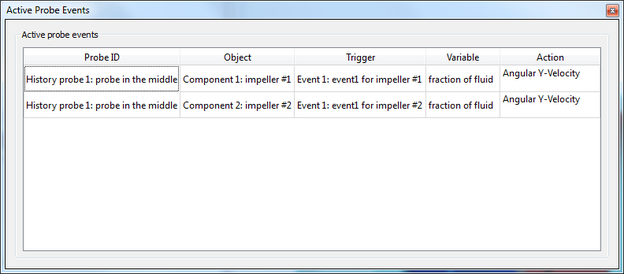
During the computation, whenever a new event is triggered, a message will be
written to the screen, hd3msg.*, hd3out.*, and report.*
files. The message includes the triggering time, cycle number, action name,
event number, and event name. Depending on the actions defined in the event,
corresponding new properties are applied to the associated objects.
Restart¶
For restart simulation, there is an option to choose if event status needs to be maintained. if choose to maintain the event status, once a triggered event is found in the restart source, a message will also be written to the corresponding files. Note that if time is reset to zero at restart, the event time will also be reset to zero, to be consistent with global restart setting.
Since active simulation control events are acting on specific objects, in order to maintain correct event status for restart, certain rules have to be followed:
- The definition of the object whose status has been changed by events has to be the same as in restart source, especially its order on the corresponding object tree, and its time table.
- The definition of the event which triggers the object status change has to be the same as in restart source, including its order in the event list, unless all events for the corresponding object are removed for restart, in which case the status of the object will be kept unchanged as in restart source.
- If an object status has been changed in restart source, and the new properties are specified from external files, the corresponding events that triggering the changes have to be defined, and have to contain the same external files.
The cooling channel on/off status and the squeeze pin activation status are always maintained for restart.
Adiabatic Bubbles¶
In one-fluid, free surface flows, resolved void regions that are surrounded by
fluid are called bubbles. Bubbles must be resolved by a minimum of three
cells across the diameter of the bubble, though ten cells is a more practical
minimum requirement for an accurate solution. The Adiabatic bubbles
option on the Model Setup–>Physics–>Bubble and Phase Change
dialog denotes that the pressure-volume-temperature relationship for the
bubble will follow an adiabatic law. In this case, the pressure in each bubble
will be inversely proportional to its volume to the power of Gamma.
As such, it requires that the ratio of specific heats, Gamma, is set to
a positive number between 1.28 and 1.67. Note that there is a special case
when  that corresponds to isothermal bubbles.
that corresponds to isothermal bubbles.
See the Bubble and Void Region Models section in the Theory chapter for more details on the adiabatic approximation.
Note
- This bubble models do not apply to bubbles that are in contact with a specified pressure boundary with fluid fraction equal to zero. Those void regions always assume the boundary pressure.
- The implicit algorithm for computing the bubble pressure is recommended. It is active by default, but may be changed by modifying the Bubble pressure selection on the Numerics tab.
See also
Theory manual section Bubble and Void Region Models
Air Entrainment¶
In some free-surface flows, gas may be entrained at the free surface due to turbulence or certain flow conditions, e.g., an impinging jet. This has a wide variety of applications, from modeling the flow down a spillway, to bottle filling and defect prediction in metal casting.
In FLOW-3D , the entrainment of gas can be modeled the Air entrainment model. The Air entrainment model is activated on the Model Setup–>Physics widget and estimates the rate at which gas (represented by void regions) is entrained into the flow using a balance of stabilizing forces (gravity and surface tension) and destabilizing forces (turbulence). Although the primary focus of the model is to compute the air entrainment resulting from turbulent disturbances at a free surface, the model also contains logic for handling entrainment resulting from laminar jets impinging on a free surface. Therefore, the model may be used for both laminar and turbulent cases. When modeling turbulent flows, the Two-equation , RNG or Two-equation turbulence models are recommended. These models can be activated in and are discussed in more detail in Turbulence.
When using the Air entrainment model, the Entrainment rate coefficient must be defined to be a positive value; the default value of 0.5 is a suitable starting point for most cases. The Surface tension coefficient for fluid can also be defined to include surface tension in the balance of forces defining the amount of entrained air. It does not activate the surface tension model.
The air is entrained in terms of volume, then converted to mass using the equation of state for air, to be tracked within the fluid. When converting it back to volume, the local fluid temperature and pressure is taken into account, thus thermal and pressure effects are taken into account in the evaluation of the entrained air volume.
When the adiabatic bubble model is used, the air entrained at the surface of a bubble reduces its pressure accordingly.
If the heat transfer model is not activated, then it is necessary to specify an approximate fluid temperature in Reference Temperature to be used in the gas equation-of-state. Input pressure and temperature values are automatically transformed by the pre-processor to absolute units in order to make use of the gas equation-of-state to convert entrained air volume into mass and back.
The Air entrainment model evaluates in each cell and outputs several quantities, namely, entrained air volume fraction, entrained air mass concentration and air entrainment volume flux, which are available for post-processing in spatial and history plots. Air volume fraction can also be defined at boundary conditions as Concentration of air as either a fixed or time- dependent value when using the Specified pressure, Wave, Volume flow rate, or Specified velocity boundary types. Concentration of air can also be defined as a fixed value in the Source properties of mass-momentum sources.
When using the variable density air entrainment model (see below), the density adjustments for the inflowing fluid are calculated automatically to account for the combined fluid and air densities. As a result, the specification of Volume flow rate will be the total volumetric flow rate of the fluid and entrained air mixture, and should be taken into account by the user when defining the Concentration of air at boundaries.
In this basic mode, the model acts as a passive addition to the main flow model in that it does not affect the fluid density and volume. Also, air is not allowed to escape back into atmosphere. This is sufficient when the amount of entrained air is relatively small (<10% by volume).
Buoyancy effects can be included by selecting the Activate bulking and Activate buoyancy options and defining the associated parameters. The Activate bulking option enables the Density evaluation model to account for the non-uniform fluid density resulting from the entrained air (see Flows with Density Variations). In this case, input the value for Density of phase #2 in the model panel.
The Activate buoyancy option enables the Drift-flux model to account for the interaction between the two phases. It requires that the Activate bulking option is already enabled. In this case, the air bubbles can move within fluid due to the difference in their densities and affect the fluid motion. See the full description of the model in Drift Flux. The entrained air can also escape back into the void, as described in Escape of Gas through a Free Surface.
Note
- The reference temperature is required only if heat transfer is not activated in . It should be set to the mean liquid temperature, rather than gas temperature, as the entrained air temperature is likely to be dominanted by it.
See also
- Model Reference -> Turbulence
- Model Reference -> Flows with Density Variations
- Model Reference -> Drift Flux
- Model Reference -> Escape of Gas through a Free Surface
- Model Reference -> Mass-Momentum Sources
- Parameters in Air Entrainment Model Parameters.
- TN-61 at http://users.flow3d.com/technical-notes/
Cavitation and Bubble Formation (Nucleation)¶
There are a few forms of cavitation modeling available in FLOW-3D . Inertial, thermal and potential; 1) When modeling Inertial Cavitation, the formation can be passive to where voids do not open and the volume fraction of the gas is tracked using a scalar quantity. Or, an active model can be used which creates voids that open. 2) Temperature dependent cavitation is for nucleating vapor due to heat. 3) The Cavitation Potential model does not track the gas quantity or path advected. Instead it considers the likelihood of cavitation.
Inertial Cavitation: Opening of voids in high-velocity flows¶
Cavitating void regions may open up in fluid when the local pressure drops below a critical value, the cavitation pressure. The cavitation model is activated in and can only be used in one-fluid free-surface flows. Cavitation pressure and Characteristic time for formation of cavitation bubbles are also set in this dialog.
To simulate cavitation, select Activate cavitation model.
Next, select either Simplified model or Empirical model. The former is the default, and simulates the generation of cavitation wherever the local fluid pressure drops below the Cavitation pressure. The rate of formation of cavitation bubbles is controlled by the Characteristic time for formation of cavitation bubbles parameter. Smaller values for the characteristic time will simulate a more rapid growth of cavitation (i.e., void regions are more likely to open).
If the Empirical model is selected, a new transport equation is solved that computes the advection, production and dissipation of the cavitation volume fraction. The model solves the following:
where
and
Here is the computed cavitation volume fraction,  is the Cavitation production coefficient, is the
Evaporation coefficient, is the
Condensation coefficient,
is the Cavitation production coefficient, is the
Evaporation coefficient, is the
Condensation coefficient,  is the
turbulent kinetic energy (or 10% of the total kinetic energy if no turbulence
model selected),
is the
turbulent kinetic energy (or 10% of the total kinetic energy if no turbulence
model selected),  is the Surface tension
coefficient, is the specified Cavitation
pressure, is the local fluid pressure, and is the
mass fraction of cavitation in the computational cell,
is the Surface tension
coefficient, is the specified Cavitation
pressure, is the local fluid pressure, and is the
mass fraction of cavitation in the computational cell,  and
are the densitities of the liquid and vapor, respectively.
and
are the densitities of the liquid and vapor, respectively.
There are a few inputs for the model:
- The selection under Voids controls what FLOW-3D does when the cavitation volume fraction is predicted to exceed 1% of a cell’s volume. If Passive model is selected, then voids are not opened, but the cavitation volume fraction is predicted and transported throughout the computational domain. This option is less numerically intensive and requires less computational time than the Active model (default) option, whereby void regions are opened where the cavitation volume fraction is predicted to exceed 1% of a cell’s volume. This option uses more computational resources, but will more accurately predict cavitation because the opening of voids will relax the fluid pressure in the vicinity, possibly reducing further cavitation in the surrounding fluid. However, the Passive option is useful, especially for high pressure die casting where tracking the regions of greatest cavitation, and where the bubbles are transported are key, yet keeping CPU time to a minimum is critical.
- The Cavitation pressure is constant unless the Thermal bubbles with phase change option is selected (see Temperature-Dependent Cavitation below), along with energy transport. All cavitating void regions will have the same pressure and each region is treated as a fixed pressure bubble, with the pressure equal to specified Cavitation pressure.
- The Characteristic time for formation of cavitation bubbles parameter is needed only when the Simplified model option is selected. It controls the rate at which cavitating bubbles grow. Since the nucleation of bubbles depends of physics not entirely modeled in FLOW-3D (number of nucleation sites, cleanliness of system, etc.), the user needs to provide a characteristic time in which the bubble size reaches equilibrium with the surrounding fluid. By default, this time is 5 times the current time step. The user may specify another value if desired. However, the greater of the two is used to minimize numerical noise.
- The Surface tension coefficient is a duplicate of same value used for the Surface Tension, and is needed for the Empirical model, regardless if the Surface Tension model is turned on. This represents the physical surface tension coefficient at the typical temperatures where cavitation is expected.
- The Density of cavitation bubbles represents the mean density of the bubbles that form (at the specified Cavitation pressure); it is needed only for the Empirical model option.
- The Cavitation production coefficient is needed only for the Empirical model option and is an empirical coefficient that controls the production term in the model for cavitation volume fraction (see Cavitating Void Regions) whose default value is 0.02. Generally, this value need not be changed unless you have data to confirm that the model is over- or under-predicting the rate of cavitation production (ie., the rate at which cavitation volume fraction grows when the local pressure falls below the Cavitation pressure).
- The Cavitation dissipation coefficient is needed only for the Empirical model options and is an empirical coefficient that controls the dissipation term in the model for cavitation volume fraction (see Cavitating Void Regions) whose default value is 0.01. Again, this value needed not be changed unless you have data to suggest that the model is over- or under-predicting the rate of cavitation dissipation (ie., the rate at which cavitation volume fraction shrinks when the local pressure rises above the Cavitation pressure).
- The Activate cavitation potential model option is independent of the rest of the cavitation model: its purpose is merely to passively show where cavitation is most likely to occur within the domain. Cavitating voids are not produced, nor is the cavitation volume fraction tracked as it is advected throughout the domain. This option can be used with, or separately from the aforementioned Cavitation model.
Note
- The definition of a reference pressure is strongly recommended when modeling cavitation. This can consist of a specified-pressure boundary condition or a constant pressure void.
- If the Empirical model is selected, for better accuracy it is recommended that a turbulent transport model (see Turbulence) be used.
Temperature-Dependent Cavitation¶
If the Thermal bubbles with phase change model is activated in , the cavitation pressure becomes a function of the local fluid temperature and computed from the vapor saturation curve that must be defined in . The constant Cavitation pressure input parameter is not used in this model. The general model should be used when bubbles are formed by heating the fluid like in thermal bubble printers.
In this case, the Cavitation model is coupled to
the Phase Change with Thermal Bubbles. The value of the phase change
Accommodation coefficient for evaporation and Accommodation coefficient for condensation values are typically between 0.01 and 0.1.
Exponent for T-P Curve is the exponent in the temperature-pressure
saturation relationship. The default saturation curve is a Clausius-Clapeyron
relation between pressure and temperature  :
:
where:
- and (entitled Saturation Pressure and Saturation Temperature on the properties listed above) are the pressure and temperature values at a point on the saturation curve.
- is entered as Exponent for T-P Curve; its value should typically be .
 is Gamma, the ratio of the vapor specific heats ().
is Gamma, the ratio of the vapor specific heats ().- is the Vapor specific heat at constant volume.
- is the Latent Heat of Vapor.
- is the temperature.
 density of the vapor in the bubble.
density of the vapor in the bubble.
After opening, each cavitating region has its own pressure, , which
is a function of heat and mass transfer and the volume of the bubble:  .
.
Boiling, or cavitation, in the liquid bulk can be delayed past the saturation temperature by using the Superheat temperature. A value of the Superheat temperature greater than the local boiling temperature allows the liquid in the bulk to heat to that temperature before vapor bubbles begin to form at that location. Before the liquid temperature reaches the superheat temperature, the formation of the vapor bubbles is controlled by the Characteristic time for formation of cavitation bubbles defined in . After the Superheat temperature is exceeded, vapor bubbles appear and grow on a time scale of five time-step sizes.
Superheating can be selectively turned off near solid walls by using a non-zero wall roughness. Component roughness is defined in . See Component and Sub-Component Roughness.
Similarly to superheating, liquefaction of the evaporated fluid can be designed to occur below the Saturation Temperature by setting a Supercooling temperature. When a Supercooling temperature lower than the boiling point of the bulk fluid is defined, the fluid will remain in the vapor phase and continue to cool down until the specified Supercooling temperature is reached. However, contrary to superheating, supercooling is not subject to the same characteristic time or time-step constraints described above. Once, the vapor reaches the given Supercooling temperature liquefaction occurs immediately. It is important to note that unlike superheating, supercooling applies only to 2 Fluid simulations and only in areas of bulk vapor where local temperature gradients are possible. Fluid condensation will behave normally on all other surfaces such as the liquid-vapor interface and solid walls.
Note
- Only the Simplified model can be used in conjunction with Thermal bubbles with phase change.
- In the general cavitation model newly created vapor bubbles are assigned heat transfer void type 1.
- The definition of a reference pressure is strongly recommended when modeling cavitation. For thermal cavitation, this will be a specified-pressure boundary condition.
See also
- Heat Transfer to Voids
- Phase Change with Thermal Bubbles
- Parameters in Cavitation Properties
- Parameters in Phase Change Properties
Cavitation Potential Model¶
If modeling cavitation directly is not desirable due to numerical constraints, the Cavitation potential model can be used instead. This model is activated in . It offers an efficient way of modeling possible cavitation by predicting the likelihood of cavitation, or the cavitation potential, without actually introducing bubbles into the flow. The model evaluates the integral over time of the difference between the Cavitation pressure and the local fluid pressure:
The larger the value of this variable, the larger the potential for cavitation can be. The integral is taken from the beginning of the simulation.
The cavitation potential model can be used to predict die erosion due to cavitation during high-pressure die casting filling, where metal pressure often drops several atmospheres below the vapor pressure in areas of very fast flow, usually near the gates, causing the metal to cavitate. The most reliable indications of possible die erosion are highly localized “hot spots” of the cavitation potential, that is, small areas of very high values of this quantity. To activate this model, go to and enter a value for the cavitation pressure.
Combustible Objects¶
Combustible objects can be used to model the combustion process in solid-fuel rockets. Please refer to the Combustible Object Model of the Theory chapter for details of the model.
In order to use combustible objects the compressible flow model needs to be activated and the model itself can be turned ON by selecting the Combustible objects button in the Physics tab.
The combustible object needs to be defined as a special type of component and the reaction parameters need to be specified. This can be done in the Geometry tab and the following image provides a screenshot of the various parameters required.
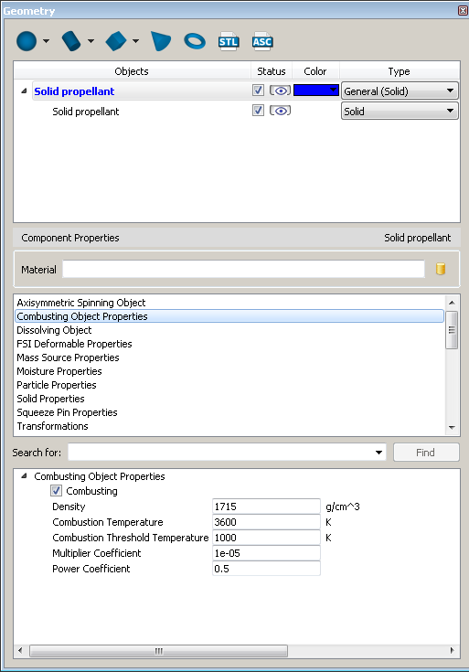
Note: The reaction rate is only a function of the local gas pressure. A high initial gas pressure needs to be defined to ignite the fuel and sustain the reaction. Implicit advection solver, although not necessary, can be used to reduce run times.
Compressible Flows¶
Fully-compressible flows¶
The compressible flow model treats fluid #2 as an ideal, compressible gas. Since only fluid #2 can be compressible, this option can only be used together with the two-fluid model. To enable the model, go to Model Setup –> Physics and select and from the dropdown menus at the top of the window.
The fluid properties are set on the Fluids widget. The compressible flow model requires the specific Gas Constant and the thermal properties of the fluid.
Input vlaues of pressure are automatically converted to absolute units in pre-processor. Similarly, for temperature, the input is automatically converted to absolute units based on the temperature units (see Units). The conversion enable the use of the equation-of-state whenever it is needed.
See also
- Model Reference -> Two-Fluid Flow.
- Parameters in State Equation Properties
Acoustic Waves (Limited Compressibility)¶
The limited compressibility model is used to model acoustic waves in a fluid that otherwise can be treated as incompressible. It is typically used for flows of liquids in problems where sharp pressure changes occur or can be used to simulate flows of gases where pressure fluctuations are small. The model is activated by setting Compressibility coefficients for either or both fluids in the fluid properties at the Fluids widget. These coefficients are defined as of fluid #1 and fluid #2, where is the respective fluid density and 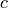 is the adiabatic speed of sound. These parameters are assumed to be independent of pressure, density or temperature, so they should be set to values for the expected pressure, density and temperature during the simulation.
Limited compressibility can also be used as a numerical tool to improve pressure convergence in “stiff” flow problems. The idea is to allow a small amount of “give” in the fluid to dampen out sharp pressure fluctuations, easing convergence. This can be done automatically by selecting the Implicit with automatic limited compressibility option in the Pressure solver type drop-down list at the Pressure solver options group of options in Numerics. In this case, there is no need for the user to define the compressibility coefficient in the fluid properties.
Note
- Unpyhsically large values for the compressibility may result in poor conservation of fluid mass.
- The time-step size should be limited to the characteristic time scale of the acoustic waves to ensure accuracy if acoustic waves are of primary importance. This is done by restricting the the time-step size using the Maximum time step option on the Numerics widget. The characteristic time scale can be estimated as the time it takes for an acoustic wave to propagate through the distance of one cell.
See also
RCSQL and RCSQV in State Equation Properties.
Condensation/Evaporation at Free Surfaces¶
Evaporation into Constant Pressure Bubbles¶
The simplest phase change model in FLOW-3D describes the evaporation into constant-pressure void regions. The void region pressure and temperature are prescribed by the user and do not change due to phase change. The main assumption in this approach is that the void regions are sufficiently large that the phase change does not significantly change their properties. The drying of rain puddles into the air are an example of such process.
The evaporation mass flux is governed by Eq. (52) in which the saturation pressure is defined from the vapor saturation curve and the temperature of the liquid at the surface, and the vapor pressure is the user-defined Void vapor partial pressure.
To activate this model, select to activate this model. The in defines the saturation state of the vapor in the void regions. The latent heat of vaporization is specified in .
The fluid energy equation (Heat transfer) must be solved in conjunction with this model (). Define positive values for the Accommodation coefficients, found in .
The evaporative mass flux in each surface cell is saved for post-processing and can be visualized in .
Vaporizations may take place only in cells containing free surface. No condensation is taken into account in this model. The vapor partial pressure is the same and constant for all voids, both with constant and variable pressure, e.g., prescribed by a Void pointer.
Phase Change with Thermal Bubbles¶
Mass transfer due to liquid-vapor phase change can occur between a bubble and the surrounding liquid. It is assumed that the bubble is completely filled only with vapor phase of fluid #1, i.e., there is only one gas component, and that the bubbles have uniform pressure, temperature, and density. There can be many bubbles, and the vapor in each bubble has a unique, time-varying state because of volume changes and heat and mass transfer. Bubbles in contact with a specified pressure mesh boundary with a fluid fraction of zero will take on the vapor state defined at that boundary. The vaporization/condensation model is activated in .
Bubbles are initialized by specifying their initial pressures and temperature, relative or absolute. Vapor can also be created in the fluid through cavitation or boiling as described in Cavitation and Bubble Formation (Nucleation). The vapor properties and saturation curve are defined under .
The Accommodation coefficients are coefficients of proportionality for the rate of phase change. Values between 0.01 and 0.1 usually provide good results. Positive values for the Accommodation coefficients and the Latent heat of vapor in must be defined. A non-zero value of the Vapor specific heat is also required.
Heat transfer between geometry components and the vapor in a bubble is specified by the component-to-void heat transfer coefficients in . The same is true for heat transfer between liquid and vapor in a bubble, which is specified by a fluid-to-void heat transfer coefficient. Note that newly created vapor bubbles are assigned heat transfer void type 1. must be activated to enable heat transfer between vapor bubbles and solid components.
Phase change mass flux is based on the average fluid properties (density, thermal energy, and liquid fraction) in a computational cell. In particular, it is assumed that the temperatures of the liquid and vapor are uniform in an element. In this sense, the phase change model is phenomenological and requires the adjustment of the Accommodation coefficients to control the rates of evaporation and condensation through the Accommodation coefficient for evaporation and the Accommodation coefficient for condensation, respectively. It is not recommended to use a value larger than 1, because convergence of the phase change model may be difficult to attain. Typical values used are between 0.01 and 0.1.
See also
Two-fluid Model¶
This model is similar to the one-fluid model of Condensation/Evaporation (Phase Change with Thermal Bubbles), except that the full dynamics in the vapor regions are computed. In this case, the two-fluid model with an incompressible liquid and a compressible vapor can have liquid-vapor phase change occurring at the interface. Nucleation in pure liquid regions or condensation in pure vapor regions is also allowed. Fluid #1 describes the liquid state of the fluid and compressible fluid #2 (gas) describes the vapor.
The two-fluid phase change model is initiated in and requires positive values for the Accommodation coefficients in . The phase-change rate is directly proportional to the accommodation coefficients. The values of the coefficients are typically in the 0.01 to 0.1 range, and should not exceed 1.0, although this is not an absolute limit. Vapor properties are defined as properties of the compressible fluid #2, and the vapor latent heat and the saturation curve are defined under . The pressure-temperature pair, defined by the Saturation Pressure and Saturation Temperature, must be a point on the saturation curve. Exponent for curve is the exponent in the Clapeyron temperature-pressure saturation relationship, (48).
Phase changes are based on the average fluid properties (density, thermal energy, and liquid fraction) in a control volume. In particular, the temperatures of the liquid and vapor are assumed to be uniform in an element. The mass transfer rate at the liquid/vapor interface is computed based on the difference between the local saturation pressure of the liquid and the vapor pressure, (52).
The rate per unit area at which fluid mass changes phase at the liquid-vapor interface is computed and stored for post-processing as a spatial variable called Phase change mass flux. Positive values indicate evaporation and negative, condensation.
Phase change in the liquid bulk can be delayed past the saturation temperature by specifying the Superheat temperature. A value of the Superheat Temperature greater than the local saturation temperature allows the liquid in the bulk to heat until that temperature before vapor bubbles begin to form. Superheating can be selectively turned off near solid walls by using a non-zero wall roughness. Component roughness is defined in .
Two Fluids with Non-condensable Gas¶
Normally, the condensation/evaporation model (two-fluid model) assumes that fluid #2 is composed entirely of the vapor phase of the liquid. For situations where the gaseous phase is composed of a mixture of vapor and a non-condensable gas (e.g., water vapor in air), select . Additions to the two-fluid vapor model include the computation of a mixture gas constant, which is evaluated as a density-weighted average of the gas constants of the vapor and the non-condensable gas:
where:
- the computed macroscopic vapor density.
- computed non-condensable gas macroscopic density.
- is the gas constant for the vapor
- is the mean gas constant.
Therefore, the pressure is computed as . Although the saturation pressure of the vapor is computed the same as it was as in the standard two-fluid model with phase change (Two-fluid Model), the evaporation mass flux is computed using the partial pressures of the vapor as opposed to using the full gas pressure,
where:
- is the partial pressure of the vapor in the gaseous fluid,
- is the saturation pressure at the local temperature, computed from the Clausius-Clapeyron Equation, which is defined in the user-customizable subroutine
PSAT.F90. This equation is shown in Two-fluid Model. - is the Accommodation coefficient for evaporation, which is typically set to a value between 0.01 and 0.1.
If the Accommodation coefficient for evaporation were to have a value of 1.0, the model would attempt to predict sufficient phase change to reach equilibrium within one time step. This rate would likely be too fast compared to the actual physical conditions. It is impossible for FLOW-3D to predict accurately the phase change rate without this coefficient as the dynamics within the boundary layer at the liquid/gas interface are too small in scale to include in the model.
To use this model, select the check box in . Enter the values for the Gas constant and Specific heat of the non-condensable gas. Where gas enters at domain boundaries, you can specify the volume fraction of the non-condensable gas (between 0 and 1) in Non-condensable gas fraction in the auxiliary section of each of the mesh block boundaries. To define initial non-condensable gas volume fraction, specify the . This quantity can also be specified in individual initial fluid regions and pointers.
See also
- Model Reference -> Two-fluid Model
- Parameters in Phase Change Properties
Vaporization Residue¶
When a liquid solvent evaporates any solute that it contains becomes more concentrated. Likewise, in FLOW-3D , solutes modeled with a scalar concentration variable will automatically be concentrated by evaporation at free surfaces of one-fluid problems. If a surface element is less than half filled with liquid, then the concentration of the scalar will also occur in the principal neighbor of the surface element to the extent that the concentration change is spread over a region equal to half the thickness of the surface element.
If enough evaporation occurs and the solute becomes dense, it may result in a surface skin or a residue may form on a solid surface if the solute evaporates completely away. Residue formation can be simulated in conjunction with the Constant pressure bubbles with vaporization, and Thermal bubbles with phase change models that are activated in . The residue model can then be activated through by clicking on the Activate vaporization residue model checkbox and defining the maximum packing density for the solute scalar. Once the solute is concentrated to its maximum packing density, then any further concentration results in a residue that is fixed (not moving). If more than one scalar solute is present then the residue records the total of all solute contributions to the residue.
In conjuction with the residue model, the contact line pinning surface boundary condition should be activated for the Geometry component where evaporation is expected to occur, thus, leaving a residue. This surface boundary condition is used to pin the free surface of a droplet onto the surface of the solid. This is achieved by setting the outward velicity of the fluid to zero. In that manner, the fluid free surface can only recede from the orginal location, when evaporation occurs, or roll over the pinning point, if more fluid is added. It is important to note that this surface boundary condition works in conjuction with the Surface tension model and that the value of the Contact angle significantly affects the behavior of the pinned free surface. The option can be activated in .
Note
The initial solute concentration is entered using FLOW-3D ’s Scalars model from .
See also
Cooling Channels¶
In permanent mold and die casting, cooling channels are used to cool the mold as well as extract heat from hot spots that can potentially create shrinkage porosity in the cast part. In FLOW-3D , the flow in a cooling channel is not modeled explicitly, but instead the cooling action is modeled approximately by using a uniform effective heat transfer coefficient and temperature of the cooling channel. This section shows the user how to do the following:
- Define cooling channels
- Determine heat transfer coefficients between cooling channels and mold
Cooling channel definition¶
To create cooling channels the following steps need to be followed.
Activate Heat Transfer from tab.
Add the cooling lines as subcomponents of the component that describes the die, using either STL files or primitives. A cooling channel with unique properties (temperature, heat transfer coefficient, control type, etc.) should be defined as a separate subcomponent. Cooling channels with identical properties can be modeled as a single subcomponent. Select Cooling channel for each such subcomponent.
Define Cooling channel temperature.
Define Cooling channel heat transfer coefficient.
Select Cooling channel control type.
If Controlled by time is selected, then define the cooling channel time control table.
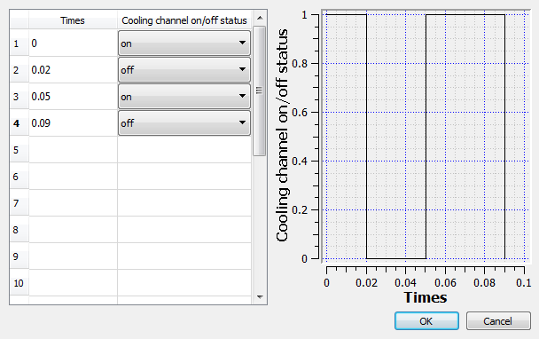If Controlled by thermocouple is selected, then select the history probe number (probe(s) must be defined inside the mold prior to this), and turn-on and turn-off temperatures.
The probe defines the location where the wall temperature is monitored. If cooling mode is selected, the cooling channel is turned on when the wall temperature at the specified probe reaches the turn-on temperature, and is kept on as the temperature decreases, until the turn-off temperature is reached. Thus, the turn-on temperature needs to be higher than the turn-off temperature. If heating mode is selected, the cooling channel is turned on when the wall temperature at the specified probe goes below the turn-on temperature, and kept on as the temperature rises, until the turn-off temperature is reached. Thus, the turn-on temperature needs to be lower than the turn-off temperature.
Whenever there is a status change for a cooling channel, a message will be written to the screen,
hd3msg.*,hd3out.*, andreport.*files. The cooling channel status will also be written to the General history.Note
- If the specified probe is not defined or invalid, the cooling channel will be turned off.
- If the turn-on and turn-off temperatures are not set correctly, the cooling channel will be turned off.
If Controlled by total heat is selected, then define the critical total heat, and the cooling channel on/off status time table.
If this control option is chosen, the cooling channel will be turned off if the total heat removed (cooling) or added (heating) is greater than the critical total heat. It works in combination with the status time table. In other words, the status time table can still be provided as normal, and works together with the total heat control. The cooling channel will be turned off at the moment either it is set to off by the status time table, or by the total heat control. The cooling channel can then be turned on later by the status time table. However, the total heat counting for the cooling channel will restart from zero after it is turned on.
In thermal die cycling simulations, at the beginning of each cycle, the cooling channel will be turned on, and the total heat counting reset to zero. This is to account for the situation that during a cycle, the cooling channel total heat has never reached the critical value, but the total heat counting has to restart from zero for each cycle.
Whenever there is a status change for a cooling channel, no matter it is due to the total heat control, or time table, a message will be written to the screen,
hd3msg.*,hd3out.*, andreport.*. The cooling channel status will also be written to the General history.The total heat history for a cooling channel can be viewed by integrating the heat flow rate general history data.
Note
- In order for the code to be able to distinguish the on/off status changes specified in the status time table, the time intervals between the status changes have to be larger than the time steps.
- To make sure the restart works correctly, the cooling channel indexes have to be the same as in the restart source for the restart simulations.
- The values defined in the cooling channel temperature, heat transfer coefficient, and time control tables are piece-wise constant between and , and equals to the value defined at . If the real simulation time is outside of the time defined in the tables, the nearest value will be used.
- Cooling channels also work in General Moving Objects.
See also
Parameters in Subcomponents: Cooling Channel
Heat transfer coefficients for cooling channels¶
Heat transfer coefficients for cooling channels can be To calculate the heat transfer coefficient in a pipe, you must first calculate the non-dimensional Nusselt number. Table Heat Transfer Equations for Pipe Flow is a list of equations used to determine Nusselt number. The user must be careful in choosing the correct condition or the results could result in some uncertainty.
Heat Transfer Equations for Pipe Flow¶ CONDITIONS EQUATION Fully-developed turbulent flow with and . for cooling and for heating
Fully-developed turbulent flow with and . Fully-developed turbulent flow with and Fully-developed laminar flow, constant surface temperature
In the table,  is the Reynolds number, which is equal to the ratio
inertial forces/viscous forces:
is the Reynolds number, which is equal to the ratio
inertial forces/viscous forces:
(1)¶
is the Prandtl number which is equal to the ratio viscous forces/thermal diffusion rate:
(2)¶
where:
- is the inside diameter of the pipe
- is the thermal conductivity of the fluid
- is the density of the fluid
 is the mean velocity of the flow
is the mean velocity of the flow is the viscosity of the fluid
is the viscosity of the fluid- is the viscosity at the surface temperature of the wall
- is heat capacity at constant pressure
The convective heat transfer coefficient,  , is then calculated from the
correlation given in Eq. (3) which can be derived from
Newton’s law of cooling ratio between a stagnant flow and moving flow:
, is then calculated from the
correlation given in Eq. (3) which can be derived from
Newton’s law of cooling ratio between a stagnant flow and moving flow:
(3)¶
where:
- is the heat transfer coefficient
- is the inside diameter of the pipe
- is the thermal conductivity of the fluid
In the thermal entry region, a “local” convective heat transfer coefficient, , is a function of the axial location where an “average” convective heat transfer coefficient, , may be obtained by integrating the heat transfer over the entire length of the pipe.
Example:
Water flows through a pipe at the temperature of enters a 0.254
-long tube with an inner diameter of
First we calculate the Reynolds number using Eq. (1) to determine if the flow is turbulent or laminar and what regime it falls in to give the proper condition for the appropriate heat transfer equation.
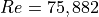
The flow is turbulent. Next we calculate the Prandtl number using Eq. (2) to help us determine which heat transfer equation is needed. The Prandtl number is calculated as:
Finally using the third condition from the Table Heat Transfer Equations for Pipe Flow, gives the following equation for the Nusselt number:
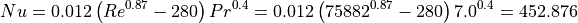
Solving for the convective heat transfer coefficient,
Core Gas¶
Model Dependencies¶
The core gas model computes the generation and flow of the chemical binder gases in permeable cores. The model works in conjunction with other models in FLOW-3D . It requires the activation of the full heat transfer model . Pressures and temperature can be defined in any unit system as they are automatically converted to absolute units in pre-processor based on the user-defined units.
Global Model Controls¶
The model is controlled by a set of global input parameters available through the widget and a set of component-specific input parameters set in the widget. The model is activated in . Additionally, by selecting Activate print venting the user can activate venting at all core prints and set numerical options that control the computation of the core gas source terms and the convergence behavior of the core gas flow solver. The print venting option allows the user to model cases of well-vented print surfaces where the gas escapes to atmosphere either through the parting plane, or through specially introduced mold vents drilled to the print surfaces. The reference pressure at prints is the void pressure set in .
To achieve good accuracy of the core gas source in the binder decomposition
zone, a sub-cell resolution method is used. For a typical resin binder a
decomposition zone width at the surface of the core, the thermal gradients are
steepest, is 0.25-0.5 mm. A submesh resolution is, therefore, needed for a
mesh with cell size larger than 0.5 mm; mesh cells are subdivided further into
sub-cells to capture these steep thermal gradients. However, the total number
of sub-cells in each computational cell has to be less than 1000. Thus if
using cartesian coordinates, the sub-scaling dimension of binder
array ISSDIMCG must be less than 10. If using cylindrical coordinates,
ISSDIMCG must be less than 32.The core gas flow is computed with a
compressible SOR pressure-velocity solver with a Convergence
tolerance multiplier and Maximum iteration count defined in
. Defaults here are
typically optimal; however, greater time accuracy can be achieved by setting
the Convergence tolerance multiplier to a value smaller than 1.0,
and some simulations may require more than the 1000 iteration limit.
The core gas flow is influenced by the metal pressure distribution on the surface of the core which acts as a boundary condition for the gas flow. With the default Boundary underrelaxation time of zero, the metal pressure variations are instantaneously reflected on the core gas flow. For a positive value of the under-relaxation time, the changes in the metal pressures exponentially decay to the current value with the specified relaxation time. Negative values are not allowed.
Core Gas Component Properties¶
Individual core gas obstacles are defined in the component list. The Component Type has to be Core gas. In the Solid Properties, the user can choose if Shell mold is used. If Shell mold is chosen, the thermal shell layer defined by The Maximum Thermal Penetration Depth is treated as an actual shell mold with full core gas venting at the shell exterior boundary.
A fixed pressure venting boundary condition is imposed at the boundary, with the pressure defined in . If Shell mold is not chosen, the component volume outside the thermal layer is treated as an impenetrable wall.

The core gas obstacle is characterized by the thermophysical properties of the
sand, by the chemical properties of the binder, and by the flow properties of
the gasified binder. The parameter Average Sand Grain Diameter -
GRAINDIAM, or Sand Darcian Permeability - PERMCG
and Sand Non-Darcian Permeability - PERMCG2 must be
provided and be positive. If Average Sand Grain Diameter is used,
it is converted in the pre-processor to the linear and quadratic drag
coefficients for a given sand core component according to:
If Sand Darcian Permeability and Sand Non-Darcian Permeability are used, they are converted in the pre-processor to the linear and quadratic drag coefficients according to:
where  is the core porosity. For more information about the core
gas component properties, please refer to the Theory manual section
Core Gas Generation and Flow in Sand Cores and Molds.
is the core porosity. For more information about the core
gas component properties, please refer to the Theory manual section
Core Gas Generation and Flow in Sand Cores and Molds.
Model Output¶
The core gas model generates model-specific output for post-processing. The General history output in Probe includes the core gas mass fluxes to metal, to void, to prints and a total gasification rate from each core gas component. The spatial plots contain the binder content, gasification rate, surface gas flux and gas density in the core. To access gas velocities and pressures the user should specifically choose Core gas velocity and Core gas pressure variables to plot these quantities inside the components. The user can also plot core gas pressures concurrently with metal pressure in the casting.
The gas flow domain inside core components is confined to fully blocked cells,
therefore, the sand core thickness should be resolved by at least one full
cell for the core gas flow solution to be accurate. The quality of core
component resolution should be checked by first preprocessing the input, then
loading the prpgrf file into the tab and
plotting the iso-surface of the Complement of volume fraction
with the contour value of 0.99. The resulting iso-surface for the sand core
components should be continuous throughout the core. If it is not continuous,
then the mesh should be refined and the resolution checked again using this
procedure.
Defect tracking¶
The Free surface defect tracking model tracks surface impurities that arise from oxide formation on the free surface. The model is activated by selecting , and activate Track free surface defects:
The surface defect prediction algorithm in FLOW-3D consists of a source term for oxide formation, which is proportional to the surface area and exposure time. A transport equation is used to track the movement of defect material with the flowing metal.
Oxide generation at free surfaces is governed by the Defect generation rate, which defaults to 1.0. The actual magnitude of the generation rate is unimportant, especially in the absence of experimental data quantifying the production of the contamination at the surface. The distribution of the contaminant in the filled mold can be interpreted as the distribution of the probability of defects. For example, locations of local maximums of the oxide defect concentration are more likely to be the locations of defects.
The Molecular diffusion coefficient controls the rate of molecular diffusion (i.e., Brownian-motion based) of the defect after it has been generated, during transport. The Turbulent diffusion coefficient multiplier controls the rate of diffusion due to turbulence: a value of 1.0 means that the defect diffuses at the same rate as the momentum, while values less than 1.0 mean that the diffusion of defect is slower than that of momentum. Values greater than 1.0 make no physical sense.
Note
- Surface contaminants can only be tracked in flows with sharp fluid interfaces.
- In the current model, surface contaminant cannot escape through the surrounding mold material.
- Surface defects are represented by the flag in the Selected data output area.
See also
The Lost foam residue tracking is a related model for approximating defects generated by the decomposition of foam during the Lost Foam Casting Process.
Drift Flux¶
The drift model describes the relative flow of two intermixed fluid components, one continuous and the other dispersed, with different densities. The components can be of different phases, or of the same phase but different (immiscible) fluids. Limitations to the applicability of the drift model can exist when the dispersed phase particle size is large. These limitations can generally be avoided by maintaining a dispersed phase particle size of less than 10% of the mesh cell size. See TN-77 at http://users.flow3d.com/technical-notes/ for a more detailed discussion on the limitations to the drift flux model.

Note
The drift-flux model requires that the Viscous flow option (IFVISC =1) be enabled.
Versions of the Model¶
One fluid, variable density flow with or without free surface: This option allows the user to simulate a mixture of two phases and still include a transient free surface with a void space. The fluid is a mixture of two components, each of a constant density. First, must be selected and the variable density model must be selected in or . Second, activate the Drift-flux model in . The continuous phase density is defined in . For the dispersed component (e.g., bubbles, solid particles, or immiscible liquid droplets) the density is set in . The initial density distribution can be set in Initial – see Initial Conditions. The mixture density at inlet boundaries, i.e., at a velocity or pressure boundary, can be set in Boundaries – see Mesh Boundary Conditions. The initial and boundary values of the mixture densities must be in the range between the densities of the two components. No heat transfer is allowed in this case (i.e., only possible with isothermal simulations).
See also
One fluid flow with solidification with or without free surface: The fluid is a mixture of liquid and solidified phases, each of a constant density. Select . The solidification model must be activated in . See Solidification. The liquid (continuous) and solid (dispersed) phase densities are defined as in case 1. In either Constant uniform density or Density evaluated as a function of other quantities can be used.
See also
Two incompressible fluids, each of a constant density: Select and . Densities for the two fluids are defined in and not in the drift-flux window shown above. Phase #1 is fluid #1 and phase #2 is fluid #2.
See also
Incompressible and compressible fluid mixtures In this case, the density of the compressible gas (fluid #2) is defined by the equation of state, while the incompressible material has a constant density, which is always assumed to be much larger than the gas density. Select . Fluid #1 density is defined in . The gas properties are defined the same way as for any compressible fluid case.
See also
Calculation of drag between the phases¶
The drift-flux model has two terms in the calculation of drag between the phases: Linear and Quadratic, referring to the approximation of momentum coupling. The linear term describes a Stokes-type, viscosity dominated flow of the continuous phase around particles of the dispersed phase. The quadratic term takes into account the pressure forces acting between the two phases, covering a wider range of flow types. The drag per unit volume () is
(4)¶
where:
 is the cross sectional area per unit volume of the dispersed phase.
is the cross sectional area per unit volume of the dispersed phase.
It can be Dynamically computed or by using a constant value of a user-specified Average particle radius,
- 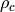 and are the fluid density and dynamic viscosity, and
- is the user-specified Drag coefficient. It is a dimensionless quantity and is 0.5 for spheres (the default)
- is the average particle size in the dispersed component.
The relative velocity between the phases is computed from combining the
driving force of drift (per unit volume), which is merely  ,
with Equation (4). The relative velocity is computed
from the solution of the resulting quadratic equation.
,
with Equation (4). The relative velocity is computed
from the solution of the resulting quadratic equation.
In addition, can be used to model the coalescence of the dispersed phase droplets into a continuous fluid at this volume fraction. If the volume fraction of the second phase drops back below the inversion point, it again reverts to the dispersed phase. This may be important in devices such as oil/water separators.
The Richardson-Zaki model approximates the effects of the dispersed phase interactions when the dispersed phase concentration becomes finite, since the aforementioned model assumes that each droplet/particle/bubble does not see neighboring droplets/particles/bubbles. The model serves to restrict the relative velocity between the phases, :
where
- is the adjusted relative velocity due to particle-particle effects,
- is the relative velocity calculated using Equation (4),
- 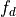 is the volume fraction of dispersed phase,
- is the user-defined Richardson-Zaki coefficient multiplier, and
- is the Richadson-Zaki coefficient, determined based on the particle Reynolds number, :
| Particle Reynolds number, | Richardson-Zaki Coefficient, |
|---|---|
| 0.2 | |
| 0.2 1.0 | |
| 1.0 500 |  |
| 500 |
See also
Model Reference -> Escape of Gas through a Free Surface for a special case of using the drift model.
Dispersed Phase Drop Size¶
With the drift flux model activated and the Type of dispersed phase defined as , the user has the option to select the Dispersed phase drop size to be defined as or . Defining an accurate droplet size is often a critical step when using the drift flux model, because it will directly effect the drag and buoyancy calculations of the dispersed phase within the continuous phase.
When is selected, the droplet size will remain fixed throughout the simulation. This method has limitations because most often the size of the droplet is not known and droplet size can vary as a function of both time and space. The droplet size can decrease by breaking up into multiple smaller droplets as shear is applied across the element. The droplet size can increase when one or more droplets collide and coalesce into a larger droplet.
Selecting the option will allow the droplet size to be calculated dynamically. To use this option the user must first define the Initial drop diameter. Values for the Critical weber number and Critical capillary number must also be specified. These variables control the rate of particle breakup and are described in Flow Science Report 11-16 at http://users.flow3d.com/technical-notes/.
See also
Flow Science Technical Note Flow Science Report 11-16 at http://users.flow3d.com/technical-notes/.
Escape of Gas through a Free Surface¶
The drift-flux model is useful for modeling two-phase flow situations in which the phases or components are strongly coupled. See Drift Flux for the general use of the drift-flux model. The drift model allows a lighter material, dispersed in a denser fluid, to move in the direction of the pressure gradient. In the standard drift flux model applied to a single fluid mixture, both fluid components constitute fluid #1. Therefore, the total fluid volume stays constant as the two components separate. In the case of small gas bubbles rising (drifting) and reaching a free surface, they are allowed to escape into the overlying gas region. This is the purpose of the gas escape model.
The must be activated and Drift-flux –> Type of dispersed phase –> Gaseous must be selected. Also, One fluid and Free surface or sharp interface must be activated in General, as well as a density transport model in .
Two parameters control the rate of gas escape at free surface. The comlpement of Minimum volume fraction of phase 1 defines the maximum allowed accumulation of gas near free surface before it escapes into the atmopshere. It defaults to 0.1 which means that the maximum volume fraction of air near free surface cannot exceed 0.9. The larger the value of this parameter, the faster gas will escape.
The second parameter is Escape rate coefficient which is a multiplier for the gas escape velocity at free surface. It defaults to 1.0 which is suitable for air bubbles in clean water. Contamination of the fluid may impede the gas escape causing foaming, an effect that could be captured by descreasing the value of this parameter. A value of 0.0 would turn off gas escape through the mechanism of moving bubbles. However, the maximum gas concentration would still be controlled by Minimum volume fraction of phase 1. To completely turn off gas escape at free surface, set both parameters equal to 0.0.
Elastic, Plastic, and Viscoelastic Fluids¶
FLOW-3D has broad capability for modeling non-Newtonian fluids, including Elastic and Plastic Materials and Viscoelastic Materials, as described in the following sections.
Elastic and Plastic Materials¶
Viscoplastic materials are materials that behave as elastic solids up to their yield stress, at which time they behave as a viscous liquid. The incremental elastic stress model in FLOW-3D computes the elastic stress using a Hookean model. Although this constitutive equation predicts only a linear response to stress, implemented as an incremental model it allows for the prediction of nonlinear responses to finite strains. If viscous stresses also need to be predicted, it is necessary to turn on viscosity. In this way, elasto-viscoplastic fluids (i.e., Bingham-like materials) can be simulated: the stress that dominates depends on local strain and strain rate. For truly viscoelastic materials, where there is a continuous interaction between viscous and elastic stresses, refer to Model Reference -> Viscoelastic Materials.
Activate the elastic stress model in . Select Elasto-viscoplastic model and then choose between the Implicit or Explicit solvers. An implicit solver can be used if the explicit model requires a time-step size too small for an efficient calculation.
The shear elastic modulus and yield stress limit for either (or both) fluids can be specified in . Specifying the yield stress to be negative (default) means that the yield stress is infinite; thus, no yielding occurs. The bulk modulus of the fluid is specified via the Compressibility entries in ; the compressibility parameter in FLOW-3D is the inverse of the bulk modulus. Elasto-thermal effects can also be predicted if the Thermal expansion coefficient is specified along with Density evaluated as a function of other quantities along with the addition of Include volumetric thermal expansion.
Output quantities associated with the Elasto-visco-plastic model include the 6 independent components of the elastic stress tensor, as well as the cell-centered off-diagonal components. The Von Mises stress is the square root of the second invariant of the Cauchy Stress deviator, and is a measure of the magnitude of the local shearing stresses. The pressure (as always) is a measure of the local isotropic stress.
See also
- Model Reference -> Viscoelastic Materials
- Theory –> Elasto-visco-plastic and Viscoelastic Model
- Model Reference -> Buoyant Flow
- Flow Science Technical Note 64 on modeling incremental elastic stress can be found at http://users.flow3d.com/technical-notes/.
Elastic fluid example: Bingham Material Approximation¶
A Bingham material has a finite yield stress, so the material behaves as a solid when applied forces do not exceed the yield stress. Once the yield stress is exceeded, the material then behaves as a viscous fluid. Toothpaste is often cited as an example of a Bingham material. FLOW-3D has an elastic-plastic stress model that can be used to compute the elastic stress within the fluid. The model is activated in the panel.
The elastic modulus and the yield stress values for each fluid are defined in the Fluids widget in the tab. Also, because the fluid behaves in a viscous manner after the yield stress is exceeded, the fluid viscosity must be defined.
It is recommended to use the implicit solver for the elastic model for reduced computation time; the selection can be found in the Elastic stress panel, as well as in Numerics.
Viscoelastic Materials¶
Viscoelastic materials are materials that have properties of both viscous liquids and elastic solids. Examples of such materials are polymeric liquids, where the polymer chains can become entangled with one another during rapid shear (and thus behave very solid-like), but are able to easily slide past one another while being slowly sheared, and thus are highly time-dependent in their material properties.
In FLOW-3D there are two models built-in to predict the behavior of viscoelastic
materials: the Oldroyd-B model and the Giesekus model.
These are selected in .
Choose the one that will fit your material the best. Additionally, users can
modify the custom routine elstc_custom.F90 to add additional terms to
the constitutive equation for the elastic stress. Also select the
Custom option in .
As with the elasto-viscoplastic model, the incremental elastic stress in FLOW-3D is computed incrementally based on a linear relationship between the incremental strain from one computational cycle to the next. Viscous stresses are predicted using the viscosity model, just as with viscous liquids, so it is necessary to turn on viscosity.
For simpler materials, where the magnitude of elastic stress increases only up to a yielding limit, using the Elasto-viscoplastic model may be more appropriate. Refer to Model Reference -> Elastic and Plastic Materials.
The Implicit or Explicit options control how the elastic stress is computed each time step. The Explicit option is the default, and provides the most time-accurate simulations, but may limit the time step. The Implicit option can allow for larger time steps, but at the cost of less time accuracty, and a larger CPU time per time step. Generally, as with the use of any implicit solver, the implicit option should be used if the elastic effects are large yet their time dependency is not important to the simulation
Certain material properties must be provided for the viscoelastic model to function. In , Shear Modulus and Relaxation must be provided. For the Giesekus model, Mobility must also be provided. Relaxation represents the relaxation time, and is in units of time. The longer the relaxation time, the longer it takes for elastic stresses to relax. Purely viscous liquids thus have a relaxation time of zero. Mobility refers to the mobility factor, which controls the non-linear term of the Giesekus model; its default value is 0.0. Any or all parameters can be temperature-dependent; tabular data can be provided by selecting the Tabular button next to each property. Note that for two-fluid flows, each of the relevant material properties can also be specified for fluid 2. The bulk modulus of the fluid(s) are specified via the Compressibility entries in ; the compressibility parameter in FLOW-3D is the inverse of the bulk modulus.
Output quantities associated with the Viscoelastic model include the 6 independent components of the elastic stress tensor, as well as the cell-centered off-diagonal components. The Von Mises stress is the square root of the second invariant of the Cauchy Stress deviator, and is a measure of the magnitude of the local shearing stresses. The pressure (as always) is a measure of the local isotropic stress.
See also
- Model Reference –> Elastic and Plastic Materials
- Theory –> Elasto-visco-plastic and Viscoelastic Model
- Flow Science Technical Note 64 at http://users.flow3d.com/technical-notes/.
Electro-mechanics¶
Electric Fields¶
An electric potential can be computed as a function of charge and potential distribution in a computational domain. Electric potential is activated in .
The Fluid electric charge field model can be activated to simulate an electrically charged fluid while the Dielectrophoresis model can be enabled to model dielectric fluids.
Fluid #1 and fluid #2 conductivity and dielectric constants are defined in . If the Fluid electric charge field is used, the initial charge density in the fluid is defined in . However, the electric potential (electric fields) can be activated without fluid in the computational domain.
Conditions at mesh boundaries are defined in . Mesh boundary conditions for electric potential can be conducting or insulating. A boundary is made conducting by selecting Specified potential boundary and then setting the specified value of the Electric potential on that boundary. It can also be provided as a function of time. If the Fluid electric charge field is used, the Electric Charge density can be defined at inlet boundaries as a function of time.
If there are solid components in the computational domain, the components can
be of two types: dielectric, or conductive based on the value of
IOEPOTM. If IOEPOTM is not set then the component will be
treated as having a fixed potential. These properties are defined in
. The initial charge density in the component can be defined in
.
Solution of the Poisson equation that governs the potential is done by
GMRES iteration method. The convergence criteria and the maximum
iteration number are defined by EPSELE and MAXPHIT,
respectively. Both parameters have acceptable defaults and it is not,
generally, recommended to change them. Both of these parameters are modified
by editing the input file ().
Electro-osmosis (Zeta Potential)¶
Many substances (e.g., silica and glass) will acquire a surface electric charge when brought into contact with an aqueous (polar) medium (electrolyte solution). When this occurs it creates what is known as an EDL. An EDL is a region near the charged surface where an excess of counter-ions over co-ions exist in the fluid in order to neutralize the surface charge. An electric potential (zeta-potential) is created due to the EDL which is a property of the liquid-solid pair that can be measured experimentally. Electro-osmotic flow occurs due to the existence of EDL and an external potential imposed upon it. To model electro-osmosis, the electric potential model must first be activated in as described in Electric Fields. The electro-osmosis model can then be activated in the same window.
The model requires two lumped parameters to be defined in
, F*C and
F/R*T, where:  is the Faraday constant,
is the ionic concentration in the bulk solution,
is the Faraday constant,
is the ionic concentration in the bulk solution,
 is the universal gas constant, and
the ambient temperature in degrees Kelvin.
The electrical properties for fluid are defined in .
is the universal gas constant, and
the ambient temperature in degrees Kelvin.
The electrical properties for fluid are defined in .
The electrical properties for components are defined in . In addition to the properties required for the electric potential model, the Zeta-potential must also be defined. The Zeta-potential is only associated with components (zero-gradient boundary conditions for the Zeta-potential are assumed at all mesh boundaries) and the default Zeta-potential is zero.
See also
- Model Reference -> Dielectrophoresis
- Model Reference -> Electric Fields
- Flow Science Technical Note 65 at http://users.flow3d.com/technical-notes/
Electro-thermal Effects¶
Free charges and Joule heating are two consequences associated with the electrical conductivity of materials. A charge density equation that accounts for charge formation, relaxation and convective transport is solved together with the electric field equations. Charged layers may then develop at fluid interfaces or at the boundaries between fluids and solids inducing electric and dielectric forces.
Joule heating and additional forces can be added to include fluid and solid heating due to electric currents. These modeling options require the activation of the thermal energy transport that can be done in and . The Electric potential model must also be activated in .
Joule heating with electro-thermal forces option will include forces in the fluid arising from the variation of its permittivity and electric conductivity with temperature. The respective properties are defined in , as Permittivity temperature sensitivity, Conductivity temperature sensitivity and Electric field angular frequency.
Note
the Electrical conductivity must be defined of the fluid(s) for the electro-thermal effects to work. This is defined in .
See also
- Model Reference -> Electric Fields for additional options
- Electrostatic Properties
Dielectrophoresis¶

Dielectric forces arise due to the polarization of fluid molecules and of particles in an applied electric field. The electric potenial model must, first, be activated in . The dielectrophoresis model can then be activated in the same window. The dielectric properties for fluid are defined in . The Electrical conductivity for Fluid 1 and Fluid 2 can be given as function of temperature.
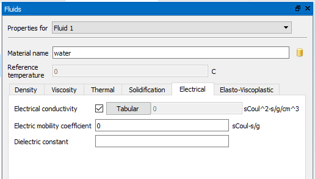
For geometry components, the related properties are defined in :
When the dielectrophoresis model is activated in the dielectric force acts in fluids with the dielectric constant greater than one. The dielectric force is also applied to all material particles (i.e., Mass, Fluid and Gas particles) in the computational domain. In this case, Dielectric constant must also be defined in . Dielectrophoresis is not compatible with the Electro-osmosis model because of the different scales at which these forces are significant. The dielectrophoresis model is automatically deactivated when Electro-osmosis is turned on. The electro-osmosis model is turned on in , in which case additional input is required and can be provided in the same Electro-mechanics window. Zeta-potential is defined for each solid component in . All dielectric constants are the ratios of the permittivity of the material to that of vacuum.
Two implicit solvers are available for the electric potential equation, GMRES and ADI. The GMRES solver is recommended.
See also
- Model Reference -> Electric Fields.
- Model Reference -> Electro-osmosis (Zeta Potential).
- Flow Science Technical Note 56 on modeling dielectric phenomena at http://users.flow3d.com/technical-notes/.
Fan and Impeller Model¶
The fan and impeller model imparts momentum to fluid in a region defined by a
special kind of “phantom” component. It is used to represent fans, propellers, and
impellers that cannot easily be resolved or rotate so quickly that the resulting time step
size is untenable. The model induces both swirl and axial velocity components in fluid that
enters a “phantom” geometry component that defines a region but does not block
area or volume. These geometry components are usually cylinders of outer
radius and thickness  , which define the region swept out by
the rotating blades. They are defined in the same way as regular components,
except that the Component Type must be set to
Fan/Impeller in . Regular transformation, including magnification, rotation and
translation, is allowed to transform the component to any location and any
orientation.
, which define the region swept out by
the rotating blades. They are defined in the same way as regular components,
except that the Component Type must be set to
Fan/Impeller in . Regular transformation, including magnification, rotation and
translation, is allowed to transform the component to any location and any
orientation.
After the geometry component is defined, the following steps should be performed in .
- Specify x, y and z coordinates for two points on the rotation axis (i.e., the central axis of the component after transformation) in the corresponding input boxes. The orientation of the axis does matter: objects rotate in right handed sense about the axis. Therefore, looking down the axis from point 1 to point 2, objects rotate clockwise for positive values of Spin rate.
- Specify the Spin rate, in radians per unit time. Its positive
direction is defined from point 1 to point 2. For a constant spin rate, simply enter
its value in the input box. If it is time-variant, click on the Tabular
button to enter the spin rate versus time directly, or Import Values from
an existing file with a
csvextension. The file must have two columns of data which represent time and spin rate from left to right. - Specify the Accommodation coefficient for rotational velocity.
- Specify the Axial velocity coefficient.
- Specify the Number of blades to add blade effects (optional).
- Specify the Blade tip thickness in the azimuthal direction (optional).
It is best to determine the values of Accommodation coefficient for rotational velocity and Axial velocity coefficient from empirical data because the performance of a fan or impeller depends on details of the blade sizes and shapes that are not part of the model. The manufacturers of these devices often characterize them by so called “performance curves,” which are plots of the pressure increase across the device versus the average flow rate passing through it. The model performance curve is a linear approximation. The figure below shows a hypothetical example of a performance curve.
Figure 1: Typical performance curve (solid) and FLOW-3D approximation (dashed).
A performance curve for the model can be derived by relating the rotating momentum source to an equivalent pressure drop across the thickness of the device and averaging the flow rate over the entire cross section. The result is:
where:
- is the pressure difference across the impeller,
- is the fluid density,
- is the Accommodation coefficient for rotational velocity,
 is the Spin rate,
is the Spin rate,- is the Axial velocity coefficient,
 is the net flow rate,
is the net flow rate,- is the outer radius of the rotating blades (as defined in component setup), and
, where
 is the minimum radius
of the rotating blades (as defined in component setup).
is the minimum radius
of the rotating blades (as defined in component setup).
This relationship gives a linear performance curve with y-intercept and x-intercept given by:
Using these relations, a given , and a known Spin rate, the
Accommodation coefficient for rotational velocity and
Axial velocity coefficient parameters can be computed to give a
linear approximation to any desired performance curve.
Flows with Density Variations¶
The fluid density in FLOW-3D may vary in a number of situations:
Density is a function of other variables, e.g., temperature, scalar concentration or solid fraction:
Select for this option. For example, in thermally buoyant flow density is a function of temperature. This model is activated when is activated, and the thermal expansion coefficient is defined for either or both fluids in . The Reference Temperature used in the density equation is defined under (see also Buoyant Flow). Similarly, in the Macro-segregation model density may be a function of alloy composition. In that case Solutal Expansion Coefficient must be defined in .
For temperature-dependent density, a linear relationship between density and temperature is defined using the Thermal Expansion coefficient. The relationship between temperature and density is , where:
- is the temperature-dependent density,
 is the fluid density at the reference temperature and specified by Density,
is the fluid density at the reference temperature and specified by Density, is the Thermal Expansion coefficient, and
is the Thermal Expansion coefficient, and- is the Reference Temperature, specified in .
Alternatively, tabular data can be specified related density to temperature; this is done by checking the box next to Density, selecting Tabular and entering the data in the window that appears.
Density is a function of the fluid fraction in incompressible two-fluid models:
In two-fluid problems the local density represents the mixture density of the two fluids and will vary according to the fraction-of-fluid function distribution. In this case, is turned on automatically by the code.
In this case, the mixture density in each computational cell is computed as a linear relationship of the two fluid densities by , where:
- is the volume fraction of fluid 1 in the computational cells,
- is the mixture density,
 is the density of fluid 1 (specified in ), and
is the density of fluid 1 (specified in ), and is the density of fluid 2 (specified in ).
is the density of fluid 2 (specified in ).
Density varies due to initial and boundary conditions:
A one-fluid density may vary spatially in an otherwise incompressible flow with or without free surfaces, as set in the initial and mesh inlet boundary conditions. Use .
This model computes a separate transport equation for the density, and in effect simulates the movement of two differing fluids (of different densities) in the domain. In this way, two fluids can be simulated along with a free surface. Furthermore, drifting of one phase relative to the other is possible using the Drift Flux model.
Density varies according to an equation of state:
Compressible fluid density is a function of pressure and temperature according to the equation of state. When the compressible flow model is used, option is automatically activated. The Second order option can be selected if sharp density gradients are expected during the simulation.
Note
- Density transport equation options cannot be used with two incompressible fluids or with fluid internal energy advection for incompressible flows.
- The initial density distribution can be set in the Initial Conditions window. The fluid density for case 3 above can be set at an inlet boundary, i.e., at a velocity or pressure boundary, in the Model Setup –> Boundaries window.
- When using the density transport equation option the density advection is computed directly from a continuity equation. See Numerical Options –> Density advection.
Buoyant Flow¶
Buoyant flow can occur due to fluid density variation because of thermal expansion, addition of mass scalars and in two-fluid mixtures. Select to enable local variations in fluid density. Since fluid density becomes a function of other quantities, additional models may need to be activated to compute these quantities. For example, model must be activated to model thermally buoyant flow.
The standard buoyant flow model only introduces a change in density as it appears in the momentum equation. There is no accompanying volume change in the fluid. If desired, the corresponding volume changes can also be included. This option is activated by selecting in .
Note
- Additional buoyancy effects due to gradients in alloy concentration are included in the macro-segregation model for binary metal alloys. In this model, convective flow occurs from the combined effect of thermal and solutal buoyancy.
- Buoyancy effects are computed automatically when the sediment scour and deposition model is activated; density of the fluid is affected by the presence of sediment, and can result in gravity flows.
Fluid sources¶
There are three main types of fluid sources in FLOW-3D : Droplet and bubble sources, Mass Sources, and Mass-Momentum Sources. Each of these different methods for adding/removing fluid from the domain are described in the sections below.
Droplet and bubble sources¶
The droplet source model provides a way to introduce droplets or bubbles into
the computational domain at a prescribed location and rate. Bubbles can be
introduced in one-fluid, free-surface simulations. Unless stated otherwise,
“droplet” can mean both a fluid droplet or a bubble. The input variables for
the droplet source model must be entered directly into the prepin.*
file using a text editor. A complete description of the variables
can be found in the Fluid Droplet/Bubble Sources section of the
Input Variable Summary chapter.
To activate the droplet source model, define the number of sources using the input variable NDROP. Up to 2000 sources can currently be defined. A droplet source can be either of fluid #1 or fluid #2, depending on the value of the variable IFDROP(n): IFDROP(n) = 1 generates fluid #1 droplets and the value of 2 generates droplets of fluid #2. For one-fluid, free-surface cases, IFDROP(n) = 2 generates bubbles, which should be used together with the adiabatic bubble model. The droplets at each source are generated at a fixed location X, Y and Z location defined by XDROP(n), YDROP(n) and ZDROP(n). The radius is defined by the variable RDROP(n). When a droplet is introduced into a region where fluid already exists, that fluid is replaced with the droplet at a uniform pressure PDROP(n), temperature TDROP(n), density RHODROP(n) and, for fluid droplets only, velocity UDROP(n), VDROP(n) and WDROP(n). The starting and ending times for the droplet generation is set by the variables SDROP(n) and EDROP(n), which by default span the whole simulation time. The droplets are emitted at a fixed rate defined by the variable TIMDROP(n) (which is time interval between consecutive droplets).
The default value of the initial droplet pressure PDROP(n) is set equal to the initial pressure PRESI, except for a bubble source which uses an initial value equal to the void pressure PVOID. The default value of the density RHODROP(n) is set to the density of fluid #1 for fluid droplet source of fluid #1, and to the density of fluid #2 for drop source of fluid #2. The variable RHODROP(n) is only used when the density transport model (first or second order) is activated. Initial velocity and density settings are not used for bubble sources.
Mass Sources¶
A mass source is associated with a geometry component. When a component is defined as a mass source, fluid enters the computational domain at a user-specified mass flow rate or volume flow rate from its open surface (surface not blocked by other components or by the boundary of the computational domain). A mass source with negative flow rate removes fluid from the computational domain and is called a sink (in the following a source represents only a mass source with positive flow rate). Both stationary and moving components can be defined as sources or sinks. The model allows for multiple sources and sinks, each characterized by a unique set of properties such as mass or volume flow rate, fluid type (fluid #1, #2 or their mixture), fluid density and temperature.
Note
- The mass/volume flow rate can vary with time. As a result, a source can change to a sink, and vice versa, during a simulation.
- In two-fluid problems, either fluid can be added/removed at a source/sink. In addition, a two-fluid mixture can be removed at a sink.
- In one-fluid problems, if void rather than fluid is added or removed at a source/sink, the added or removed void volume is converted to the corresponding pressure change in the void region adjacent to the source/sink.
- When both fluid #1 and fluid #2 (or void) are removed at a sink, the amount of each fluid removed is automatically determined in proportion to its local volume fraction adjacent to the sink. For example, if the local fluid fraction is 0.1, then 10% of fluid #1 and 90% of fluid #2 by volume are removed at the sink. If the local fluid fraction is equal to 1.0, then only fluid #1 is removed. Since the fluid fraction can change with time, so will the removal rate of each fluid.
- For simulations with heat transfer, the temperature at a sink is automatically computed as the average temperature in the cells adjacent to the sink and, therefore, need not be defined by the user.
Mass sources in different scenarios¶
The examples below describe the use of the mass sources/sink model in different simulation cases.
Case 1, one-fluid flow with constant density, free surface, and no heat transfer:
- A source can release fluid #1 (liquid) or void (gas) but not both. If fluid #1 is released, the source fluid density defaults to that of fluid #1 and cannot be changed by the user. If void is released and the mass flow rate is defined, the gas density for the void at the source/sink must be specified. If void is released and volume flow rate is defined, gas density of void at the source is not needed.
- A sink can remove fluid #1 (liquid), void or a mixture of the two. If void or a mixture of fluid #1 and void is removed while mass flow rate is defined, then the gas density for the void at the sink must be defined. In all other cases, gas density of void at the sink is not needed.
- If void is released at a source or void or its mixture with fluid #1 is removed at a sink, then a bubble model must be activated in .
Case 2, one-fluid flow with variable density (a density transport equation is solved), free surface and no heat transfer:
- A source can release either fluid #1 (liquid) or void but not both. If fluid #1 is released, the source fluid density must be defined. If void is released and mass flow rate is defined, the gas density for the void at the source must be defined. If void is released and volume flow rate is defined, gas density of void at the source is not needed.
- A sink can remove fluid #1 (liquid), void or a mixture of the two. If void or a mixture of fluid #1 and void is removed while mass flow rate is defined, then the gas density for the void at the sink must be defined. In all other cases, gas density of void at the sink is not needed.
- If void is released at a source or void or its mixture with fluid #1 is removed at a sink, then a bubble model must be activated in .
Case 3, one-fluid flow with constant or variable density (function of temperature), free surface and heat transfer:
- A source can release either fluid #1 (liquid) or void but not both. If fluid #1 is released, the source fluid density cannot be defined by the user because it is either constant (equal to the fluid density) or depends on temperature. If void is released and mass flow rate is defined, then the gas density of void at the source must be defined.
- A sink can remove fluid #1 (liquid), void or mixture of the two. If void is removed while mass flow rate is defined, then the gas density for the void at the sink must be defined. In all other cases, the gas density of void at the sink is not needed.
- If void is released at a source or void or its mixture with fluid #1 is removed at a sink, then a bubble model must be activated in .
- Temperature of the fluid must be defined at a source but is not needed at a sink.
Case 4, one-fluid flow with constant density, no free surface and no heat transfer:
- A source can only release fluid #1. The source fluid density defaults to the density of fluid #1 and cannot be changed by the user.
- A sink can only remove fluid #1. Density at the sink is that of fluid #1 and cannot be defined by the user.
Case 5, one-fluid flow with constant density, heat transfer and no free surface:
- A source can only release fluid #1. The source fluid density defaults to the density of fluid #1 and cannot be changed by the user.
- A sink can only remove fluid #1. Fluid density at the sink is that of fluid #1 and cannot be defined by the user.
- Temperature must be defined at a source but is not needed at a sink.
Case 6, one-fluid flow with variable density (a density transport equation is solved), no free surface and no heat transfer:
- A source can only release fluid #1. The density of the source fluid must be defined by the user.
- A sink can only remove fluid #1. Fluid density at the sink has its local value and cannot be defined by the user.
Case 7, one-fluid flow with variable density (function of temperature), heat transfer and no free surface:
- A source can only release fluid #1. The fluid density at the source cannot be defined because it depends on temperature.
- A sink can only remove fluid #1. Fluid density at the sink has its local value and cannot be defined by the user.
- Temperature must be defined at a source but not at a sink.
Case 8, two-fluid incompressible flow with sharp interface and no heat transfer:
- A source can release either fluid #1 or fluid #2 but not both. The fluid density at a source defaults to that of the source fluid and cannot be changed by the user.
- A sink can remove fluid #1, #2 or their mixture. Fluid density at the sink has its local value and cannot be defined by the user.
Case 9, two-fluid incompressible flow with sharp interface and heat transfer:
- A source can release either fluid #1 or fluid #2 but not both. The fluid density at a source defaults to the source fluid density and cannot be changed by the user.
- A sink can remove fluid #1, #2 or their mixture. Fluid density at a sink cannot be defined.
- Temperature must be defined at a source but not at a sink.
Case 10, two-fluid incompressible flow with no sharp interface and no heat transfer:
- A source can release either fluid #1 or fluid #2 but not both. The fluid density at a source defaults to the source fluid density and cannot be changed by the user.
- A sink can remove fluid #1, #2 or their mixture. Fluid density at the sink has its local value and cannot be defined by the user.
Case 11, two-fluid incompressible flow with heat transfer and no sharp interface:
- A source can release either fluid #1 or fluid #2 but not both. The fluid density at a source defaults to that of the source fluid and cannot be changed by the user.
- A sink can remove fluid #1, #2 or their mixture. Fluid density at the sink has its local value and cannot be defined by the user.
- Temperature must be defined at a source but not at a sink.
Case 12, two-fluid flow with sharp interface, and flow of fluid #2 is compressible:
- A source can release either fluid #1 or fluid #2 but not both. If fluid #1 is released, source fluid density defaults to that of fluid #1 and cannot be changed by the user. If fluid #2 is released, source fluid density must be defined.
- A sink can remove fluid #1, #2 or their mixture. Fluid density at the sink has its local value and cannot be defined by the user.
- Temperature must be defined at a source but not at a sink.
Setup procedure¶
Activate Mass Source¶
To define a mass source/sink, go to . In the window , go to . check the Mass Source checkbox. The component properties for mass source definition are shown in the figure below.
Define Source Properties¶
Users can specify fluid type (fluid #1, #2 or their mixture), pressure type, density and temperature at a source and fluid type and density at a sink, depending on definition of the problem.
The pressure types include Stagnation pressure and Static pressure and only applies to sources (i.e., when the mass flow rate is positive). At a stagnation pressure source (default), fluid is assumed to enter at zero velocity. As a result, pressure must build up at the source to move the fluid away from the source. Such sources are designed to model fluid emerging at the end of a rocket or a deflating balloon.
At a static pressure source, the fluid velocity is computed from the mass flow rate and the surface area of the source. In this case, no extra pressure is required to propel the fluid away from the source. An example of such source is fluid emerging from a long straight pipe.
Typically, the distinction between those two types of mass sources is only important for sources associated with coupled-motion GMO components because it affects the fluid pressure at the source hence the hydraulic force acting on the moving object.
Define Flow Rate¶
In the dropdown boxes under Flow rate, one can choose to define Mass flow rate or Volume flow rate for the source/sink. Both flow rates can be selected as either total flow rate or flow rate per unit area of the source component.
The total flow rate is distributed uniformly over the open surface of the source component. When flow rate per unit area is selected, the total flow rate is the specified flow rate per unit area times the open surface area of the source component. If the open surface area changes in time, so will the total mass flow rate. For example, the calculated surface area of a moving object depends on mesh size and mesh distribution and is updated at each time step, thus it can change with time, resulting in a time-variation of the total flow rate.
If total flow rate is specified with a moving object, the fluxes along the open surface are adjusted at every time step to maintain the defined total mass flow rate.
If flow rate is a constant, then simply enter it in the corresponding edit box
under Total flow rate or Per unit area flow rate.
Otherwise click on Tabular to pop up a data table and enter a
series of data for time versus flow rate. Flow rate is positive for a source
and negative for a sink and can change sign with time. Alternatively, users
can also define flow rate versus time by importing an existing data file using
the Import Values button. The file must have two columns of data
which represent time and flow rate from left to right, respectively. A
csv extension is required for the file. As with other time-dependent
inputs in FLOW-3D , data is interpolated in a piecewise linear fashion between
time points.
The flow rate can be changed during the simulation by active simulation control. See also Active Simulation Control for more information.
Define Scalars at Source¶
Scalars have to be first activated in Scalars under Physics tab. Scalar quantities in the fluid at a mass source can be defined as scalar concentrations at the source, which is mass of the scalar per unit volume of the fluid entering the computational domain. The mass flow rate of a scalar entering the domain is equal to the specified scalar concentration times volume flow rate of the source fluid at the source. In , enter the scalar concentration.
Mass-Momentum Sources¶
The mass-momentum source model allows the user to introduce fluid at any location and orientation into the computational domain at a specified (time-dependent) flow rate and velocity without having to model the geometry of the actual source. A mass-momentum source is represented by an array of particles of a special type in a planar surface. Users only need to define the location, shape and orientation of the source surface, and the solver will generate these particles automatically at the specified location in a pattern that follows the user-specified shape and orientation. In addition, mass-momentum sources can move at a user-defined velocity. They are intended to represent objects like nozzles, ventilation air ducts, pipes, etc. This approach is particularly useful when source dimensions are small compared to the size of the computational domain.
A mass-momentum source can release fluid (when flow rate is positive) or remove fluid (when flow rate is negative). In the following we will call a mass-momentum source that releases fluid a source and one that removes fluid a sink. Multiple sources and sinks are allowed to exist in one simulation, each characterized by a unique set of properties such as mass or volume flow rate, fluid type (fluid #1, #2 or their mixture), fluid density and temperature.
The placement and configuration of mass-momentum sources is discussed in detail in the Mass-momentum sources section in the Model Setup chapter.
See also
Mass-momentum sources section in the Model Setup chapter
Fluid-Structure Interaction (FSI)¶
The fluid-structure interaction (FSI) model is an integrated solid mechanics modeling capability in FLOW-3D . This model makes use of the finite element method (FEM) to simulate and analyze the stresses within solid components and the resulting deformations. Stresses develop in the solid due to the forces exerted by the surrounding fluid, thermal gradients within the solid, and/or constraints imposed by walls and other components.
Note
- Only solid components can be FSI deformable objects.
- Porous components cannot be FSI deformable objects.
Model Setup¶
Properties¶
From the Component Properties list, select FSI Deformable Properties to open up the FSI properties. Checking the box next to FSI Deformable Component in Component Properties activates the model for that component. Do not confuse this with the Simple Deforming Object selection, which models membrane and simple wall deformation. The minimum requirements of the material properties for this model are: Solid Density and at least two elastic properties out of the Bulk Modulus, Shear Modulus, Elastic (Young’s) Modulus, and Poisson Ratio. Unless these minimum requirements are met, the preprocessor will terminate the simulation. Note that temperature-dependent tabular data can be specified for any or all material properties. If more than 2 of the aforementioned properties are specified, priority is given in order from top to bottom of the list in the GUI.
If the Heat Transfer model (with full conduction in components) is
turned on and thermal gradients exist with the solid, the model computes
thermal stresses that can develop due to density variation within the
material; either the Thermal Expansion Coefficient or
Tabular data for Solid Density must be provided to
compute thermal stresses. Also, if the solid properties are temperature
dependent and if this information is available, the properties can be defined
with temperature dependent tables. Click on the Tabular button to
enter the temperature dependent properties directly, or Import
Values from an existing comma separated value (csv) file. The values
can also be read directly from an external file without being copied to the
prepin.* file (see
Temperature Dependent Properties). These properties can also be loaded
into components from the Solids Database under the
Materials menu.
The Yield Stress input allows entry of a Yield-stress limiting value (in units of stress). Setting this value for the component activates the Plastic deformation model for that component, which predicts non-elastic deformation locally where the local von Mises stress exceeds the specified value.
The Fluid/Solid Coupling drop-down menu controls the coupling between the current FSI component and the surrounding fluid: Partial coupling means that the solid “sees” the surrounding fluid, but the deformation of the solid does not affect the fluid flow. This is the default, and the appropriate choice for when the solid deformations are expected to be small. For simulations where the deformations are expected to be large and/or rapid, or the acoustic vibrations of the solid are important to the simulation, the Full coupling option will compute the fluid motion generated by the deformation of the solid. This option will extend computation times, and is not recommended unless actually needed.
The sub-branch entitled FSI Coupling between… : controls the coupling between the current FSI component and neighboring FSI components. There is a drop-down menu for each neighboring FSI component, and the default selection is No coupling, which assumes a fixed boundary between the components (i.e., no displacements are permitted). Alternate selections are Complete coupling and Partial coupling. Selecting Complete coupling causes the model to assume that the two components are completely fused together, with no sliding or separation possible. Selecting Partial coupling allows the components to separate and slide past one another, but they cannot interfere. The sliding friction is controlled by specifying a value for the Friction coefficient below each drop-down menu. By default, sliding friction is not limited (i.e., sliding cannot occur so long as the components are in contact); setting this to 0.0 or greater allows for sliding. Physical values are typically less than 1.0.
After the elastic properties are provided, it is time to generate a finite element (FE) mesh for the solid. The preprocessor makes use of a rectangular Cartesian mesh around the solid component to generate the Finite Element (FE) mesh, which is used to solve the equation of motion throughout the solid component. The Cartesian mesh can be the fluid mesh (default), or it can be an independent Local Input Mesh whose purpose is only to generate the FE mesh for the solid component.
FSI meshing¶
When a deformable object is present in the domain, its deformations are captured using a finite element (FE) mesh. More than one FE meshes may be required depending on the number of deformable components and their interactions.
To generate a FE mesh, navigate to the Mesh widget in Model Setup
using the appropriate button ( ). In the Mesh widget, the
deformable component will be present as one of the meshing options under
Select meshing mode.
). In the Mesh widget, the
deformable component will be present as one of the meshing options under
Select meshing mode.
By default, the Finite element mesh usage will be set to Automatic. This implies that the FE mesh is going to be based on the current resolution of the Flow Mesh. When using this option, the mesh need not be generated at this point; it will automatically be generated during the preprocessing step.
When set to automatic, the only available option is to determine the selection of either Hexahedron or Tetrahedron mesh elements. Hexahedron meshes, the default, are based on six-sided elements, with merging of some vertices in the vicinity of the component boundaries to allow for smooth interfaces. Tetrahedron meshes are composed of 4-sided elements and do not require merging of any vertices. Tetrahedral meshes are simpler, use linear basis functions, and can result in lower runtimes. However, due to the linear basis functions, the results may be somewhat less smooth.
The FE mesh can be generated and displayed using the Preview/Display FE mesh button. When using the Automatic option, the FE mesh file for this component will be overwritten every time the simulation is run.
If if a different mesh resolution is desired, select the Specify the FE mesh radio button. In this case, the mesh needs to be generated in advance. If a FE mesh is not already present, it can be generated using the options avaialble in the Finite element mesh generation box. The first step is to determine the source of FE mesh generation through the Initialize structured input mesh with.. button. The available options are From flow mesh, which copies the current mesh parameters as defined in the Flow Mesh section, Custom, which requires a new rectangular mesh to be defined, and Import from FE mesh, which imports the mesh generation information from a previously generated FE mesh file. In all cases, the meshing controls are the same as those to the ones available in Flow Mesh. Once the required extents and resolution are specified the FE mesh can be generated and displayed using the Preview/Display FE mesh button. In this case, it will also be automatically selected in the input field under the Specify the FE mesh radio button.
Optionally, a Filename can be given fior the generated FE mesh.
If no filename is specified, the filename for the mesh file of this component
defaults to comp#.project.FEmesh, where project is the project
name.
Cylindrical coordinate flow mesh can also be used to generate the FE mesh, either axisymmetric or fully three-dimensional. The only limitation is that for 3-D meshes, the FE mesh cannot contact the centerline of the mesh; this will result in a singularity point for the FE mesh.
Note
- The Local input mesh information is saved in the
FE Mesh Filethat is generated in the next step, but not in theprepin.*file. - If Generate FE mesh is selected, the Local input mesh information is NOT used, and the mesh you created will be overwritten by a finite element mesh created by the default fluid mesh.
- Conforming mesh blocks are ignored while generating FE meshes during preprocessing. In FE mesh generation mode, conforming mesh blocks are temporarily converted to non-conforming and FE mesh is generated.
- If only conforming mesh blocks are used for a simulation then it is recommended to generate the FE mesh without conforming mesh blocks in FE mesh generation mode and load the generated mesh for the simulation step.
Simulation¶
The solver used for the solution of the stresses within the solid component is similar to the Generalized Minimum Residual (GMRES) pressure solver. This is the only solver available, and the user can adjust the GMRES subspace size (sometimes called the in the literature the restart number, and is called MRSTRTFSI in the input file), the Maximum number of iterations and the Convergence tolerance. Changes to these parameters are made from the FSI/TSE solver options section of the Numerics tab:
The default value of the GMRES subspace size is 20. Increasing this value will allow the solver to achieve convergence with fewer iterations; however, the CPU time per iteration will increase and the memory usage will rise with the subspace size. In some simulations where convergence is not being reached (i.e., the maximum number of iterations are being done and the FEA convergence ratio is greater than 1), increasing this value can drastically reduce the overall CPU time.
Additionally, if the option Dynamically selected subspace size is selected, the solver will automatically adjust the subspace size to optimize solution efficiency. In this case, the entered (or default) value of the GMRES subspace size becomes the maximum subspace size. Therefore, setting it to a largest value possible with this option is a good idea (up to the memory available on the computer), since it allows for greater solver flexibility. In cases where convergence is easily achieved, the subspace size will automatically be reduced to maintain optimum solver efficiency.
The Maximum number of iterations limits the number of iterations used by the solver; the default value is 25 which should be more than enough for most simulations. If the FSI iteration count in the solver is repeatedly reaching the limit (as seen in the Simulation messages), this limit or the subspace size can be increased. It is recommended (up to the limit of available memory) to try increasing the subspace size first.
The option Additional memory (in GB) for storing FSI data
structures specifies the amount of additional memory that may be used for
storing data structures that can significantly speedup the FSI solver. In the
prepin file, this parameter may be specified by setting the variable,
FSI_MEMORY in the XPUT namelist. The FSI solver solves a
system of linear equations (represented by a sparse matrix) for the x, y and z
displacements at all FE mesh nodes. The FSI matrix elements corresponding to
each node can either by computed dynamically for every iteration loop of the
FSI solver or computed and stored once for each cycle and re-used within the
iteration loops in the solver. While storing all the FSI matrix elements can
result in up to 7 times speedup (more often around 3-4 times speedup) of the
FSI solver, it comes with a memory penalty. Matrix storage for 1 million FE
mesh nodes requires an additional 7 GB of RAM memory. While small FE meshes
benefit from this approach with only a small memory penalty, large FSI problems
involving several million FE mesh nodes would require prohibitively high
additional memory to store the complete FSI matrix. To resolve this problem,
FSI matrix elements are stored only up to a specified memory limit (defaulting
to 7 GB). Storage for FE mesh nodes that cannot be accommodated within this
memory limit, are dynamically computed within the FSI solver iteration loops.
This retains the performance advantages of storing the FSI matrix without
increasing the memory penalty to prohibitive levels. The amount of additional
memory required for storing a given number of FE mesh nodes can be estimated by
multiplying the number of nodes (in millions) by 7 GB. If the user has enough
RAM memory on his computer to store the entire FSI matrix, he can increase the
default memory limit and improve the computational performance. The additional
memory requirements for tetrahedral meshes are twice that of hexahedral meshes
and the performance gains are typically not as high as for hexahedral meshes.
The Convergence tolerance specifies the maximum residual permitted in the solution of the solid dynamics equations. This value is dimensionless independent of the mesh size and time step. The value represents a relative error in the computed strain. The default value is 10-3, which should work well for most simulations. However, if the goal of the simulation is to get a final-time stress result, rather than accurate time-dependent results, raising this value will not greatly harm the accuracy of the end result. For simulations where the displacements and stresses are needed to be highly accurate during the course of the simulation, lowering this value can help. Note that convergence generally becomes increasingly slow for values of the convergence tolerance smaller than 10-8 for reasons of machine precision round-off.
The option Preconditioning of FSI GMRES (on by default) uses a preconditioning algorithm prior to running the GMRES algorithm, with the goal of reducing the number of GMRES iterations. The preconditioning algorithm is only used when:
- The option Preconditioning of FSI GMRES is activated, and
- The average number of iterations needed to solve the solid dynamics equations during the previous 10 computational cycles exceeded 4.
The FSI model solves the equations of solid dynamics incrementally, so theoretically, large deformations can be predicted with reasonable accuracy. Although fluid motion due to displacements at the solid-fluid interface is predicted by the model, FLOW-3D volume and area fractions (FAVORTM fractions) are not updated, so the geometry changes of the solid components are not seen by the fluid. Therefore, in simulations, where significant deformations are modeled, the solid dynamics are accurately represented, its effects on the fluid are not.
Components must be in contact somewhere with fluid mesh boundaries or other components during a simulation so that they are constrained. If not constrained, the solid dynamics equations will predict rigid-body motion for the components, and this motion will not be represented in the fluid. For example, an unconstrained sphere placed in the simulation with gravity present will be predicted to exhibit free-fall out of the computational domain.
Post-processing¶
The finite-element results produced by the model are viewed in a separate display from the fluid regions. To access the FSI data, from the Analyze tab, select the FSI TSE sub-tab:
From this tab, select which of the components to view:

Also selectable are the time limits, and the data source. Note that to view Selected data, Fluid structure interaction must have been chosen from the Selected data list in during setup of the simulation. Click Render and the Display tab appears, and from here various data variables can be plotted for the FSI component. Other controls to zoom, rotate, etc., are the same as the 3-D display.
The default display is the Normal displacement. This shows the surface displacement in the direction of the outward-pointing normal over the entire surface of the component, relative to its original conformation. Negative values indicate that the surface is pulled in and positive values indicate that the surface is pushed out relative to its original position. Individual displacements throughout the component in the x, y and z directions can also be displayed by selecting X displacement, Y displacement, or Z displacement, respectively.
There are 6 components of elastic stress and 6 components of strain available for plotting. These are the 6 independent components that comprise the symmetric elastic stress and strain tensors. These components are difficult to conceive for most three-dimensional simulations, as even simple 1-D tension, diagonal to the coordinates, will produce non-zero values in many of the stress components. That is why the mean iso stress (mean isotropic stress) and the Von Mises stress are provided. These are stress invariants, and as such, are independent of the coordinate system chosen. The mean iso stress is the isotropic stress – the amount of purely compressive (negative values) or tensile (positive values) stress in the solid, which could indicate areas most prone to buckling or cracking. In contrast, the Von Mises stress is a measure of shearing stresses; its value is always positive. Regions with high shear stress are more prone to tearing. Therefore, a solid under pure compressive or tensile stresses can have a negligible Von Mises stress; conversely, a solid under pure shear can have negligible tensile or compressive stress.
If a value was specified for the Yield Stress, then data will also be available for the plastic deformation of the solid. This data includes the independent components of the plastic strain tensor (all non-dimensional), and the plastic strain magnitude (the second invariant of the plastic strain tensor). These values indicate the locations within the component where the greatest amount of plastic strain occurred.
Temperature is available for plotting as a convenience. This temperature is the same as the wall temperature available from the fluid 3-D display. The volume expansion indicates regions of the component that have expanded (positive values) or shrunk (negative values) during the course of the simulation. Such expansion or contraction could be caused by temperature changes, or by tensile or compressive stresses.
Export/Import FSI Meshes¶
FSI mesh and data can be imported or exported to EXODUS II file format, which is a random access, machine independent, binary file format. EXODUS II is a widely used model developed to store and retrieve data for finite element analyses. The ability to export FSI mesh and data files in EXODUS II file format enhances portability and makes it possible to view FSI results outside the FLOW-3D GUI. ParaView is a free, multi-platform data analysis and visualization application that can be used to view EXODUS II files. To generate EXODUS II output files, select . In the Advanced tab, select the required option in the FSI/TSE EXODUS output format drop-down menu.
The FSI mesh file stores only the FE mesh information (elements, nodes, etc.)
while the FSI data file includes FE mesh information and as well node
properties such as stress, strain, etc. at each FE mesh node. Table
FSI data variables provides a description of all FSI data
variables. The FSI mesh file has the extension .EXFEmesh.exo and is
written out only once, immediately after the pre-processing stage. The FSI data
file has the extension .EXFEdata.exo and is written out at the same
frequency as the restart data. The EXODUS II data file is a single
file (one for each FSI component) that contains FSI data at all restart output
times. In the prepin.* file, the variable IEXODUSOUT (in namelist
XPUT) can be used to write out FSI mesh and data files in
EXODUS II format (see File Control Options for details of
usage).
| FE MESH VARIABLE | DESCRIPTION |
|---|---|
stressxx |
xx-component of Elastic stress tensor |
stressxy |
xy-component of Elastic stress tensor |
stressxz |
xz-component of Elastic stress tensor |
stressyy |
yy-component of Elastic stress tensor |
stressyz |
yz-component of Elastic stress tensor |
stresszz |
zz-component of Elastic stress tensor |
DISPLX |
x-component of local displacement vector |
DISPLY |
y-component of local displacement vector |
DISPLZ |
z-component of local displacement vector |
strainxx |
xx-component of symmetric strain tensor |
strainxy |
xy-component of symmetric strain tensor |
strainxz |
xz-component of symmetric strain tensor |
strainyy |
yy-component of symmetric strain tensor |
strainyz |
yz-component of symmetric strain tensor |
strainzz |
zz-component of symmetric strain tensor |
rel volume expansion |
Relative volume expansion. The first invariant (trace) of strain tensor |
mean iso stress |
Mean isotropic elastic stress. Represents a measure of purely compressive (if negative) or tensile stresses (if negative). Equal to one-third of the trace of the elastic stress tensor. |
VM stress |
Von Mises stress. Represents a measure of shearing stresses; its value is always positive. Regions with high shear stress are more prone to tearing. This is the square root of the second invariant of the elastic stress tensor. |
Temperature |
Local solid temperature |
norm displ |
Normal displacement of the solid component boundary. Non-zero only at component interfaces. |
Active node? |
The activity state of the local node. For the FSI model, all nodes are always active. |
pstrainxx |
xx-component of plastic strain tensor. Valid only when yielding is specified. |
pstrainxy |
xy-component of plastic strain tensor. Valid only when yielding is specified. |
pstrainxz |
xz-component of plastic strain tensor. Valid only when yielding is specified. |
pstrainyy |
yy-component of plastic strain tensor. Valid only when yielding is specified. |
pstrainyz |
yz-component of plastic strain tensor. Valid only when yielding is specified. |
pstrainzz |
zz-component of plastic strain tensor. Valid only when yielding is specified. |
pstrainmag |
xx-component of plastic strain tensor. Valid only when yielding is specified. This is the square root of the second invariant of the plastic strain tensor. |
nn:T |
Normal component of traction on the component interface. This is a measure of the force (due to surrounding fluid, neighboring components) on the component. Non-zero only on component interfaces. |
It is also possible to import EXODUS II meshes into FLOW-3D . Using this feature, EXODUS II meshes generated by third party finite element mesh generation software (or FLOW-3D ) can be used to specify the FE mesh instead of the default FLOW-3D FE mesh format. In the FSI Deformable Properties branch of Component, select Use EXODUS FE mesh from the FE mesh file usage drop-down menu. Special care must be taken when importing EXODUS II meshes generated by third party software. See Notes below.
Note
- All element blocks in the imported EXODUS II mesh must have the same element type (i.e., tetrahedral or hexahedral, but not mixed).
- The imported finite element mesh and the FLOW-3D component must coincide with each other. Importing an EXODUS II mesh does not imply generation of an equivalent component in FLOW-3D . Rather, these are two separate steps and the user must ensure that the two match in space.
Free Surface vs. Confined Flows¶
Confined Flow¶
Confined homogeneous fluid can be simulated by employing the one-fluid flow model with the interface tracking algorithm turned off. Select and . In this case, all open space in the mesh is filled by fluid #1 at all times. Pressure, velocity, and temperature and other fluid quantities can be initialized in the Initial tab.
Note
- For confined one-fluid compressible flow the two-fluid model has to be used and then only fluid #2 should be defined in the initial and boundary conditions by setting Fluid fraction to 0.0 everywhere.
See also
Free Surface Flow¶
Flows with free surfaces are simulated using the one-fluid, sharp interface models. Select and Free surface or sharp interface.
The properties of the fluid are defined in Fluids with the properties of fluid #1. All open space in the mesh is assumed to be initially empty, unless otherwise specified by the user, e.g., by setting fluid Elevation or Volume in Initial.
Each void region is described with unique volume, pressure and temperature that can vary with time. The default void region Pressure and Temperature are initialized in Initial > Void initial state and stay constant during the calculation, unless one of the bubble models is used (see Adiabatic Bubbles).
Note
Mesh boundary conditions for fluid fraction in Boundaries at velocity and pressure boundaries default to 1.0, allowing fluid to enter the mesh domain if other conditions permit. Fluid fraction at fixed-pressure mesh boundaries should be set to 0.0 to model ambient gas with no fluid entering the domain.
Granular Flow¶
Granular flow is a mixture of solid particles and a fluid that can be either gas or liquid, e.g., sand and air or sand and water. This mixture of granular solid and fluid is treated as an incompressible fluid that may be bounded by free surfaces. Density variations in the mixture fluid can exist initially and may arise during a flow because of a relative velocity of the solid and fluid that is computed using the Drift-Flux model. Gas escape from a free surface may occur as solid compacts forcing the gas out from between the grains. In the case of a liquid, regions of pure liquid can form as solid material compacts.
To activate this model select and or . A granular flow window appears in which the diameter and microscopic density of the grains, and the density and viscosity of the fluid must be defined.
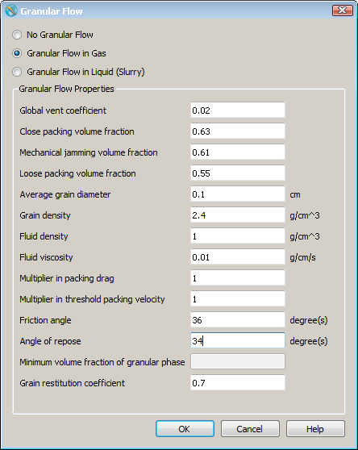
If necessary, Close packing volume fraction, Mechanical jamming volume fraction and Loose packing volume fraction, which all relate to the flow characteristics of the solid material, can be changed from their default values of 0.63, 0.61 and 0,55, respectively. Also, Angle of repose for granular medium can be changed if the default value of 34° is not suitable for the solid material to be modeled.
Another auxiliary input quantity is Friction angle , which is typically 2 to 8 degrees larger than the angle of retention. The friction angle is important in the case of a fluid being liquid, where it influences the dispersive pressure arising in shearing flow from the collision between solid particles.
When the granular flow option is selected this automatically activates several other models in the program that are used in the model. Also, it should be remarked that it is unnecessary to define a mixture viscosity because this is automatically computed as part of the model. In fact, it is not necessary to define any of the fluid properties in the Fluids widget.
Note
If a granular material is to enter a computational region through a mesh boundary, it is necessary to define the Density of the solid/fluid mixture in the boundary condition window. To avoid flow blockage, the entered density should represent a solid fraction less than that for close packing. For example, if the Fluid density is and the Grain density and Close packing volume fraction (given in ) are and 0.63, respectively, then the Density values entered in the boundary conditions window should be between 1000, i.e., Fluid density, and 1340.2, i.e., close packing density, 1540*0.63+1000*0.37.
Two auxiliary input variables are available. One is the Multiplier in threshold packing velocity and the other is the Multiplier in packing drag. The Multiplier in threshold packing velocity is the speed above which flow will set into motion packed solid material. The Multiplier in packing drag is used to bring a flow to zero when the grains pack to a sufficiently high density. Both of these variables should be left at their default values unless the user knows that the granular material has cohesive or other forces that could change these quantities.
Granular flow application example: Core Blowing¶
The core blowing process involves the high speed filling of a core mold with air/sand mixture. FLOW-3D models core blowing as a two-phase continuum, not as individual particles of sand. The two-phase effects (air/sand coupling) are modeled using the Drift Flux model. The sand/air mixture is modeled as a single fluid with sharp interfaces with pure air. The pure air is represented with adiabatic bubbles. Vents are defined as valves. For more information about how these models are implemented, refer to Flow Science Technical Note 88 at http://users.flow3d.com/technical-notes/.
The steps for creating a core blowing simulation are:
Import or create the relevant geometry from STL files or create geometry using FLOW-3D primitives on the Model Setup –> Geometry tab.
Activate the following physics and define parameters in the tab:
Use the Gravity and non-inertial reference frame model to define gravity in the correct direction.
Activate Viscosity and Laminar flow from the Viscosity and Turbulence dialog:
Activate the Granular Flow model.
The Granular Flow in Gas selection sets the Granular Flow model to assume that the sand particles are much more dense than the surrounding media.
A Global vent controls the overall venting of air through the sand. The Global vent coefficient is a multiplier that accounts for an average flow losses through sand plus reduction in area vents due to blockage of the sand. It also takes an average of all the valve external pressures and the sum of all the valve coefficients. An estimate can be calculated by the following equation: where is the Global vent coefficient, is maximum possible solid volume fraction,
is the average distance between the air pocket and the vents, and
is the Average grain diameter.The Mechanical jamming volume fraction is the volume fraction of sand above which the flow experiences resistance due to grain-grain interaction. A good value to use is 0.61.
Close packing volume fraction describes the sand volume fraction at which flow becomes frozen. When the volume fraction exceeds 0.995(Close packing volume fraction) the velocity of that element is set to zero. This is typically 0.63 when the sand grains are spheres.
The random Loose packing volume fraction occurs when the grains are touching just enough to support their weight under gravity provided there is no disturbance that drives them into a close packed arrangement. This is typically 0.55 when the grains are spheres.
The Average grain diameter and Grain density need to be defined and can be found from the manufacturer. Gas density and Gas viscosity also must be defined. Typical values for air in CGS units are 0.001225 g/cm3 and 0.00017 poise, respectively.
The Multiplier in packing drag, Multiplier in threshold packing velocity, and the Angle of repose are not needed for modeling core blowing.
The grain restitution coefficient is used to estimate the amount of energy that is retained by a sand grain after a collision with a solid surface.
Activate the Density Evaluation model. Once Granular Flow is activated, First order approximation to density transport equation is automatically enabled. This is needed to compute the transport of sand. For greater spatial accuracy, the Second order monotonicity-preserving approximation to density transport equation can be selected. This can be useful for simulations where steep gradients in sand concentration are expected.
Activate the Bubble and Phase Change model to allow gas to escape. This is a prerequisite for using vents and valves.
Initial and boundary conditions can be added in the Model Setup tab. Initial conditions of the void region or bubble region have already been defined when the Adiabatic bubble model was activated from the Bubble and phase change model. The boundary conditions are defined in the . Sand is carried through the core box by air pressure so a pressure boundary condition and an air/sand mixture density need to be applied at the boundary. Select the appropriate boundary box with an S (stands for symmetry boundary) and a boundary dialog box will appear. Select radio button, define the inlet Pressure, Fluid fraction of 1.0, and the Density.
Add valves if there are only a few vents or use geometry defined as if there are too many vents to add as valves. Valve flow losses are derived from Bernoulli’s obstruction theory. Details on creating valves can be found in Valves. To add vents as geometry components, create a separate component in the Geometry list, and select from the drop down. When modeled this way, vents do not occupy volume. If the vents are the same size then they can be modeled with one STL or modeled using primitives in the same component. If they are different sizes, then they need to be modeled separately. Once the type has been set, the properties must be defined. Define the Vent Flow Area, Diameter of Vent Channel, Vent External Pressure and other vent properties in . Refer to Flow Vent for more information about flow vent and its properties.
Gravity¶
Gravity vector components in a Cartesian coordinate system can be simply set in . The direction of the gravity vector is constant during a simulation.
For constant gravity in Cartesian coordinates, ensure that Activate Gravity is selected and enter the appropriate values for the gravity vector components in the X component, Y component and Z component boxes.
If a cylindrical coordinate system is used, then the Z component of gravity can still be used for a constant gravity vector completely aligned with the z-axis. However, non-zero values of X component and Y component are aligned with radial and azimuthal coordinate directions at every point in the mesh, making little physical sense. For a gravity vector not aligned with the z-axis in a cylindrical coordinate system, select Activate non-inertial reference frame in , and provide the appropriate values for the gravity vector under Initial gravity. Ensure that the standard gravity components are set to zero; otherwise, gravity will be doubled.
See also
- Non-Inertial Reference Frame notation
- Rigid Body Dynamics Algorithm for Non-Inertial Reference Frame Model
- Non-Inertial Reference Frame Motion equations
- Rigid Body Dynamics for Non-Inertial Reference Frame
- Gravity
- Impulsive Motion of Non-inertial Reference Frame
- Non-Inertial Reference Frame Motion
- Smooth Tabular Motion
Heat Transfer¶
Transport of Heat in Fluid¶
Energy transport options are accessed via :
Fluid internal energy advection must be activated before any other heat transfer option can be used. There are two advection options available. The First-order option is efficient and robust and is suitable for most heat transfer problems, but can lead to artificial (numerical) diffusion of heat for simulations where high thermal gradients are expected. The Second-order monotonicity-preserving option is appropriate in situations where resolving temperature gradients is of primary importance, for example, in buoyancy-driven flows. The default setting is No heat transfer model, which is used for isothermal simulations. For fluid/component heat transfer see Heat Transfer and Conduction in Components.
Whenever a Heat transfer option is used, at the very minimum the Specific Heat and Thermal Conductivity must be provided for the fluid:
Note
No energy transport is allowed in one-fluid problems with activated.
See also
Energy advection and Heat Transfer and Conduction in Components.
Heat Sources¶
Heat sources in fluid¶
Uniform heat sources in both fluid #1 and #2 can be set in . When defined, each of those variables represents a constant heat source uniformly distributed in the fluid. The units are energy per unit mass of the corresponding fluid.
Components can be used as power sources for a particular region of fluid rather than the entire domain. If defined as 100% porous they determine a space to apply thermal energy and don’t occupy the space as a solid. To do so, use porous components with Porosity set to 1.0, , and or . In that case fluid and heat flows are not obstructed by the component, but energy is deposited evenly into the fluid at every point of the porous component location.
Heat sources in components¶
Time-dependent and localized heat sources can be associated with components. The component energy source can either be specified as a Total amount (power), or a Specific amount (power/unit area or power/unit volume), chosen by the drop-down menu next to Heat source type in . Power at a heat source can be positive or negative.
The energy source can be either deposited evenly inside the component or distributed as a flux over its surface. The choice is governed by the selection in the drop-down menu next to Heat source type. If or is selected, then the source energy is deposited inside the component leading to a change in its temperature. In that case, the component must be of type or , found in the drop-down menu next to Heat Transfer Mode.
If or is selected instead, then the energy is distributed evenly along the component’s open surface, and is deposited directly into the fluid that is in contact with the component. In that case, no thermal solution is computed within the component itself.
General moving object (GMO) components can participate in heat transfer just like any stationary solid component. When defining specific heat of a GMO component, the Density*Specific heat product should be used and not the total heat capacity (only available in the input file) because the volume of a GMO component may change as it moves through the grid, and even move in and out of it.
When the Total amount Heat source type option is used, the heat fluxes along the open surface of the moving object are adjusted at every time step to maintain a constant total power. If the surface area varies significantly with time, so will the heat fluxes. When the Specific amount option is used, the fluxes will be constant (equal to value defined in Specific amount), but the total power may vary.
Heat sources can also be defined at mesh boundaries of type Wall, similar to component heat sources. These are defined in and within each boundary side dialog box from the Thermal information button under Power.
Note
- Uniform heat sources require that is activated. Also, they are ignored when the option is activated.
- Heat sources from components require an option in be activated.
- Since the Total amount of power denotes the total power source of a component, care must be taken when using heat sources in 2-D simulations. For example, in an axisymmetric problem with the y-direction grid covering 30 degrees, the Total amount must be reduced by a factor of 1/12 to account for the fact that only that fraction of the total component volume (covering 360 degrees) is included in the grid. Similarly, in 2-D Cartesian meshes, the Total amount must take into account the width of the domain used in the dimension into the plane of solution.
Heat Transfer across Baffles¶
Baffles can have thermal resistance for fluid-to-fluid and fluid-to-void heat exchange, although baffles themselves do not posses any heat capacity. The default setting is no heat transfer through baffles.
Cross-baffle heat transfer is enabled when is activated. The heat transfer coefficients are defined in for each baffle (image above). For example, if a baffle has Fluid 1 on one side and Fluid 2 on the other side, then the resulting cross-baffle heat transfer coefficient between fluid #1 and #2 is:
where and are the Heat transfer Coefficient to Fluid 1 and Heat transfer Coefficient to Fluid 2, respectively.
Similarly, cross-baffle heat transfer coefficients between Fluid 1 and voids of heat transfer type n (see Heat Transfer to Voids) can also be defined in .
Heat Transfer and Conduction in Components¶
To enable heat transfer between fluid and components of all types activate one of the options in :
Component heat transfer modes¶
Different heat transfer modes can be selected for each component in Heat Transfer Mode under each component’s branch in the Geometry widget:
If or is selected, no conduction equation is solved within the component. The component is treated as a lumped temperature body for the former selection, and as having a time-prescribed uniform temperature for the latter selection. The time-prescribed temperature of the component is specified in :
Time-dependent values can be specified by entering data into a table by clicking on Tabular.
If the option is activated, the temperature in the component is allowed to vary in space, but still no conduction equation is solved within the solids. Therefore, the temperatures remains constant in time, irrespective of the thermal properties of the component. However, the thermal properties of the component are used when computing the heat flux so they are required. The spatial variation of the solid temperature can be defined either in or from restart data (for restart simulations only – see Restart).
When is selected (default), the thermal conduction within the component is included in the simulation. In this case, both Thermal Conductivity and Density*Specific Heat must be specified in the components’ Solid Properties.
When the conduction within the component is computed and the Maximum Thermal Penetration Depth is specified, only the portion of the component volume within that depth along the component surface, the thermally active layer, is computed, typically resulting in a more efficient calculation. For example, during high pressure die casting, where the typical filling time is 100ms, heat penetrates only a few millimeters into the die. Therefore, ignoring the part of the die beyond that depth provides significant memory and CPU savings.
A practical value for the thickness of the thermally active layer in casting problems depends on the properties of the mold material, component/fluid heat transfer coefficient and on the simulation time. The figure below shows the thermal penetration depth for H13 steel die and a silica sand mold as a function of time. The values are estimated from the exact one-dimensional heat penetration solution into a semi-infinite medium. The temperature cutoff used to calculate the depth is 1% of the difference in metal/mold initial temperatures. In other words, beyond the thermally active layer, the component temperature varies by less than 1% of the initial temperature difference. The actual value selected should take into account the shape of the interface.
To view the thermally active layer, select , and then open the prpgrf.project file in
the Analyze tab and plot the iso-surface of Thermally
active component volume.
Heat transfer coefficients¶
Heat transfer coefficients between components and fluids and voids are defined in .
If a value is specified for the Heat transfer coefficients to –> Fluid 1 or Heat transfer coefficients to –> Fluid 2 then that heat transfer coefficient defines the thermal resistance of the interface defined in terms of a heat transfer coefficient. In this context the heat transfer coefficient should be a large number if it is in perfect contact with the component. If the fluid does not perfectly wet the surface (as might happen due to the presence of oxide layers, trapped bubbles, or semi-solidified fluid) then the thermal resistance can be significant and the input heat transfer coefficient will be smaller.
If the Heat transfer coefficients to –> Fluid 1 and Heat transfer coefficients to –> Fluid 2 are not specified then the heat transfer coefficient is evaluated in each cell based on the flow conditions and properties of the materials in each cell using the maximum of the following correlations for the Nusselt number, :
- for
- for
where is the Reynolds number, is the Prandtl number, and
is the Grashof number. The Nusselt number is then transformed back to a
heat transfer coefficient using the length scale defined by OBSL
(see Component Properties: Thermal and Heat Transfer).
Fluid/component heat transfer can be enhanced, or reduced, for a given component by using the Surface Area Multiplier, which serves as a multiplier for the interfacial area. If the multiplier is equal to zero for a specific component, then no heat transfer is calculated between fluid and that component.
The other heat transfer coefficients (e.g. Heat transfer coefficients to –> Void type 1 or Heat transfer coefficients to –> Heat transfer coefficient from solidified fluid to component) are evaluated as heat transfer coefficients. The heat transfer coefficients to voids are described in detail below in Heat Transfer to Voids.
Thermal contact resistance¶
Heat transfer between any two components N and M can be specified
using HTCOB(N,M) (in
namelist OBS) to define a thermal resistance at the contact surface
between the two components, in addition to thermal conduction. This lets the
user take into account gaps between components. If HTCOB(N,M) is not specified, the
components are assumed to have perfect contact, and the effective conductivity
between the two components will be used in the conduction equation.
See also
Special considerations for heat transfer in porous components¶
First activate the heat transfer model by selecting one of the options in :
When heat transfer between fluid and a porous component is desired, Specific Surface Area of the porous component should be specified in , which defines the surface area per unit bulk volume of the component. If the Specific Surface Area is not used, then the interfacial area at the external surface of the component will be evaluated by the preprocessor from the volume and area fractions. Set Specific Surface Area for the porous component in . In FLOW-3D , the Specific Surface Area can be non-zero even if the component is 100% porous, i.e., completely open. This is used to define mass and/or energy sources in any region of the flow.
Set thermal-physical properties under for the pure solid of the medium. The effect of the open volume in the media is already included in the heat transfer equations.
Heat Transfer to Voids¶
Heat transfer to void regions can be used only in one-fluid, free-surface problems, i.e., selected in :
Also, one of the options under must be activated if heat transfer between solid components and voids is to be considered:
Additionally, in order to simulate heat transfer from a void to a solid or from a void to fluid, a Void pointer must be specified somewhere within an existing void region in order to set the properties of that void region. See Pointers for details on how to do this. Once the void pointer is placed inside an existing void region all mesh cells that are initially part of that void region have the same heat transfer properties. Complete the void pointer definition by defining the void Temperature, Pressure and Heat transfer type. Three heat transfer types are allowed: , , and . The Heat transfer type simply defines which heat transfer properties defined in the fluid properties (Fluids –> Properties for –> Fluid # –> Thermal Properties) and the Component Properties will be used when computing heat transfer to this void region. For example, the image below shows the correlation between the void pointer properties and the component properties.
The Heat transfer coefficients between components and voids are defined under each Void type k, where k is the void type number specified in . The type variable allows the user to have up to three different types of void regions, each with a unique heat transfer coefficient. Time-dependent heat transfer coefficients can be defined by clicking on Tabular and providing data on the heat transfer coefficient as a function of time.
Radiative heat transfer to voids from components is defined by setting the Emissivity values for the appropriate void types.
Heat transfer to and from voids and the fluid free surface are defined in . There are the convective Heat transfer coefficients, and the radiative Emissivity values for each of the void region types. Radiation heat flux is proportional to the fourth power of the emitting body temperature. Those fluxes are only computed at the emitting surfaces, therefore, the radiation energy is lost once it leaves the surfaces.
Note
The Stefan-Boltzmann constant is in SI units.
Heat Transfer Only¶
When heat transfer is the only important mechanism to be modeled the fluid flow solution can be skipped by selecting or Use constant velocity field. The latter option is useful when doing a restart heat transfer calculation in a steady-state flow field, while the former is useful when modeling solidification after filling. If either of the two options is selected, the fluid velocities and pressures are not computed, resulting in substantial CPU time savings.
Note
Power source per unit mass in fluid are ignored when Use zero velocity field is selected.
Lost Foam Casting Process¶
Lost foam model¶
In the Lost Foam casting process, a sand mold is filled with an expanded foam material, typically polystyrene. When liquid metal is poured into the mold, it must remove the foam by melting or vaporizing it before it can fill the cavity. The filling is primarily controlled by heat transfer from the metal to the foam.
To use the Lost Foam casting model in FLOW-3D , the first step is to turn on the model via :
Within this window, the full model is turned on by selecting Full Lost Foam Model. The Simplified Lost Foam Model, can be used to quickly determine general filling patterns and locate possible sources of defects arising from the convergence of metal fronts. This model, however, gives no information about temperature or velocity distributions, surface defects, or solidification.
If a positive value is set for the Gravity effect on metal/foam heat transfer, the orientation of the metal-foam interface with respect to gravity is taken into account. The heat transfer coefficient between metal and foam is larger where metal is above foam than when it is below, therefore, making it easier for the metal to advance downwards than upwards. When using this feature, the recommended value for Gravity effect on metal/foam heat transfer is 0.5.
The options under Foam residue are related to defect tracking and surface contamination in casting. For more information, refer to Lost foam residue tracking.
To represent foam as disappearing solid, FLOW-3D uses a special “free” or “phantom” component, which does not contribute to area/volume blockages. The mold cavity is defined by the usual FAVORTM technique for the Standard components and is then filled with foam. Solid components always take precedence over phantom components, which can only fill open spaces. Additional component properties can be assigned to define the heats-of-transformation of foam.
Foam components are defined like any other component, e.g., by importing from a geometry file in Stereolithography (STL) format or using FLOW-3D ’s standard geometry creation. When adding a foam component, specify the type of the new component as Lost Foam. Alternatively, an already created component can be made into a lost foam component by selecting Lost Foam under . Since foam will not replace neighboring Standard components, its geometric definition does not need to conform exactly to the mold cavity. Usually a simple box or cylinder shape is sufficient to fill a cavity with foam. Lighteners (i.e., holes) can be cut in foam, as in ordinary components, by selecting the type of the subcomponent defining a lightener as Hole.
The foam component must be assigned values in for Density*Specific Heat (specific heat per unit volume), Density*Melting energy (per unit volume), Melting Temperature, Density*Vapor Energy (the energy needed per unit volume to vaporize the melted foam, and Vaporization Temperature, the temperature at which the molten foam is vaporized.
The Heat Transfer Coefficient is the specified heat transfer coefficient at the interface between the melting foam and the liquid metal. A crude estimate of the average speed at which metal moves into foam is given by:
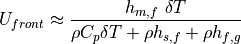
where
- is the average metal front speed
- is the Heat Transfer Coefficient between the metal and the foam
- is the temperature difference between the metal and foam.
- is the Density*Specific Heat defined above for the foam component.
- is the Density*Melting Energy defined above for the foam component.
- is the Density*Vapor Energy defined above for the foam component. This should only be included if the metal temperature is higher than the vaporization temperature of the foam.
Since filling of the molten metal is controlled by heat transfer, inlet conditions at domain boundaries must be specified by pressure and not velocity boundary conditions. Other considerations when using the Lost Foam Casting model are:
- Fluid cannot be initialized in the regions already occupied by foam.
- Foam can be viewed by plotting the Free obstacle volume variable.
For better pressure iteration convergence it is recommended to use a small
degree of limited compressibility by setting the compressibility of Fluid 1 () to a value in the
range from 1.0  10-7 to 1.0 10-6 cm s2 g-1 (CGS units), or to a value on the order of 0.1/(maximum fluid
pressure).
10-7 to 1.0 10-6 cm s2 g-1 (CGS units), or to a value on the order of 0.1/(maximum fluid
pressure).
Note
The lost foam model can be used only in one-fluid flows with a sharp interface and heat transfer.
See also
- Solidification
- Modeling the Lost Foam Process with Defect Prediction-Progress Report: Lost-Foam Model Extensions, Wicking (TN-45) and Lost Foam Variable Pattern Density (TN-67) at http://users.flow3d.com/technical-notes/.
- Acoustic Waves (Limited Compressibility) for more information on the limited compressibility model.
Lost foam residue tracking¶
In metal casting, it is possible for impurities on the liquid surface to be folded into the interior of a cast part as the liquid metal fills the mold. These impurities may result in a mechanical weakness in the final part. The Lost foam residue tracking model tracks the location of surface impurities that arise from carbon residue remaining after the melting or vaporization of foam by metal. Activate the Lost foam residue tracking by selecting and select Track foam residue:
The lost foam residue prediction algorithm in FLOW-3D consists of a source term for residue generation formation, which is proportional to the amount of degraded foam. A transport equation is used to track the movement of defect material with the flowing metal. The rate of lost foam residue formation is controlled by the Residue generation rate and defaults to 1.0. The actual magnitude of the generation rate is unimportant, especially in the absence of experimental data quantifying the contamination. The distribution of the contaminant in the filled mold can be interpreted as the distribution of the probability of defects. For example, locations of local maximums of the foam residue concentration are more likely to be the locations of defects.
The Molecular diffusion coefficient controls the rate of molecular diffusion (i.e., Brownian-motion based) of the residue after it has been generated, during transport. The Turbulent diffusion coefficient multiplier controls the rate of diffusion due to turbulence: a value of 1.0 means that the residue diffuses at the same rate as the momentum, while values less than 1.0 mean that the diffusion of defect is slower than that of momentum. Values greater than 1.0 make no physical sense.
An additional defect-tracking variable can be used in the lost foam model to track lost foam residue that attaches, or wicks, to mold walls and cannot be moved by the liquid metal flow. These stationary defects are described by activating Allow residue wicking into mold. These defects are converted to the stationary defects near mold walls at a rate defined by the parameter Residue wicking rate.
Note
- Lost foam residue is represented by the flag in the Selected data output area.
See also
The Defect tracking is a related model for approximating defects generated by the oxide formation on the free surface.
Mesh Boundary Conditions¶
Outflow Type of Pressure Boundary¶
The purpose of a pressure boundary is to maintain a prescribed pressure or fluid elevation and allow dynamically varying flow rate at the boundary. At a pressure boundary, pressure distribution can be either uniformly or hydrostatically distributed. When gravity is defined and fluid elevation at the boundary is specified, hydrostatic pressure distribution is calculated by the code. A pressure boundary can be either a regular or an outflow type.
At a regular type of pressure boundary, fluid can enter or leave the domain. Fluid density and all the advecting scalars are prescribed at the boundary. Hydrostatic pressure distribution at the boundary is code-calculated using the prescribed density. For a variable density problem, since density is calculated and varies with time inside the domain, a sharp pressure gradient near the boundary can be formed, causing unphysically high fluid velocity as well as other issues near the boundary, e.g., over-predicted high erosion rate in scour simulations.
At an outflow type of pressure boundary, fluid can leave but is not allowed to enter the domain. If the calculated velocity points inwards the domain, it is set to zero. Density and all the advecting scalars at the boundary are calculated at each time step using zero normal gradients. Hydrostatic pressure distribution at the boundary is code-calculated using the updated density. As a result, unphysically high pressure gradient and fluid velocity and other related issues such as over-prediction of erosion rate can be avoided near the boundary.
It is recommended that the outflow type of pressure boundary is used for variable density simulations such as sediment scour simulations and other cases where scalars are transported with fluid flow. Note it can only be used at an outlet or downstream boundary where fluid does not move in.
Rating curve¶
A rating curve is the relation between water elevation and water volume flow rate at a cross section of a river. A user-provided rating curve can be applied to a volume flow rate boundary or a pressure boundary at XMIN, XMAX, YMIN or YMAX. At such a boundary, water elevation is calculated in accordance to the user-given volume flow rate (for volume flow rate boundary) or code- calculated volume flow rate (for pressure boundary) using the rating curve.
To use the rating curve to specify water elevation, go to and select the mesh block and the boundary. Select Use fluid elevation and click on Rating curve to display the rating curve window. The rating curve data may be entered directly in its data table or defined in an external data file. To define an external fie for rating curve, check Import from simulation directory, click Import values and then choose the data file. The data column that represents water elevation in the file should also be selected.
Since the rating curve is obtained via measurement in river with steady or quasi-steady flow condition, it can only be used for simulations of steady state flow or flow with slow time-variation. When the rating curve is used at a volume flow rate boundary, the flow rate must be a constant or change slowly with time. The initial condition should be defined with fluid inside the domain, and the initial flow should be as close to the actual flow condition as possible. Starting with an empty domain or a domain where fluid is stationary may result in unphysical behavior or instability for a simulation.
When flow rate at the boundary is equal to zero, which is possible at the beginning of a simulation, then, instead of using the rating curve, the solver uses user-defined fluid elevation at the boundary.
Natural inlet¶
When volume flow rate boundary condition is used at an inlet boundary at XMIN, XMAX, YMIN or YMAX, the boundary can be defined as a natural inlet when the rating curve is unavailable. For a natural inlet, the code automatically sets water depth at the boundary to be equal to that in the adjacent mesh cells inside the domain. With such a treatment, significant jump of water elevation near the inlet boundary can be avoided. Thus water surface at the inlet rises as water surface rises inside the domain, and vice versa. Note water is required to exist initially inside the domain and at the inlet to make the natural inlet work.
To define a natural inlet, Use fluid elevation
must be selected. The flow category at the boundary can be selected as
sub-critical flow (),
super-critical flow (),
critical flow () or
automatic flow regime.  is Froude
number defined as 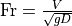, where
is water velocity,
is Froude
number defined as 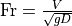, where
is water velocity,  is magnitude of the gravitational acceleration, and is water
depth. For a given velocity, water depth is the critical water depth if .
At a natural inlet, the FLOW-3D code uses the critical water depth as the lower limit for sub-critical flow and
upper limit for super-critical flow, respectively, if either of the two categories is selected. For
critical flow category, water depth at a natural inlet is always equal to the critical depth. If
automatic flow regime is selected, water depth is not limited by the critical depth, and
flow category at the inlet is code-calculated and can change with time.
is magnitude of the gravitational acceleration, and is water
depth. For a given velocity, water depth is the critical water depth if .
At a natural inlet, the FLOW-3D code uses the critical water depth as the lower limit for sub-critical flow and
upper limit for super-critical flow, respectively, if either of the two categories is selected. For
critical flow category, water depth at a natural inlet is always equal to the critical depth. If
automatic flow regime is selected, water depth is not limited by the critical depth, and
flow category at the inlet is code-calculated and can change with time.
Users may define the maximum and the minimum elevations at a natural inlet boundary to confine the upstream fluid elevation further. By default, they are the highest and the lowest z-coordinate values of the computational domain, respectively. They can be entered in the corresponding edit boxes. It is recommended to define the minimum fluid elevation somewhat above the terrain, so that flow continues of the elevation decreases to the minimum. If this is not done and fluid elevation drops below the terrain, then simulation will terminate with an error assuming that this situation is inconsistent with a natural boundary condition and user intentions.
See also
Rating Curve and Natural Inlet Boundary section in the Theory chapter.
Wave Boundary Condition¶
A wave boundary condition can be defined at left (X Min), right (X Max), front (Y Min) and back (Y Max) mesh boundaries for free-surface problems in Cartesian coordinate system. At such a boundary, a surface wave enters the computational domain and propagates in the direction normal to the boundary. The wave can be Linear, Stokes, Stokes and Cnoidal wave, Solitary, or Random.
A simulation with a wave boundary condition requires the gravitational acceleration to be directed in the negative z-direction, which is a negative number defined in . To set up a wave boundary, go to . Click on the button next to the desired mesh boundary to bring up the boundary condition window. Check the Wave boundary type, which disables Use fluid fraction and enables Use fluid elevation in the drop down menu. Specify the Fluid elevation at the boundary as the z-coordinate of the undisturbed fluid surface that the wave motion is superimposed on.
![Mesh block 1 [X Min Boundary]](_images/wave-boundary-conditions-mesh-block.png)
It is very important that the selected wave generator represent the physical wave conditions at the boundary. The image below can be used to identify the appropriate generator given the wave height (twice the amplitude), the wave period, the fluid depth, and gravity:

Note
The above chart applies to waves with a single frequency and is not representative of scenarios where a combination of linear waves are used to define a more complex waveform.
Linear Wave¶
A linear wave has a sinusoidal surface profile, and its amplitude is small compared to the wavelength and fluid depth. It is generated using Airy’s linear wave theory. At the linear wave boundary, in addition to a regular linear wave, users can also define an irregular wave using multiple (up to 1000) sinusoidal linear component waves with independent frequencies, amplitudes and initial phases (another method to generate an irregular wave is to use the random wave generator based on a wave energy spectrum, as described in the Random Wave section). The elevation of a linear component wave is expressed as
where ,  and
and  are wave amplitude,
angular frequency and initial phase, respectively.
are wave amplitude,
angular frequency and initial phase, respectively.
To define a linear wave or an irregular wave consisting of several linear waves, in the boundary condition window, go to Wave Definition and select Linear in the dropdown box and then click on Definition to bring up the Wave Definition window. In the Wave Attributes area, specify the total number of sinusoidal wave components in the input box for Number of wave components (it is 1 for a single linear regular wave). Then enter the Wave amplitude, Wave period and Phase shift (i.e., the initial phase, in degrees) for each component wave in the data table. The default phase shift is zero, which means at time t=0 the wave elevation is zero and is on the rise.
The linear wave solution is derived for an infinite reservoir with flat bottom, which is assumed to exist outside the computational domain and immediately adjacent to the mesh boundary. In this model, the Mean fluid depth defines the undisturbed fluid depth in the reservoir. It defaults to the difference between the Fluid elevation (the z-coordinate of the undisturbed surface) and the minimum z-coordinate of the computational domain. If the Mean fluid depth is different from its default, the user needs to provide the appropriate value in its input box.
At the wave boundary, the model allows for existence of a constant net current (inflow or outflow) in any horizontal direction, but the current must be slower than the wave speed for the linear wave solution to be valid. Find , and enter the velocity components of the current in the x and y directions, respectively. The current is assumed uniform across the boundary.
See also
Periodic Linear Wave Generator in the Theory manual.
Stokes Wave and Cnoidal Wave¶
Stokes wave is a nonlinear wave in deep water and possesses sharper crests and flatter troughs than a linear wave. In FLOW-3D , it is generated using either Fenton’s Fourier series method or Fenton’s fifth-order theory. The former provides higher order accuracy than the latter thus is the recommended Stokes wave generator. To define Stokes wave at the mesh boundary, in the boundary condition window, go to Wave Definition and choose Stokes and Cnoidal (Fourier series method) or Stokes (Fenton’s fifth-order theory) and then click on Definition to bring up the Wave Definition window.
A Cnoidal wave is a nonlinear wave in shallow water. It has even sharper crests and flatter troughs than the Stokes wave. In FLOW-3D , it is generated using Fenton’s Fourier series method. To define a cnoidal wave, choose Stokes and Cnoidal (Fourier series method) in the boundary condition window and then click on Definition to bring up the Wave Definition window.
In the Wave Attributes area of the wave definition window, specify Wave height (the vertical distance from trough to crest) and Wave period or Wavelength in their input boxes. Wave period and wavelength are not independent variables thus cannot be given at the same time.
Similar to the linear wave, the Stokes and cnoidal wave solutions are derived for an infinite reservoir with flat bottom, which is assumed to exist outside the computational domain and immediately adjacent to the mesh boundary. The Mean fluid depth at the boundary defines the undisturbed fluid depth in the reservoir. It defaults to the difference between the Fluid elevation (the z-coordinate of the undisturbed surface) and the minimum z-coordinate of the computational domain. Users need to define the Mean fluid depth if it is different from its default value.
The model allows for existence of a constant net current (inflow or outflow) in any horizontal direction at the wave boundary, but the current must be slower than the wave speed for the wave solution to be valid. Find , and enter the x and y velocity components of the current, respectively. The current is assumed uniform across the boundary.
During one wave period for all oscillatory waves, including Linear, Stokes and cnoidal waves, more fluid moves into the domain at the wave boundary than out of the domain. This is because fluid has a higher elevation when moving in than when moving out. Moreover, for Stokes and cnoidal waves, fluid moves faster at the wave crest than at the trough. This may result in a net increase of fluid volume in the domain over time in certain circumstances. As an option, users can choose to automatically compensate for the net fluid volume influx induced by the wave motion at the boundary by going to and checking Eliminate net volume flux. Otherwise, check Include net volume flux at wave boundaries. This selection applies to all wave boundaries in the simulation.
See also
Stokes Wave Generator and Stokes and Cnoidal Waves Generator (Fourier Series Method) in the Theory manual.
Solitary Wave¶
To define a solitary wave at the mesh boundary, in the mesh boundary window, go to Wave Definition and choose Solitary and then click on Definition to bring up the Solitary Wave Definition window. In the Wave attributes area, specify Wave height which is the vertical distance from the undisturbed water level to the wave crest. Similarly to the other types of waves, solution of the solitary wave is derived for an infinite reservoir with flat bottom, which is assumed to exist outside the computational domain and immediately adjacent to the mesh boundary. The Mean fluid depth defines the undisturbed fluid depth in the reservoir. It defaults to the difference between the Fluid elevation (i.e., the z-coordinate of the undisturbed surface) and the minimum z-coordinate of the computational domain. Users need to define the Mean fluid depth if it is different from its default value.
The solitary wave is initially located outside the computational domain. By default, the initial distance from the crest to the wave boundary is one half of the wavelength. The wavelength of a solitary wave is the extent of the wave in its propagation direction. It is measured between two points at opposite sides of the crest where the surface displacement is 1% of the wave height. If that distance is different from its default value, specify it in its input box.
The solitary wave model allows for existence of a constant net current (inflow or outflow) in any horizontal direction at the wave boundary, but the current must be slower than the wave speed for the solitary wave solution to be valid. If such a current exists, in , enter the x and y velocity components of the current, respectively. The current is assumed uniform across the boundary.
See also
Solitary Wave Generator in the Theory manual.
Random Wave¶
A random wave is treated as a superposition of many linear component waves with
different wave periods, amplitudes and initial phases. In FLOW-3D , the code
automatically generates 1000 linear component waves at the wave boundary for a
random wave simulation. The periods are evenly distributed from 0.5s to 50s. The
initial phases are randomly selected between 0 to 2 . The wave amplitudes
are calculated using wave energy spectrum. Two internally defined energy spectra
are available for users to choose: Pierson-Moskowitz (P-M) spectrum
and JONSWAP spectrum. Users can also define their own wave energy
spectrum in an external data file.
. The wave amplitudes
are calculated using wave energy spectrum. Two internally defined energy spectra
are available for users to choose: Pierson-Moskowitz (P-M) spectrum
and JONSWAP spectrum. Users can also define their own wave energy
spectrum in an external data file.
To specify a random wave, in the boundary condition window, go to Wave Definition and select Random then click on Definition to bring up the Random Wave Definition window. Under Energy spectrum type, select the type of wave energy spectrum. If the Pierson-Moskowitz (P-M) or JONSWAP spectra are used, specify wind speed 10 m above the sea level in the wind speed input box. For JONSWAP spectrum, users also need to define Fetch length and Peak enhancement factor. The default value of the peak enhancement factor is 3.3. The Fetch length must be defined as there is no default. Details on this and another parameters is found in Random Wave.
If users want to use their own wave energy spectrum, select Energy spectrum file and load the existing data file that defines the wave spectrum. There should be two columns of data in the file. The left one is a series of angular frequencies of waves (in ), and the right is the corresponding energy values (in ). The file should not have a header or title line, and the total number of rows of data should not exceed 1000. The delimiter for the columns can be a space, comma, or tab. There is no restriction on the extension of the file name.
See also
Random Wave in the Theory manual.
Initialization of Wave Motion¶
Wave motion can also be defined as an initial condition. This is to allow the wave to initially exist throughout the computational domain so that computation time to reach steady wave motion can be shortened. The initial wave elevation and fluid velocity are generated using the same wave generator and the same wave parameters as those at the wave boundary. To initialize wave motion, go to and select Use wave boundary in the drop-down input box. In Reference mesh block and Reference mesh boundary, select the mesh block and the wave boundary which are used to define the initial wave motion.
Minimizing Wave Reflections from Mesh Boundaries¶
All outlet boundaries will reflect some portion of an incident wave, regardless of the selected boundary condition, and the reflected portion of the wave can have a negative impact on the solution. Wave reflections can be minimized by placing a wave-absorbing layer (sponge layer) before the outlet boundary. Refer to the section Wave-absorbing Layer (Sponge Layer) at Outflow Boundary for how to set up a wave-absorbing layer.
Using the shallow water model for wave simulations¶
The shallow water model requires that the horizontal scale of fluid flow is much longer than water
depth. Typically in wave simulation, the flow horizontal scale is the wave length rather than the
horizontal length of the domain. More specifically, only shallow water wave (defined as
, where  and
and  are water
depth and wavelength, respectively) can be simulated using the shallow water model. Significant errors may be
introduced if intermediate water wave or deep water wave is simulated using the shallow water model.
are water
depth and wavelength, respectively) can be simulated using the shallow water model. Significant errors may be
introduced if intermediate water wave or deep water wave is simulated using the shallow water model.
Wave-absorbing Layer (Sponge Layer) at Outflow Boundary¶
When periodic traveling waves reach an outflow boundary, undesired wave reflection occurs more or less depending on the boundary condition. As a result, the waveform in the region of interest may become irregular, and fluid volume in the computational domain may experience significant conservation problem. A wave-absorbing layer or sponge layer is a special region installed before an outflow boundary to absorb wave motion, which reduces wave reflection from the boundary. As described in the Theory manual section Wave-absorbing Layer (Sponge Layer) at Open Boundary, the absorption is implemented by an artificial linear damping force to dissipate wave motion. It works most effectively if the outflow boundary condition (radiation boundary condition) is used at the boundary at the same time.
There are two methods for defining a wave absorbing region; 1) wave-absorbing component, 2) wave-absorbing boundary. Both methods are described below.
Wave-absorbing Component¶
A wave-absorbing layer is defined by a special geometry component called a wave-absorbing component. It is created using the same methods for other geometry components (See Geometry), but the Type must be selected as Wave absorbing. It is completely open to fluid flow but applies damping to wave motion. Its area and volume fractions are equal to 1. The component must extend to or beyond the outflow boundary. For flexibility, the component can be defined with multiple subcomponents using both STL and primitive types and its shape can be arbitrary. In most applications, however, only a simple rectangular block is needed. It is recommended the layer thickness in the downstream direction be one wavelength.
To define the wave-absorbing parameters, a point on the starting plane of the absorbing layer must be specified as well as the downstream direction of wave motion (toward the outflow boundary). The starting plane is a vertical plane going through the user-defined point and parallel to the outflow boundary, while the end plane is the outflow boundary. Wave damping occurs only in the region covered by the absorbing component between the two planes.
Properties are defined in the Geometry widget by selecting the wave absorbing component and navigating to the in the Component Properties window.
In the edit boxes, enter the x, y and z coordinates for the Starting Point (the point on the starting plane) and the downstream direction vector. Users need to define the damping coefficient values at both the starting and end planes of the wave-absorbing layer. Inside the absorbing layer, the damping coefficient is evaluated by the code via linear interpolation. It is found that a linear increase of the damping coefficient in the downstream direction works more effectively to reduce wave reflection. In the edit boxes enter the damping coefficient at the starting and the end planes. Their default values are 0.0 and 1.0 1/s, respectively.
The wave-absorbing layer is designed not to damp a background stream. If the stream velocity in the wave-absorbing layer is known, for Background Stream Velocity select and enter the x, y and z velocity components. If this value us unknown, select the option for to allow the code to calculate the background stream velocity. Only select this last option when the stream exists and its velocity is unknown in the wave-absorbing layer. Note the code-calculated background stream velocity may introduce error.
See also
Theory manual sections Outflow Boundary Conditions and Wave-absorbing Layer (Sponge Layer) at Open Boundary.
Wave-absorbing Boundary¶
A wave-absorbing boundary is defined by selecting an or boundary condition and then checking the Wave absorbing layer check box. Required is a length, which at a minimum, should be at least one wave length. Choosing this boundary type will automatically connect the wave absorbing layer that exists within the computational domain to the boundary face in which the wave-absorbing boundary condition is applied.
The damping coefficients and the Background Stream velocity are the same as described above in the section on Wave-absorbing Component.
See also
Theory manual sections Outflow Boundary Conditions and Wave-absorbing Layer (Sponge Layer) at Open Boundary.
Moisture Drying Model¶
Porous materials and sand molds may have moisture distributed throughout. This moisture will evaporate due to temperature changes or due to exposure to dry air. An example is during metal casting in sand molds, where the mold temperature increases during solidification of the casting. The latent heat released during evaporation may significantly affect the temperature evolution in the mold and the cooling rate of the casting.
To use the model, go to and the following window appears:
The simpler model is the Isothermal moisture drying model, which assumes that the moisture in the component evaporates at a constant temperature (i.e., the resulting affects on saturation temperatures due to pressure changes are minimal). When using this model, data must be provided here for the moisture Density, Specific heat, Evaporation temperature, and Latent heat of evaporation. Note that these values do not have to correspond to any data provided for any existing fluid in the simulation. The default values provided are for water in CGS units – enter different values if needed for your simulation.
Under Moisture Content on the right side of the window are the options on how the initial conditions of moisture within the component(s) are to be entered. The default is Percent weight fraction, where the initial data is the percentage of the total weight of the component that is moisture. Select Weight per bulk component volume if data on the mass of moisture per unit volume of the component is preferable.
The Two-phase moisture drying model option is more complex, and can only be used for two-fluid simulations with compressible flow and the non-condensable gas model (see Two Fluids with Non-condensable Gas). Confirm here the Gas constant and Specific heat data for the non-condensable component of Fluid 2 – the default values are for air in CGS units.
The Isothermal moisture drying model in FLOW-3D assumes that the vapor escapes from the component immediately after evaporation and no re-condensation occurs. This significantly simplifies the model since no separate vapor transport equation has to be solved. The model can be used only if is activated. Moisture can only exist in components with non-zero values of Density*Specific heat and Thermal Conductivity, that is, in components that can have a distribution of temperature within them. Porosity of moist components need not be set, and the Density*Specific heat and Thermal Conductivity values are macroscopic: the porosity is included in the values.
The Two-phase moisture drying model requires that moist components be porous; the vapor produced by the moisture drying model becomes part of the vapor fluid 2, and thus is transported through the porous component. Additionally, it is necessary to activate the Two-fluid phase change model in , along with checking the option for Non-condensable gas model. Therefore, the evaporation of moisture is controlled by the local saturation pressure and local pressure within the pore space, and the partial pressure of the vapor within the pore space. The latent heat of vaporization and specific heat are defined in the phase change model (see Two-fluid Model). This model can only be used for components with non-zero values of Density*Specific heat and Thermal Conductivity, that is, in components that can have a distribution of temperature within them. However, with this model, the Density*Specific heat and Thermal Conductivity values are microscopic values for the solid part of the component only (i.e., not including the porosity, since the assigned porosity is used to compute the values used in the computation).
The initial uniform moisture content for a component is set in . Select Yes from the drop-down menu next to Contains Moisture, and specify the Moisture content as either the Percent weight fraction (dimensionless value between 0 and 100) or Weight per bulk component volume (units of mass/volume), as defined in .
It is necessary also to provide data for the Dry Density of the component. For the Isothermal moisture drying model this is the macroscopic value of the density (i.e., including the porosity), while for the Two-phase moisture drying model it is the microscopic value (i.e., not considering the porosity).
Moisture can be viewed by plotting Moisture content from or . The total moisture volume can also be plotted as a function of time in History data in , similar to the total fluid volume.
Note
- The Specific heat of the moisture is added to that of the “dry” component, but the component conductivity is not adjusted for moisture content.
- For the Isothermal moisture drying model in FLOW-3D the presence
of moisture implies that the component is porous. However, the user does
not need to employ the porous component model to use the moisture model,
although moisture bearing components can be porous. In the latter case the
bulk component volume is defined as
where is the
component porosity and is the actual (solid)
component volume.
Moving objects¶
General Moving Objects¶
Basics¶
The general moving objects (GMO) model in FLOW-3D can simulate rigid body motion, which is either user-prescribed (prescribed motion) or dynamically coupled with fluid flow (coupled motion). If an object’s motion is prescribed, fluid flow is affected by the object’s motion, but the object’s motion is not affected by fluid flow. If an object has coupled motion, however, the object’s motion and fluid flow are coupled dynamically and affect each other. In both cases, a moving object can possess six degrees of freedom (DOF), or rotate about a fixed point or a fixed axis. The GMO model allows the location of the fixed point or axis to be arbitrary (it can be inside or outside the object and the computational domain), but the fixed axis must be parallel to one of the three coordinate axes of the space reference system. In one simulation, multiple moving objects with independent motion types can exist (the total number of moving and non-moving components cannot exceed 500). Any object under coupled motion can undergo simultaneous collisions with other moving and non-moving objects and wall and symmetry mesh boundaries (See Collision). The model also allows the existence of multiple (up to 100) elastic linear and torsion springs, elastic ropes and mooring lines which are attached to moving objects and apply forces or torques to them (See Springs & Ropes and Mooring Lines).
In general, the motion of a rigid body can be described with six velocity components: three for translation and three for rotation. In the most general cases of coupled motion, all the available velocity components are coupled with fluid flow. However, the velocity components can also be partially prescribed and partially coupled in complex coupled-motion problems (e.g., a ship in a stream can have its pitch, roll and heave to be coupled but yaw, sway and surge prescribed). For coupled motion only, in addition to the hydraulic, gravitational, inertial and spring forces and torques which are calculated by the code, additional control forces can be prescribed by the user. The control forces can be defined either as up to five forces with their application points fixed on the object or as a net control force and torque. The net control force is applied to the GMO’s mass center, while the control torque is applied about the mass center for 6-DOF motion, and about the fixed point or fixed axis for those kinds of motions. The inertial force and torque exist only if the Non-inertial Reference Frame model is activated.
In FLOW-3D , a GMO is classified as a geometry component that is either porous or non-porous. As with stationary components, a GMO can be composed of a number of geometry subcomponents. Each subcomponent can be defined either by quadratic functions and primitives, or by STL data, and can be solid, hole or complement. If STL files are used, since GMO geometry is re-generated at every time step in the computation, the user should strive to minimize the number of triangle facets used to define the GMO to achieve faster execution of the solver while maintaining the necessary level of the geometry resolution. For mass properties, different subcomponents of an object can possess different mass densities.
In order to define the motion of a GMO and interpret the computational results correctly, the user needs to understand the body-fixed reference system (body system) which is always fixed on the object and experiences the same motion. In the FLOW-3D preprocessor, the body system (x’, y’, z’) is automatically set up for each GMO. The initial directions of its coordinate axes (at t=0) are the same as those of the space system (x, y, z). The origin of the body system is fixed at the GMO’s reference point which is a point automatically set on each moving object in accordance with the object’s motion type. The reference point is:
- the object’s mass center for the coupled 6-DOF motion;
- the fixed point for the fixed-point motion;
- a point on the fixed axis for the fixed-axis rotation;
- a user-defined reference point for the prescribed 6-DOF motion.
If the reference point is not given by users for the prescribed 6-DOF motion, it is set by the code at the mass center (if mass properties are given) or the geometry center (if mass properties are not given) of the object.
The reference pressure for a GMO is a component-specific parameter. It is the pressure on the blocked surface of a GMO and also the pressure on the GMO surface outside the computational domain. For example, for an initially closed valve, the reference pressure is the pressure applied at the contact (blocked) surface of the valve. When a GMO is partially or completely outside the computational domain, the reference pressure is the pressure on the GMO surface outside the domain. Without the reference pressure, the contact surface of a valve will have zero pressure and the valve may be impossible to open, and a GMO with coupled motion can be sucked out of the domain by the zero outside pressure if it is located at the domain boundary.
The reference pressure can be either user-specified (default) or code-calculated. If user-specified, its
default value is the initial vapor void pressure PVOID; otherwise it is calculated by the code as the
average pressure on open surface of the GMO inside the domain.
The GMO’s motion can be defined through the GUI using four steps:
- Activate the GMO model;
- Create the GMO’s initial geometry;
- Specify the GMO’s motion-related parameters, and
- Define the GMO’s mass properties.
Without the activation of the GMO model in step 1, the object created as a GMO will be treated as a non-moving object, even if steps 2 to 4 are accomplished.
Step 1: Activate the GMO Model¶
To activate the GMO model, go to and check the Activate general moving objects (GMO) model box.
The GMO model has two numerical methods to treat the interaction between fluid and moving objects: an explicit and an implicit method. If no coupled motion exists, the two methods are identical. For coupled motion, the explicit method, in general, works only for heavy GMO problem, i.e., all moving objects under coupled motion have larger mass densities than that of fluid and their added mass is relatively small. The implicit method, however, works for both heavy and light GMO problems. A light GMO problem means at least one of the moving objects under coupled motion has smaller mass densities than that of fluid or their added mass is large. The user may change the selection on the Moving and deforming objects window from the Physics widget or at .
Step 2: Create the GMO’s Initial Geometry¶
In the Model Setup –> Geometry widget, create the desired geometry for the GMO components using either primitives and/or imported STL files in the same way as is done for any stationary component. The component can be either standard or porous. To set up a porous component, refer to Porous Media. Note that the Copy function cannot be used with geometry components representing GMOs.
Step 3: Specify the GMO’s Motion Related Parameters¶
The following section discusses how to set up parameters for prescribed and coupled 6-DOF motion, fixed-point motion and fixed-axis motion. The user can go directly to the appropriate part.
Prescribed 6-DOF Motion¶
In , select Prescribed motion. Then navigate to . Under Type of Constraint, select 6 Degrees of Freedom in the combo box.

Clicking on Moving Object Properties –> Edit opens the motion definition dialog:
To define the object’s velocity, go to the Initial/Prescribed Velocities tab in the Moving object setup window. The prescribed 6-DOF motion is described as a superimposition of a translation of a reference point and a rotation about the reference point. The reference point can be anywhere inside or outside the moving object and the computational domain. The user needs to enter its initial x, y and z coordinates (at t=0) in the provided edit boxes. By default, the reference point is determined by the preprocessor in two different ways depending on whether the object’s mass properties are given: if mass properties (either mass density or integrated mass properties) are given, then the mass center of the moving object is used as the reference point; otherwise, the object’s geometric center will be calculated and used as the reference point.
With the reference point provided (or left for the code to calculate), users
can define the translational velocity components for the reference
point in space system and the angular velocity components (in
radians/time) in body system. Each velocity component can be defined either as
a sinusoidal or a piecewise linear function of time by making a selection in
the corresponding combo box. For a constant velocity component, choose
Non-Sinusoidal and simply enter its value in the corresponding
input box (the default value is 0.0). If a velocity component is
Non-sinusoidal and time-dependent, click on the corresponding Tabular
button to open a data table and enter values for the velocity component and
time. Alternatively, the user can also import a data file for the velocity
component versus time by clicking .
The file must have two columns of data which represent time and velocity from
left to right and must have a csv extension. If the velocity component
is sinusoidal in time, then enter the values for Amplitude,
Frequency (in Hz) and Initial Phase (in degrees) in
the input boxes. The expression for the sinusoidal velocity component is
where:
is the amplitude,
 is the frequency, and
is the frequency, andis the initial phase.
Users can set limits for the translational displacements of the object’s reference point in both negative and positive x, y and z directions in space system. The displacements are measured from the initial location of the reference point. During motion, the reference point cannot go beyond these limits but can move back to the allowed range after it reaches a limit. To set the limits for translation, go to the Motion Constraints tab and enter the maximum displacements allowed in the corresponding input boxes, using absolute values. By default, these values are infinite. Note the Limits for rotation is only for fixed-axis rotation thus cannot be set for 6-DOF motion.
Prescribed Fixed-point Motion¶
In , select Prescribed motion. Go to . Under Type of Constraint, select Fixed point rotation in the combo box and enter the x, y and z coordinates of the fixed point in the corresponding input boxes.
To define the velocity of the object, go to the Initial/Prescribed
Velocities tab in the Moving object setup window. The velocity
components to be defined are the x, y and z components of the angular velocity
(in radians/time) in the body system. Each velocity component can be defined as
either a sinusoidal or a piecewise linear function of time by making a
selection in the corresponding combo box. For a constant velocity component,
choose Non-Sinusoidal and simply enter its value in its input box
(the default value is 0.0). If a velocity component is time-variant and
Non-sinusoidal, click on the Tabular button to open a
data table and enter the values for the velocity component and time.
Alternatively, the user can also import a data file for the velocity component
versus time by clicking . The file
must have two columns of data which represent time and velocity component from
left to right and must have a csv extension. If the velocity component
is sinusoidal in time, then enter the values for Amplitude,
Frequency (in cycles/time) and Initial Phase (in
degrees) in the corresponding input boxes. The expression for a sinusoidal
angular velocity component is
where:
- is the amplitude,
- is the frequency, and
 is the initial phase.
is the initial phase.
Prescribed Fixed-Axis Motion¶
In , select Coupled motion. Then navigate to . Under Type of Constraint, select Fixed X-Axis Rotation or Fixed Y-Axis Rotation or Fixed Z-Axis Rotation in the combo box depending on which coordinate axis the rotational axis is parallel to.
Coordinates of the rotational axis need be given in two of the three input boxes for Fixed Axis/Point X Coordinate, Fixed Axis/Point Y Coordinate and Fixed Axis/Point Z Coordinate. For example, if the rotational axis is parallel to the z-axis, then the x and y coordinates for the rotational axis must be defined. Users can also set limits for the object’s rotational angle in both positive and negative directions. The rotational angle (i.e., angular displacement) is a vector and measured from the object’s initial orientation based on the right-hand rule. Its value is positive if it points in the positive direction of the coordinate axis which the rotational axis is parallel to. The object cannot rotate beyond these limits but can rotate back to the allowed angular range after it reaches a limit. To set the limits for rotation, in , enter the Maximum rotational angle allowed in negative and positive directions in the corresponding input boxes, using absolute values in degrees. By default, these values are infinite.
To define the angular velocity of an object (in radians/time), go to
Initial/Prescribed Velocities. The angular velocity can be defined
either as a sinusoidal or a piecewise linear function of time by making a
selection in the corresponding combo box. For a constant angular velocity,
choose Non-Sinusoidal and simply enter its value in its input box
(the default value is 0.0). If it is Non-sinusoidal in time, click on the
corresponding Tabular button to open a data table and enter the
values for the angular velocity and time. Alternatively, the user can also
import a data file for the velocity component versus time by clicking
. The file must
have two columns of data which represent time and angular velocity from left to
right and must have a csv extension. If the angular velocity is
sinusoidal in time, then enter the values for Amplitude,
Frequency (in cycles/time) and Initial Phase (in
degrees) in the corresponding input boxes. The expression for a sinusoidal
angular velocity is

where:
- is the amplitude,
- is the frequency, and
- is the initial phase.
Coupled 6-DOF motion¶
In , select Coupled motion. Then navigate to . Under Type of Constraint, select 6 Degrees of Freedom in the combo box.
Users need to define the initial velocities for the object. Go to the Initial/Prescribed Velocities tab. Enter the x, y, and z components of the initial velocity of the GMO’s mass center in X Initial Velocity, Y Initial Velocity and Z Initial Velocity, respectively. Enter the x’, y’ and z’ components of the initial angular velocity (in radians/time) in the body system in X Initial Angular Velocity, Y Initial Angular Velocity and Z Initial Angular Velocity, respectively. By default, the initial velocity components are zero.
For coupled 6-DOF motion, user-prescribed control force(s) and torque exerting on the object can be defined either in the space system or the body system. They are combined with the hydraulic, gravitational, inertial and spring forces and torques to determine the object’s motion. There are two different ways to define control force(s) and torque: prescribe either a total force and a total torque about the object’s mass center or multiple forces with their application points fixed on the object. By default, all the control force(s) and torque are equal to zero.
To prescribe total force and total torque, in the Control Forces
and Torques tab, choose Define Total Force and Total Torque in
the combo box. Further select In Space System or In
Body System depending on which reference system the control force and torque
are define in. If a component of the force or the torque is a constant, it can
be specified in the corresponding edit box (default is zero). If it varies
with time, then click on the Tabular button to bring up a data
input table and enter the values for the component and time. The time-variant
force and torque are treated as piecewise-linear functions of time during
simulation. Alternatively, instead of filling the data table line by line, the
user can also import a data file for the force/torque component
versus time by clicking . The file
must have two columns of data which represent time and the force/torque
component from left to right and must have a csv extension.

If, instead, control forces and their application points need to be defined,
then in the Control Forces and Torques tab choose
Define Multiple Forces and Application Points in the combo box.
Users can specify up to five forces. For each force, in the editor boxes,
choose the force index (1 to 5) and then select Space System or Body System
depending on which reference system the force is defined in. In field on the
left, enter the initial coordinates (at t=0) for the force’s application
point. In the field on the right, prescribe components of the force in x, y
and z directions of the body or space system. For a constant force component,
enter its value in the corresponding edit box. If it varies with time, then
click on the Tabular button to bring up a data input table and
enter values for the force component versus time. Tabular force input is
approximated with a piecewise-linear function of time. Alternatively, the user
can import a data file for the force versus time by clicking
. The file must have two columns of
data which represent time and from left to right and must have a csv
extension.
Motion constraints can be imposed to the object to decrease the number of the
degrees of freedom to less than six. This selection is made by setting part of
its translational and rotational velocity components as
Prescribed motion while leaving the other components to coupled motion in
. Note that the translational and rotational components are in the
space system and the body system, respectively. Then go to the
Initial/Prescribed Velocities tab to define their values. A
prescribed velocity component can be defined as either a sinusoidal or
piecewise linear function of time in the combo box. For a constant velocity
component, choose Non-Sinusoidal and enter its value in its input
box (the default value is 0.0). If the velocity component is time-dependent
and non-sinusoidal, click on the Tabular button to open a data
table and enter the values for the velocity component and time. Alternatively,
the user can import a data file for the velocity component versus time by
clicking . The file must have two
columns of data which represent time and the angular velocity component from
left to right and must have a csv extension. It is treated as a
piecewise-linear function of time in the code. If it is a sinusoidal function
of time, instead, enter its Amplitude, Frequency (in
Hz) and Initial Phase (in degrees) in the edit boxes. The
expression for a sinusoidal velocity component is
where:
- is the amplitude,
- is the frequency, and
- is the initial phase.
Users can also set limits for displacements of the object’s mass center in both negative and positive x, y and z directions in the space system, measured from its initial location. The mass center cannot go beyond these limits but can move back to the allowed motion range after it reaches a limit. To specify these limits, open the Motion Constraints tab and in the Limits for translation area, enter the absolute values of maximum displacements in the desired coordinate directions. There are no Limits for rotation for an object with 6-DOF coupled motion.
Coupled Fixed-Point Motion¶
In , select Coupled motion. Then navigate to . Under Type of Constraint, select Fixed point rotation in the combo box and enter the x, y and z coordinates of the fixed point in the corresponding input boxes. The Limits for rotation and Limits for translation cannot be set for fixed-point motion.
Definition of the initial velocity for the object is required. Go to the Initial/Prescribed Velocities tab and enter the x, y and z components of initial angular velocity (in rad/time) in the boxes for X Initial Angular velocity, Y Initial Angular velocity and Z Initial Angular velocity. Their default values are zero.
Further constraints of motion can be imposed to the object to decrease its
number of degrees of freedom. This is done in the Motion
Constraints tab by setting part of its rotational components as prescribed
motion while leaving the others as coupled motion in the combo box for
Translational and rotational options. Note that the rotational
components are in the body system. By default, the prescribed velocity
components are equal to zero. To specify a non-zero velocity component, go to
the Initial/Prescribed Velocities tab. It can be defined as either a
sinusoidal or a piecewise linear function of time by making selection in the
corresponding combo box. For a constant velocity component, choose Non-Sinusoidal and simply enter its value in the input box (the default
value is 0.0). If it is non-sinusoidal time-dependent, click on the
Tabular button to open a data table and enter the values for the
velocity component and time. Alternatively, the user can import a data file
for the velocity component versus time by clicking . The file must have two columns of data which represent time
and the angular velocity component from left to right and must have a
csv extension. If the velocity component is a sinusoidal function of
time, enter the values for Amplitude, Frequency (in
Hz) and Initial Phase (in degrees) in the input boxes. The
expression for a sinusoidal velocity component is
where:
- is the amplitude,
- is the frequency, and
- is the initial phase.
User-prescribed total torque exerting on the object can also be defined. They are combined with the hydraulic, gravitational, inertial and spring torques to determine the object’s rotation.
In the Control Forces and Torques tab, choose Define
Total Force and Total Torque in the combo box. Further, select
In Space System or In Body System depending on which
reference system the control torque is define in. If the torque is constant,
it can be simply set in the provided edit box for its x, y and z components.
For a time-dependent control torque, click the Tabular button to
bring up data tables and then enter the values of time and the torque
components. The control torque is treated as a piecewise-linear function of
time. As an option, instead of filling the data table line by line, the user
can also import a data file for the angular velocity versus time by clicking
. The file must have two columns of
data which represent time and velocity from left to right and must have a
csv extension.
Coupled Fixed-Axis Motion¶
In , select Coupled motion. Then navigate to . Under Type of Constraint, select Fixed X-Axis Rotation or Fixed Y-Axis Rotation or Fixed Z-Axis Rotation in the combo box depending on which coordinate axis the rotational axis is parallel to.
Coordinates of the rotational axis need be given in two of the three input boxes for Fixed Axis/Point X Coordinate, Fixed Axis/Point Y Coordinate and Fixed Axis/Point Z Coordinate. For example, if the rotational axis is parallel to the z-axis, then the x and y coordinates for the rotational axis must be defined. Users can also set limits for the object’s rotational angle in both positive and negative directions. The rotational angle (i.e., angular displacement) is a vector and measured from the object’s initial orientation based on the right-hand rule. Its value is positive if it points to the positive direction of the coordinate axis which the rotational axis is parallel to. The object cannot rotate beyond these limits but can rotate back to the allowed angular range after it reaches a limit. To set the limits for rotation, in , enter the maximum rotational allowed in negative and positive directions in the corresponding input boxes, using absolute values in degrees. By default, these values are infinite.
A definition of the initial angular velocity for the object is required. In the Initial/Prescribed Velocities tab, enter the initial angular velocity (in radians per time) in x, y or z direction in the corresponding input box in the Angular velocity components area, depending on the orientation of the rotational axis. The default value is zero.
User-prescribed total torque exerting on the object can be defined. They are
combined with the hydraulic, gravitational, inertial and spring torques to
determine the object’s rotation. In the Control Forces and Torques
tab, choose Define Total Force and Total Torque in the combo box.
If the torque is constant, it can be simply set in the provided edit box for
x, y or z component of the torque, depending on direction of the coordinate
axis which the rotational axis is parallel to. For a time-dependent control
torque, click the corresponding Tabular button to bring up a data
table and then enter the values of time and the torque. The control torque is
treated as a piecewise-linear function of time in computation. As an option,
instead of filling the data table line by line, the user can also import a
data file for the torque versus time by clicking . The file must have two columns of data which represent time
and torque from left to right and must have a csv extension. The
torque about the fixed axis is the same in the space and body systems, thus
the choice of In space system or In body system
options makes no difference to the computation. User-prescribed total control
force and multiple forces are not allowed for the fixed-axis motion.
Step 4: Specify the GMO’s Mass Properties¶
Definition of the mass properties is required for any moving object with coupled motion and is optional for objects with prescribed motion. If the mass properties are provided for a prescribed-motion object, the solver will calculate and output the residual control force and torque, which complement the gravitational, hydraulic, spring, inertial and user-prescribed control forces and torques to maintain the prescribed motion. To specify the mass properties, click on Mass Properties to open the dialog window. Two options are available for the mass properties definition: provide mass density or the integrated mass properties including the total mass, mass center and the moment of inertia tensor.
The option to provide mass density is convenient if the object has a uniform density or all its subcomponents have uniform densities. In this case, the preprocessor will calculate the integrated mass properties for the object. In the Mass Properties tab, select Define Density in the combo box and enter the density value in the Mass Density input box. By default, each subcomponent of the object takes this value as its own mass density. If a subcomponent has a different density, define it under that subcomponent in the geometry widget, .
The option to provide integrated mass properties is useful if the object’s mass, mass center and moment of inertia tensor are known parameters regardless of whether the object’s density is uniform or not. In the Mass Properties tab, choose Define Integrated Mass Properties in the combo box and enter the following parameters in the input boxes depending on the type of motion:
- Total mass, initial mass center location (at t=0) and moment of inertia tensor about mass center for 6-DOF and fixed-point motion types;
- Total mass, initial mass center location (at t=0) and moment of inertia about fixed axis for fixed-axis motion type.
Transformation of GMO Properties¶
Similarly to a regular stationary component, component transformations can be applied to a GMO component during its initial geometry setup following the order of magnification, rotations (first in x, then y, and then z, in degrees) and translations. Magnification and rotations are made about a user-defined transformation center with its default location at the origin of the space coordinate system. Component transformations are independent of the subcomponent transformations and are applied after all its subcomponent transformations are complete.

As an option, the component transformations can be applied to the body-fixed coordinate system of the GMO, which otherwise is initially the same as the space coordinate sdystem. Certain GMO properties are defined in the body system, such as:
1. Motion constraints, including fixed-point location (for fixed-point motion) and fixed-axis location (for fixed axis rotations). Note the fixed axis direction is not affected by component transformation.
2. Mass properties. If mass density is the specified mass property, it does not change with component transformation. BUt if integrated mass properties are used, then the total mass, mass center location, moment of inertia tensor, and moment-of-inertia about fixed axis can change with component transformations. Mass is proportional to GMO volume, and moment-of-inertia are proportional to mass and square of length during the transformation.
The moment-of-intertia tensor is defined in the GMO body system, therefore, depends on its orientation.
3. Initial and prescribed velocities. The initial location of reference point and direction of translational velocity are transformed with component transformation.
- Prescribed rotational velocities since they are always defined in the body system.
- Control force and torque, if defined in the GMO body system.
Applying component transformations to the GMO’s body-fixed coordinate system can provide a convenient way of defining its properties and analysing the output. Imagine running a series of simulations of flow around a boat at different drift angles. If this is modeled in a coordinate system in which the boat’s horizontal velocity is zero, then the initial location of the GMO can be such that it’s main axes coincide with those of the space system. In that case the moment-of-inertia tensor, which is always defined in the body system, is easily defined. Now component transformations can be defined to place the boat to the desired orientation. If those transformations are also applied to the GMO’s body system, then the moment-of-interia tensor does not have to be changed. The same applies to any other attributes - forces, for example, - defined in the GMO’s body system. Furthermore, the output quantities computed in the body system, e.g., angular velocities, forces and torque (see below), are easer to interprete as they will be computed relative to the boat’s main symmetry axes, irrespective of the drift angle.
Output¶
For each GMO component, the solver outputs time variations of several solution variables that characterize the object’s motion. These variables can be accessed during post-processing in the General history data catalog and can be viewed either graphically or in a text format. For both prescribed and coupled types of motion with the mass properties provided, the user can find the following variables:
- Mass center coordinates in space system
- Mass center velocity in space system
- Angular velocity in body system
- Hydraulic force in space system
- Hydraulic torque in body system
- Combined kinetic energy of translation and rotation
There will be no output for items 1, 2 and 6 for any prescribed-motion GMO if the mass properties are not provided. Additional output of history data include:
- Location and velocity of the reference point for a prescribed 6-DOF motion
- Rotational angle for a fixed-axis motion
- Residual control force and torque in both space and body systems for any prescribed motion and a coupled motion with constraints (fixed axis, fixed point and prescribed velocity components)
- Spring force/torque and deformation
- Mooring line extension and maximum tension force
- Mooring line tension forces at two ends in the x, y and z directions
As an option, the history data for a GMO with 6-DOF motion can also include the buoyancy center and the metacentric heights for rotations about x and y axes of the space system, which is useful for stability analysis of a floating object. Go to and check the respective box for Buoyancy Center and Metacentric Height for any component of interest. The buoyancy center is defined as the mass center of the fluid displaced by the object. The metacentric height (GM) is the distance from the gravitational center (point G) to the metacenter (point M). It is positive (negative) if point G is below (above) M.
GMO components can participate in heat transfer just like any stationary solid component. When defining specific heat of a GMO component, must be given.
Two options are available when defining heat sources for a GMO component: use the specific heat flux, or the total power. When the total power is used, the heat fluxes along the open surface of the moving object are adjusted at every time step to maintain a constant total power. If the surface area varies significantly with time, so will the heat fluxes. When the specific heat is used instead, then the fluxes will be constant, but the total power may vary as the surface area changes during the object’s motion. To define heat source for a GMO component, go to .
Mass sources/sinks can also be defined on the open surfaces of a GMO component. Details can be found in Mass Sources.
Although the GMO model can be used with most physical models and numerical options, limitations exist. To use the model properly, it is noted that
- For coupled motion, the explicit and implicit GMO methods perform differently. The implicit GMO method works for both heavy and light moving objects. The explicit GMO method, however, only works for heavy object problems (i.e., the density of moving object is higher than the fluid density).
- When the explicit GMO method is used, solution for fully coupled moving objects may become unstable if the added mass of the fluid surrounding the object exceeds the object’s mass.
- If there are no GMO components with coupled motion, then the implicit and explicit methods are identical and the choice of one makes no difference to the computational results.
- The implicit method does not necessarily take more CPU time than the explicit method, even though the former required more computational work, because it improves numerical stability and convergence, and allows for larger time step. It is thus recommended for all GMO problems.
- It is recommended that the limited compressibility be specified in the fluid properties to improve numerical stability by reducing pressure fluctuations in the fluid.
- In the simulation result, fluctuations of hydraulic force may exist due to numerical reasons. To reduce these fluctuations, the user can set No f-packing for free-surface problems in and set FAVOR tolerance to 0.0001 in . It is noted that an unnecessarily small FAVORTM tolerance factor can cause small time steps and slow down the computation.
- In order to calculate the fluid force on a moving object accurately, the computational mesh needs to be reasonably fine in every part of the domain where the moving object is expected to be in contact with fluid.
- An object can move completely outside the computational domain during a computation. When this happens, the hydraulic forces and torques vanish, but the object still moves under actions of gravitational, spring, inertial and control forces and torques. For example, an object experiences free fall outside the domain under the gravitational force in the absence of all other forces and torques.
- If mass density is given, then the moving object must initially be placed completely within the computational domain and the mesh around it should be reasonably fine so that its integrated mass properties (the total mass, mass center and moment of inertia tensor) can be calculated accurately by the code.
- If a moving object is composed of multiple subcomponents, they should have overlap in places of contact so that no unphysical gaps are created during motion when the original geometry is converted to area and volume fractions. If different subcomponents are given with different mass densities, this overlap should be small to avoid big errors in mass property calculation.
- A moving object cannot be of a phantom component type like lost foam or a deforming object.
- The GMO model works with the electric field model the same way as the stationary objects, but no additional forces associated with electrical field are computed for moving objects.
- If a GMO is porous, light in density and high in porous media drag coefficients, then the simulation may experience convergence difficulties.
- A Courant-type stability criterion is used to calculate the maximum allowed time-step size for GMO components. The stability limit ensures that the object does not move more than one computational cell in a single time step for accuracy and stability of the solution. Thus the time step is also limited by the speed of the moving objects during computation.
Note
- Time-Saving Tip: For prescribed motion, users can preview the object motion in a so-called “dry run” prior to the full flow simulation. To do so, simply remove all fluid from the computational domain to allow for faster execution. Upon the completion of the simulation the motion of the GMO objects can be previewed by post-processing the results.
- The residual forces (and torques) are computed for the directions in which the motion of the object is prescribed/constrained. They are defined as the difference between the total force on an object (computed from the prescribed mass*acceleration) and the computed forces on the object from pressure, shear, gravity, specified control forces, etc. As such, they represent the force required to move the object as prescribed.
Collision¶
The GMO model allows users to have multiple moving objects in one problem, and each of them can possess independent type of coupled or prescribed motion. At any moment of time, each object under coupled motion can collide with any other moving objects (of a coupled- or prescribed-motion type), non-moving objects as well as wall- and symmetry-type mesh boundaries. Without the collision model, objects may penetrate and overlap each other.
The GMO collision model is activated by selecting . It requires the activation of the GMO model first, done in the same panel. For a GMO problem with only prescribed-motion objects, it is noted that the collision model has no effect on the computation: inter-penetration of the objects can still happen.
The model allows each individual collision to be fully elastic, completely
plastic, or partially elastic, depending on the value of Stronge’s energetic
restitution coefficient, which is an input parameter. In general, a collision
experiences two phases: compression and restitution, which are associated with
loss and recovery of kinetic energy. The Stronge’s restitution coefficient is
a measure of kinetic energy recovery in the restitution phase. It depends on
the material, surface geometry and impact velocity of the colliding objects.
The range of its values is from zero to one. The value of one corresponds to a
fully elastic collision, i.e., all kinetic energy lost in the compression is
recovered in the restitution (if the collision is frictionless). Conversely, a
zero restitution coefficient means a fully plastic collision, that is, there
is no restitution phase after compression thus recovery of the kinetic energy
cannot occur. A rough estimate of the restitution coefficient can be conducted
through a simple experiment. Drop a sphere from height onto a
level anvil made of the same material and measure the rebound height
. The restitution coefficient can be obtained as .
In this model, the restitution coefficient is an object-specific
constant. A global value of the restitution coefficient that applies to all
moving and non-moving objects is set in
.
Friction can be included at the contact point of each pair of colliding bodies by defining the Coulomb’s friction coefficient. A global value of the friction coefficient that applies to all collisions is set in . Friction forces apply when the friction coefficient is positive; a collision is frictionless for the zero value of the friction coefficient, which is the default. The existence of friction in a collision always causes a loss of kinetic energy.
The global values of the restitution and friction coefficients are also used in the collisions at the wall-type mesh boundaries, while collisions of the moving objects with the symmetry mesh boundaries are always fully elastic and frictionless.
The object-specific values for the restitution and friction coefficients are defined in the widget. In the geometry list on the left, click on and then enter their values in the corresponding data boxes. If an impact occurs between two objects with different values of restitution coefficients, the smaller value is used in that collision calculation. The same is true for the friction coefficient.
Continuous contact, including sliding, rolling and resting of an object on top of another object, is simulated through a series of small-amplitude collisions, called micro-collisions. Micro-collisions are calculated in the same way as the ordinary collisions thus no additional parameters are needed. The amplitude of the micro-collisions is usually small and negligible. In case the collision strength is obvious in continuous contact, using smaller time step may reduce the collision amplitude.
If the collision model is activated but the user needs two specific objects to
have no collision throughout the computation, he can open the text editor () and set ICLIDOB(m,n) = 0 in namelist OBS, where m and n are the corresponding component
indexes. An example of such a case is when an object (component index m)
rotates about a pivot - another object (component index n). If the former
has a fixed-axis motion type, then calculating the collisions with the pivot
is not necessary. Moreover, ignoring these collisions makes the computation
more accurate and more efficient. If no collisions between a GMO component m
with all other objects and mesh boundaries are desired, then set
ICLIDOB(m,m) to be zero. By default, ICLIDOB(m,n) = 1 and ICLIDOB(m,m) = 1, which means collision is allowed.
To use the model properly, users should be noted that
- The collision model is based on the impact theory for two colliding objects with one contact point. If multiple contact points exist for two colliding objects (e.g. surface contact) or one object has simultaneous contact with more than one objects, object overlap may and may not occur if the model is used, varying from case to case.
- To use the model, one of the two colliding object must be under coupled motion, and the other can have coupled or prescribed motion or no motion. The coupled motion can be 6-DOF motion, translation, fixed-axis rotation or fixed-point rotation. For other constrained motion, (e.g., rotation is coupled in one direction but prescribed in another direction), the model is not valid, and mechanical energy of the colliding objects may have conservation problem.
- The model works with and without existence of fluid in the computational domain. It is required, however, that the contact point for a collision be within the computational domain, whereas the colliding bodies can be partially outside the domain at the moment of the collision. If two objects are completely outside the domain, their collision is not detected although their motions are still tracked.
- Collisions are not calculated between a baffle and a moving object: they can overlap when they contact.
- The model does not calculate impact force and collision time. Instead, it calculates impulse that is the product of the two quantities. Therefore, there is no output of impact force and collision time.
PQ2 Analysis¶
PQ2 analysis is important for high pressure die casting. The goal of the PQ2 analysis is to optimally match the die’s designed gating system to the part requirements and the machine’s capability. PQ2 diagram is the basic tool used for PQ2 analysis.
According to the Bernoulli’s equation, the metal pressure at the gate is proportional to the flow rate squared:
(5)¶
where:
- is the metal pressure at the gate, and
- is the metal flow rate at the gate.
The machine performance line follows the same relationship.
Based on the die resistance, machine performance, and the part requirements, an operating windows can be determined from the PQ2 diagram, as shown below. The die and the machine has to operate within the operating windows.
Model Setup¶
PQ2 analysis can only be performed on moving object with prescribed motion. The PQ2 analysis can be activated in . PQ2 analysis can only be performed on one component.
The parameters Maximum pressure and Maximum flow rate define the machine performance line.
During the design stage, the process parameters specified might not optimal, such that the resulting pressure is beyond the machine capability. If this happens, the option Adjust velocity can be selected so that the piston velocity is automatically adjusted to match the machine capability. If Adjust velocity is selected, at every time step the pressure at the piston head will be compared with the machine performance pressure to see if it is beyond the machine capability. If it is beyond the machine capability, the flow rate is then reduced to match the machine capability. The reduction is instantaneous and no machine inertia is considered. Once the pressure drops below the machine performance line, the piston will then accelerate to the prescribed velocity. The acceleration has to be less than the machine Maximum acceleration specified.
If Adjust velocity is selected, the machine parameters Maximum pressure and Maximum flow rate have to be provided. The Maximum acceleration is also required, however, it is by default to be infinite if not provided.
For high pressure die casting, the fast shot stage is very short. But it is this stage that is of interest. The pressure and flow rate are written as general history data. The data output interval has to be very small to capture all the features in this stage. To reduce FLSGRF file size, only when flow rate reaches Minimum flow rate, the history data output interval is reduced to every two time steps. If Minimum flow rate is not provided, it is default to 1/3 of the Maximum flow rate. Note that the only purpose of Minimum flow rate is to change the history data output frequency.
Due to the limitation of the FAVORTM, the piston head area computed may fluctuate as piston pushing through the shot sleeve. As a result, the metal flow rate computed may also fluctuate. To reduce the fluctuation, Shot sleeve diameter is recommended to be provided, so that it can be used to correct the metal flow rate. If only half of the domain is modeled, the diameter needs to be scaled to reflect the real cross section area in the simulation.
Post-processing¶
If PQ2 analysis is chosen, the pressure, flow rate, and prescribed
velocity of the specified moving object will be written to FLSGRF file
as General history data. If Adjust velocity is
selected, the adjusted velocity will also be written as General
history data. In addition, the PQ2 diagram can be drawn directly from the
history data in FlowSight.
Simple Deforming Objects¶
Elastic Membrane¶
Piezoelectric membranes are commonly used in inkjet printers to generate a pulse of pressure to eject a droplet of ink out of a nozzle. Another application of the model is in small pumps without moving parts other than an oscillating membrane.
The elastic membrane model simulates deformation of an elastic membrane in response to external hydraulic and actuator forces, where elastic membrane refers to a rectangular or circular thin plate with uniform thickness and material properties. The edges of the membrane can be either simply supported or clamped, and the membrane must be oriented perpendicular to x, y, or z-axis.
A membrane is created as a regular geometry component with subcomponent(s) defined by primitive(s) or STL file(s) allowed by FLOW-3D . The shape and dimensions of the component do not have to exactly correspond to those of the actual membrane, which are defined separately. However, the membrane definition must overlap with the component definition. For example, the extents of the component can be made larger to overlap with the surrounding components to prevent potential leaks in their connect regions. The thickness of the component can also be larger than the actual membrane thickness to allow it to be resolved in the mesh. Multiple membranes can be defined with different geometries, locations, orientations and properties. The model is compatible with most other models, (e.g., heat transfer across the membranes is allowed), though an elastic membrane cannot be a porous medium or a moving object. If a moving object collides on a membrane, the latter is treated as a non-moving rigid object in the collision simulation.
A normal force (the Actuator force) can be applied on an area centered on the membrane. This user-prescribed force can be defined as a piecewise linear function of time using the tabular input or can be given as a sinusoidal function of time. In either case, the actuator force is uniformly distributed over a user-specified Force distribution area which has the same shape as the membrane, (e.g., rectangular or circular). If the Force distribution area is set to zero, then the actuator force is reduced to a concentrated force at the membrane center. The following equation is used when the force is specified as a sinusoidal function of time:
where:
- is the actuator force,
 is the amplitude,
is the amplitude,- is the frequency, and
 is the initial phase.
is the initial phase.
To activate the elastic membrane model, open and select Activate elastic membrane and wall model.
Once the component representing the membrane has been created, go to and choose the Type of Simple Deforming Object as either Rectangular Membrane or Circular Membrane. At the and click the Edit button to bring up the Membrane Setup window with Membrane dimensions, Material properties and Actuator force and Reference Pressure tabs.
The Membrane dimensions tab contains the inputs for defining the size, orientation, location and edge constraint for the membrane, since these parameters are not defined by the component definition. Choose the orientation of the membrane (e.g., Normal in X-direction) and the edge constraint (e.g., Clamped edges), then define the membrane center location using the Coordinates of Membrane Center input. Under Membrane size, input the membrane’s linear dimensions (for rectangular membrane) or radius (for circular membrane) and thickness. As noted above, these dimensions are about the actual size of the membrane and do not have to correspond exactly to the dimensions of the component that is used to define the membrane. For example, the component may represent the whole assembly of a printer nozzle. The dimensions and the location of the membrane can then define the part of this assembly that actually deforms. In any case, the properties of the membrane defined in this tab are used by the model to compute the deflections. Deflections will be zero for the part of the component which is outside the membrane dimensions.
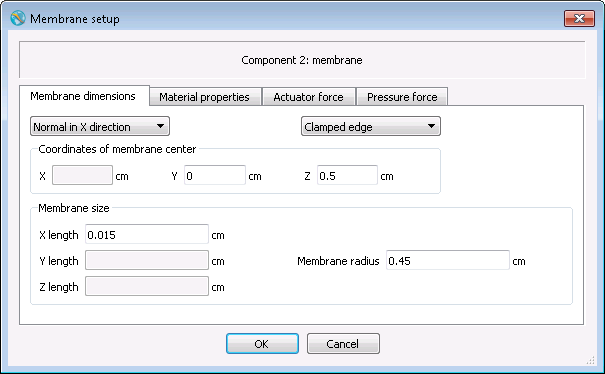
The mass density, Poisson’s ratio, and Young’s modulus of the membrane need to be specified in the Material properties tab in the corresponding input boxes.
The actuator data is specified on the Actuator force tab in the
window. In Force distribution area, insert the linear dimensions
(for rectangular membrane) or radius (for circular membrane) of the actuator
force area in the corresponding input boxes. To define a concentrated actuator
force at the membrane center instead, type zero for the area. In
Force-time function, select Sinusoidal and input the amplitude,
frequency (in Hertz) and initial phase (in degrees) of the force.
Alternatively, select and fill the table
with data for a piecewise linear function for the force. A time-dependent actuator force
may also be imported from a data file with a csv extension by clicking
on Import Values and loading the file.
The file must have two columns of data which represent time and force from
left to right.
Users may need to input the Reference pressure in the Pressure force tab depending on the
simulation case. The reference pressure represents the ambient pressure on the
membrane surfaces that are blocked by other components or are located outside
the domain. It is the fluid pressure at which the membrane has no deformation.
If both sides of the membrane are open (i.e., not blocked by any other
components) and are inside the computational domain, the reference pressure is
not necessary and has no effect on the simulation. By default, the reference
pressure is equal to the initial void pressure specified by PVOID. Users can also choose
Code calculated, in which case the reference pressure is calculated by the code as
the averaged fluid pressure on the membrane.
By default, fluid pressure force on membrane surfaces is considered to determine the membrane’s motion. If users decide to ignore the pressure force, in the Pressure force tab, select .

In the flsgrf.* file the membrane deflection is included as spatial
data. Its contours can be shown in 2D and 3D plots. Deflection of the membrane
center, where it is the largest, is included in the general history data and
can be viewed in both text and graphical formats. A positive/negative value of
the membrane deflection means that the deflection is in the positive/negative direction
of the coordinate axis to which the membrane is perpendicular. Note that the
geometry does not actually change in the mesh as the membrane deforms, in
accordance with the assumption that the deformations are small compared to the
size of the membrane.
See also
Theory manual section Elastic Membrane and Elastic Wall Model
Elastic Wall¶
The elastic wall model simulates deflection of elastic walls under pressure from surrounding fluid. An elastic wall is a geometry component of arbitrary shape, and its deflection at any point on the surface is in the direction normal to the surface and proportional to the hydraulic pressure, namely:
where:
- is the local deflection and is defined positive in the direction of the outer surface normal,
- is the adjacent fluid pressure,
- is a reference pressure,
- is the stiffness coefficient per unit area.
At the reference pressure, an elastic wall has no deflection. For the selection of the value for , please refer to the Theory chapter (Elastic Wall). The model allows for multiple elastic wall components with independent properties. Deflections are assumed to be small compared to the mesh size. If the local deflection is comparable to the local cell size, the validity of the model may be adversely affected.

To activate the elastic wall model, open and select Activate elastic membrane and wall model.
An elastic wall component can consist of one or more subcomponents and can be completely or partially inside the computational domain. Once the component representing the elastic wall has been created, go to and choose the Type of Simple Deforming Object as Rectangular Membrane or Elastic Wall. In the and click the Edit button to bring up the Elastic wall setup window. Insert values for the Stiffness coefficient per unit area and the Reference pressure and click OK to close the window.
The elastic wall deflection is included as Spatial data in the
flsgrf.* file. Its contours can be shown in 2D and 3D plots. Note that
the geometry does not actually change in the mesh as the wall deforms, in
accordance with the assumption that the deformations are small compared to the
computational cell size.
The model is compatible with most other models of FLOW-3D (e.g., heat transfer within elastic wall component is allowed) but an elastic wall component cannot be a porous media or a moving object. If a moving object collides with an elastic wall component, the latter is regarded as a non-moving rigid object in collision simulation.
See also
Theory manual section Elastic Membrane and Elastic Wall Model
Springs, Ropes and Mooring Lines¶
Springs, Ropes & Mooring lines are special objects that can be
used to connect General Moving Objects. Each of these object types have special properties that
can be defined to affect the motion of moving objects, and are described in the following sections.
These objects are created and edited in the Springs, Ropes & Mooring line widget that can be accessed
by clicking on the button,  , on the vertical toolbar.
, on the vertical toolbar.
Springs & Ropes¶
The GMO model allows existence of elastic springs and ropes which exert forces or torques on objects under coupled motion. The available types of objects in FLOW-3D include three types of linear springs: , , ; a ; and a . Users can define up to 100 springs/ropes in one simulation, and each moving object can be arbitrarily connected to multiple springs/ropes.
For a linear spring, the elastic restoring force is along the length of the spring and satisfies Hooke’s law of elasticity,
where:
- is the spring coefficient,
- is the spring’s length change from its free condition,
- is a pressure force when the spring is compressed, and a tension force when stretched.
A linear spring also has a block length due to the thickness of the spring coil. It is the length of the spring at which the spring’s compression motion is blocked by its coil and cannot be compressed any further.
A also obeys Hooke’s law. It generates tension force only if stretched, but when compressed it is relaxed and the restoring force vanishes as would be the case of a slack rope. Unlike the linear springs, this object does not have a block length.
A produces a restoring torque T on a moving object with fixed-axis when the spring is twisted, following the angular form of Hooke’s law,
where:
- is the spring coefficient in the unit of [torque]/degree, and
- is the angular deformation of the spring.
- It is assumed that there is no elastic limit for the springs and ropes, namely Hooke’s law always holds no matter how big the deformation is.
A linear damping force associated with a spring/rope and a damping torque associated with a
may also be defined. The damping force  is exerted on the moving object at the attachment point of the spring/rope.
Its line of action is along the spring/rope, and its value is proportional to the time rate of the spring/rope length,
is exerted on the moving object at the attachment point of the spring/rope.
Its line of action is along the spring/rope, and its value is proportional to the time rate of the spring/rope length,
Note the damping force for a vanishes when the rope is relaxed.
The damping torque can only be applied on an object with a fixed-axis rotation. Its direction is opposite to the angular velocity, and its value is proportional to the angular velocity value,
where (in rad/time) is the angular velocity of the moving object.
In this model, the three linear springs and objects can have one end attached to a moving object under coupled motion and the other end fixed in space or attached to another moving object under either prescribed or coupled motion. A , however, must have one end attached to an object under coupled fixed-axis motion and the other end fixed in space. It is assumed that the rotation axis of the object and the axis of the are the same. As a result, the torque applied by the spring on the object is around the object’s rotation axis, and the deformation angle of the spring is equal to the angular displacement of the object from where the spring is in free condition.
To create a spring or rope, go to tab and open the Springs, Ropes and Mooring lines widget. Click on the drop down arrow next to the green add button, and choose the option for .
To define a spring or rope, go to . Click on the spring icon to bring up the window. Right click on to add a spring or rope. In the combo box for , select the type for the spring or rope.
The type of linear spring selected effects whether it can be compressed or extended.
- : A spring that can be both compressed and extended. Its block length, by default, is 10% of its free length (the length of the spring in the force-free condition).
- : A spring that can only be extended. Its block length is always equal to its free length.
- : A spring that applies force only when it is compressed. When it is stretched, the force on the connected object vanishes. Its default block length is 10% of its free length.
On the Definition sub-tab enter Free Length (the length of the spring/rope in the force-free condition), Block Length, Spring Coefficient (required) and Damping Coefficient (default is 0.0). In the End sub-tab, define the connection points of the spring. End 1 and End 2 represent the initial coordinates of the ends of the spring/rope. Select the Component # and index of the moving object which the spring end is connected to. If the end is not connected to any moving component, i.e., is fixed in space, select None. In the X, Y and Z edit boxes, enter the initial coordinates of the spring’s end. Each end can be placed anywhere inside or outside the moving object and the computational domain. By default, the free length is set equal to the initial distance between the two ends.
Follow the same setup process used to create the . The only difference in the setup process is that the Block Length is deactivated because the does not have a minimum length. By default, the Free length is set equal to the initial distance between the two ends.
: On the definition sub-tab, enter Spring Coefficient (required, in unit of [torque]/degree) and Damping Coefficient (default is 0.0), and Initial Torque. The initial torque is the torque of the spring applied on the moving object at t=0. It is positive if it is in the positive direction of the coordinate axis which the rotation axis of the moving object is parallel to. In the End sub-tab, End 1 represents the spring’s end that is attached to a moving object under fixed-axis rotation, and End 2 the end fixed in space.
After the simulation is complete, users can display the calculated deformation and force (or torque) of each spring and rope as functions of time. Go to and check General history. In the variable list under Data variables, find the Spring/rope index followed by spring/rope length extension from free state, spring/rope force and/or spring torque. Then check or and click Render to display the data. Positive/negative values of spring force and length extension mean the linear spring or rope is stretched/compressed relative to its free state and the restoring force is a tension/pressure force. Positive/negative values of the torque of a torsion spring means its deformation angle (a vector) measured from its free state is in the negative/positive direction of the coordinate axis which its axis is parallel to.
It is noted that the spring/rope calculation is explicitly coupled with GMO motion calculation. If a numerical instability occurs it is recommended that users activate the implicit GMO model, define limited compressibility of fluid, or decrease time step.
Mooring Lines¶
The mooring line model allows moving objects with prescribed or coupled motion to be connected with other objects via compliant mooring lines. The end points of any mooring line can be defined as fixed anchors, attached to other moving objects or defined as a Free end. Multiple mooring lines are allowed in one simulation, and their connections to the moving objects are arbitrary. The mooring lines can be taut or slack and may fully or partially rest on sea/river floor. The model considers gravity, buoyancy, fluid drag and tension force on the mooring lines. The mooring lines are assumed to be cylinders with uniform diameter and material distributions, and each line can have its own length, diameter, mass density and other physical properties. The model numerically calculates the full 3D dynamics of the mooring lines and their dynamic interactions with the tethered moving objects.
The model allows the mooring lines to be partially or completely outside the computational domain. When a line is anchored deep in water, depending on the vertical size of the domain, the lower part of the line can be located below the domain bottom where there is no computation of fluid flow. In this case, it is assumed that uniform water current exists below the domain for that part of mooring line, and the corresponding drag force is evaluated based on the uniform deep water velocity. Limitations exist for the model. It does not consider bending stiffness of mooring lines. Interactions between mooring lines are ignored. When simulating mooring line networks, free nodes are not allowed.
To create a mooring line, go to widget and click on the drop down arrow next to the green add button, and choose the option for . Click on and enter x, y and z components of the deep water velocity (default value is zero). Click on Mooring Line # and enter the physical and numerical properties of the mooring line.
To create a mooring line, go to tab and click on the drop down arrow next to the green add button, and choose the option for .
In the Definition sub-tab, define the properties of the mooring line. The Free length is the undisturbed mooring line length. Linear Density is mass per unit length of the mooring line. Net Material Density is the mass density of the material that the mooring line is made from. Buoyancy is determined by multiplying the Linear Density times the length of the line and then dividing by the Net Material Density. Diameter is the effective or gross diameter of the mooring line that is used to provide the gross cross-sectional area of the mooring line when fluid drag force is calculated. The Normal Drag Coefficient and the Tangential Drag Coefficient are for the quadratic law of drag in the normal and tangential directions of the line, and their defaults are 1 and 0.3, respectively. The Spring Coefficient per Unit Length can be evaluated using following formula if it is known to users,
where  is Young’s modulus of the mooring line material, is the net cross-section
area of the mooring line.
is Young’s modulus of the mooring line material, is the net cross-section
area of the mooring line.
The Minimum Breaking Load (MBL) is the lowest amount of tension force required to break the mooring line. At each time step, the maximum tension force of a mooring line is computed and compared with the MBL. If the former is equal or greater than the latter, the mooring line breaks at the location of the maximum tension force. By default, MBL is a large number () and the mooring does not break.
The model uses a finite segment approach to calculate mooring line dynamics by dividing a mooring line uniformly into a certain number of discrete segments. The Number of Segments is an input parameter with a default value of 31. It is noted that too few segments reduces computational accuracy and may also cause numerical instability. Too many segments, however, may increase computational efforts obviously. The default value should be used if fluid flow does not vary significantly along the mooring line; otherwise the number of segments should be increased to account for the effect of the flow variation.
The attachment points of the mooring are defined in the End sub-tab. The inputs for End 1 and End 2 are used to define the initial locations of two ends of the mooring line. To attach the end of the mooring line to another object, go to Component # and select the index of component that the end is attached to. Select None if that end is anchored at a fixed point, or select Free end if the end is not attached to any components or fixed point. Then enter the initial x, y and z coordinates of the mooring line end in the corresponding edit boxes.
The Confined Space sub-tab is used to specify locations of river/sea floor or walls that confine the mooring line motion. For example, if Min Z is defined, then any part of the mooring line cannot go below Min Z. If the gravity is in –z direction, then Min Z can be regarded a sea floor where a slack mooring line can rest on. By default, there is no confinement to a mooring line motion. The Deep Water Velocity sub-tab is used to define the fluid velocity for calculating drag on portions of the mooring line outside of the computational domain. Enter the enter x, y and z components of the deep water velocity (default value is zero).
After the simulation is complete, users can display history data of each mooring line including length extension from free state (in unit of length), maximum tension force along the mooring line, and the tension forces at both ends in the x, y and z directions. For example, if end 1 of a mooring line is tethered at a platform, then the force of the mooring line applied on the platform in x, y and z directions can be found as x/y/z tension force at end 1.
Moving Components with Tangential Surface Velocity¶
| MAIN VARIABLES: | OBS: | IMO, UTOBS, VTOBS, WTOBS |
Users can define a tangential velocity at a geometrical component surface by
customizing function subroutine velobs.F90. This is particularly useful for
modeling moving webs. Note that the geometry of the component with this model
does not change or move with time, but rather, a tangential velocity is applied
at the component surface.
This model is separate from the General Moving Objects
model. It is simpler and requires less computation effort. It requires editing
of the input file (prepin.*) by selecting
.
When this type of component is defined, it is identified as having a moving surface by setting the variable IMO(N) = 2 in, where N is the component number.
For components with a flat geometry, only the appropriate value for the tangential motion need to be defined by setting UTOBS, VTOBS, WTOBS. Time-dependent values can be specified as well.
In order for this model to be able to accommodate complex geometries, the user
must specify the velocity at the component surface in function velobs.F90. This
function is called for each component identified by IMO(N) = 2. In this function subroutine, the user has
access to the component number, and x, y and z coordinates where the
tangential velocity is to be calculated. Note that these coordinates are the
closest cell intersections to the surface, and may not lie exactly on the
component surface.
Note
If the velobs.F90 subroutine is not modified, the velocities at the
component surface will be defined by UTOBS, VTOBS, WTOBS.
See also
- Input variable summary section Moving Web Components.
- Rotating Axisymmetric Components
- General Moving Objects for computing the motion of non-axisymmetric objects.
- Non-Inertial Reference Frame Motion for accelerating reference frames.
Rotating Axisymmetric Components¶
Tangential velocities in the form of a pure rotation may be assigned to solid, axisymmetric components such as cylinders, spheres and cones. Velocity components must be tangential to the surface so that these components always occupy the same physical space. These components must have the solid type and are defined just like regular components. Transformation, including magnification, rotation and translation, is allowed to transform these components to any locations and any orientations.
After the geometry of the axisymmetric component is defined, open :
Check the Enabled checkbox. Define two points on the rotation axis
(i.e., the central axis of the component after geometry transformation). Also
define the Spin rate. Note that this is the angular velocity, in
units of radians/time (typically rad/s).
Note
- The orientation of the axis does matter: objects rotate in right handed sense about the axis. Therefore, looking down the axis from point 1 to point 2, objects rotate clockwise for positive values of Spin rate.
- Objects must be axisymmetric about the spinning axis. If not, the model will not correct assign velocities to the entire surface of the component.
See also
- Impeller and Fan components: Fan and Impeller Model.
- General Moving Objects for computing the motion of non-axisymmetric objects.
- Non-Inertial Reference Frame Motion for accelerating reference frames.
- Moving Components with Tangential Surface Velocity for non-axisymmetric cases with simple motion.
Non-Inertial Reference Frame Motion¶
Non-inertial coordinate systems can experience non-zero linear accelerations and rotations. Activate the Non-inertial reference frame motion model in :
There are numerous Non-inertial reference frame options to choose from. The simplest, the Shake and spin model, simulates that the computational domain undergoes shaking and spinning motions only. Selection of this option, and selecting the adjacent Edit button produces the following window:
In this window the shaking motion (side-to-side oscillations in the x-coordinate direction only) and spin motion (spinning about the z-axis only) can be specified. Magnitude specifies the size of the oscillation (in units of acceleration) from the centerline, Frequency is the angular frequency of the sinusoidal motion, typically in rad/s. Spin rate is the angular velocity of the rotational motion about the x-axis, also typically in rad/s.
The Harmonic oscillations model allows users to define linear and angular motion in each of the 3 coordinate directions. Clicking on the Edit button next to Harmonic oscillations opens the following window:
In each of the 6 degrees of freedom, users control the acceleration Magnitude, Frequency (rad/time) and Phase angle offset. With this model, these values are constant throughout the simulation.
Alternatively, time-dependent data on accelerations can be directly If time-varying magnitudes are needed, time-dependent data can be entered by selecting one of the Tabular options. Details on these options are available in Smooth Tabular Motion and Impulsive Motion of Non-inertial Reference Frame.
Note
- Coriolis forces due to rotation can be accounted for with different degrees of implicitness. The degree of the implicitness is proportional to the value of Coriolis acceleration implicit weighting factor set in Implicit/explicit solver options in Numerics. When Coriolis acceleration implicit weighting factor = 0.0, the approximations are fully explicit. A fully implicit algorithm is used when Coriolis acceleration implicit weighting factor = 1.0. It is recommended to use the fully implicit method for better solution stability.
- The Initial gravity option is used to maintain gravity in the
direction in which it was oriented at regardless of the
motion of the reference frame. This is different from the regular
Gravity option, which maintains gravity in the same direction
in the reference frame.
See also
- Non-Inertial Reference Frame notation
- Rigid Body Dynamics Algorithm for Non-Inertial Reference Frame Model
- Non-Inertial Reference Frame Motion equations
- Rigid Body Dynamics for Non-Inertial Reference Frame
- Non-inertial reference frame application example: Centrifugal Casting
- Gravity
- Impulsive Motion of Non-inertial Reference Frame
- Non-Inertial Reference Frame Motion
- Smooth Tabular Motion
Smooth Tabular Motion¶
Non-inertial reference frames are specified in tabular form when one of
or is
chosen, then smooth (i.e., linearly interpolated) motion is specified by
clicking the Edit button, modifying the text file shown in the
Input file drop-down menu, with the default name
movin.inp. The data specified includes the time, x, y, and z linear
accelerations, x, y, and z angular velocities, and x, y, and z angular
accelerations.
If is chosen, the angular velocities specified are differentiated to determine the angular accelerations. If is chosen, the angular velocities are evaluated by integrating the angular accelerations, with the angular velocities specified at time zero being evaluated from the initial velocities.
See also
- Non-Inertial Reference Frame notation
- Rigid Body Dynamics Algorithm for Non-Inertial Reference Frame Model
- Non-Inertial Reference Frame Motion equations
- Rigid Body Dynamics for Non-Inertial Reference Frame
- Non-inertial reference frame application example: Centrifugal Casting
- Gravity
- Impulsive Motion of Non-inertial Reference Frame
- Non-Inertial Reference Frame Motion
- Smooth Tabular Motion
Note
The user interface writes the movin.inp file for the user and
automatically uses the correct format. It displays the data in the table.
Impulsive Motion of Non-inertial Reference Frame¶
Non-inertial reference frames are specified in tabular form in the file
movin.inp when option is activated
together with any of the Tabular options. The input can be typed
into a table that is open when clicking on the Edit button next to
the Tabular options. Impulsive motion can also be specified in the
table when Angular acceleration with impulsive motion or Angular velocity with
impulsive motion are selected above the table. For impulsive motion, the data
specified is the same as that for smooth motion (time, linear accelerations,
angular velocities, angular accelerations), except the impulse duration (the
Impulse length) is also specified. Also, the computational
time-step size to be used at the beginning of the impulse interval can be specified
in the column entitled Dt for better accuracy in capturing the
duration of the impulse.
By clicking the OK button the data is written into the file named in the
Input file edit box of the Tabular input window; its default
is movin.inp.
Any time entries with a non-zero impulse duration are taken to be impulsive, while entries with a zero impulse duration are taken to be smooth. Impulsive accelerations are superimposed on top of the smooth data.
In the movin.inp file shown in the table below, the z linear
acceleration is defined by both smooth and impulsive data. The impulse
duration is in the impldt column, and the specified time-step size is in the
delt column. Smooth accelerations are defined with points at t=0, t=9.5, and
t = 100. The z acceleration will be evaluated using a linear interpolation for
those points.
The z acceleration also has impulsive data specified at t = 2, t = 5, and t = 8, each with a pulse width of 1 sec. The impulses are superimposed on top of the smooth variation as shown in Figure 2 below.
| T | accx | accy | accz | omx | omy | omz | omdx | omdy | omdz | delt | impldt |
|---|---|---|---|---|---|---|---|---|---|---|---|
Figure 2: Graph of impulsive and smooth acceleration data
| t | = time |
| accx | = acceleration along x-axis [L/t2] |
| accy | = acceleration along y-axis [L/t2] |
| accz | = acceleration along z-axis [L/t2] |
| omx | = rotational velocity about x [Rad/t] |
| omy | = rotational velocity about y [Rad/t] |
| omz | = rotational velocity about z [Rad/t] |
| omdx | = rotational acceleration about x [Rad/t2] |
| omdy | = rotational acceleration about y [Rad/t2] |
| omdz | = rotational acceleration about z [Rad/t2] |
| delt | = time-step size [t] |
| impldt | = impulse duration [t] |
Note
The basic format of the movin.inp file is described in Smooth Tabular Motion.
For impulsive motion, the time-step size and the impulse duration are
included after the z angular acceleration. As with the smooth data,
“placeholders” must be entered for all data quantities, even if that data is
not used (i.e., enter zero for time-step size if it is not to be specified).
Center of Gravity for Non-inertial Reference Frame¶
The rotation center, or center of gravity (CG), for non-inertial reference frames
can be specified with a single ,  , and
, and  location or by using an external file
for a time-dependent location. In the latter case the CG location is specified in a tabular form in the
file (with the default name
location or by using an external file
for a time-dependent location. In the latter case the CG location is specified in a tabular form in the
file (with the default name cg.inp) with any of the Tabular non-inertial frame types.
The input can be typed into a table that opens after clicking on the Edit button next to
the Use external file to specify CG location check-box. This
checkbox needs to be selected to use the external file.
External files with the CG locations can also be loaded using this dialog.
Clicking on the OK button writes the data into the file
named in the Filename edit box of the Center of Gravity/Rotation Location
window; its default name is cg.inp.
Note
The basic format of the cg.inp file is described in Smooth Tabular Motion.
For importing external files with CG locations, the column delimiters can be Tab/Comma/Space
and must be specified in the Column delimiter drop-down. The file format
for cg.inp is similar to movin.inp.
See also
- Non-Inertial Reference Frame notation
- Rigid Body Dynamics Algorithm for Non-Inertial Reference Frame Model
- Non-Inertial Reference Frame Motion equations
- Rigid Body Dynamics for Non-Inertial Reference Frame
- Non-inertial reference frame application example: Centrifugal Casting
- Gravity
- Impulsive Motion of Non-inertial Reference Frame
- Non-Inertial Reference Frame Motion
- Smooth Tabular Motion
Rigid Body Dynamics¶
| MAIN VARIABLES: | XPUT: |
IACCF |
|---|---|---|
RBDATA: |
ALL VARIABLES |
The rigid body dynamics model is activated by setting IACCF=2 in the
input file prepin.*. In that case the RBDATA input
section must be present in the input file following the BCDATA
section.
See also
Rigid Body Dynamics for Non-Inertial Reference Frame, Coupled Rigid Body Dynamics in the Theory manual for a detailed description of the model, its use and related input parameters.
| Related variables: | MOTN: | IATYPE, other variables |
Non-inertial reference frame application example: Centrifugal Casting¶
Centrifugal casting involves a mold that is rotating around a fixed axis while molten metal is poured into the mold. One way to model this process in FLOW-3D is to use the non-inertial reference frame model. In this approach, the coordinate system is attached to the mold, the rotation of which is defined in tabular fashion as angular velocity versus time. Since the computational mesh is associated with the coordinate system, the mesh is also rigidly attached to the mold and rotates with it.
The model is activated on the Gravity and non-inertial reference frame dialog in panel. One of the most general options is to specify a Tabular angular velocity. This option allows general, time-dependent motion to be defined in all six degrees of freedom. To fill in the tabular data, first select the radio button next to the Tabular angular velocity field, then click on the adjacent Edit button. Then, specify the desired velocities throughout time, choose Save, and the close the dialog. Next, Define the Rotation Center (the point about which the reference frame rotates). Also, supply the initial direction of the gravity vector in the provided edit boxes.
If metal is entering at an inlet mesh boundary, i.e., at a fixed-pressure, flow-rate or velocity boundary, select Add counter-rotating flow component at inlet boundaries. This option will account for the fact that the incoming metal is not rotating with the mold. In the rotating coordinate system of the model, a flow component is added to the incoming metal in the direction opposite to the mold’s rotation as defined in Tabular input.
See also
- For another, more accurate approach to modeling processes like centrifugal casting, see General Moving Objects
- Non-Inertial Reference Frame notation
- Rigid Body Dynamics Algorithm for Non-Inertial Reference Frame Model
- Non-Inertial Reference Frame Motion equations
- Rigid Body Dynamics for Non-Inertial Reference Frame
- Non-inertial reference frame application example: Centrifugal Casting
- Gravity
- Impulsive Motion of Non-inertial Reference Frame
- Non-Inertial Reference Frame Motion
- Smooth Tabular Motion
- Parameters in Non-Inertial Reference Frame Namelist - MOTN
Particles¶
The Lagrangian particle model is a sub-grid model can be used to track the motion of spherical particles with different attributes and sizes smaller than a computational cell. The particles can be completely massless (i.e. marker particles), they could represent a solid sphere (i.e. mass particles), a spherical droplet of fluid (i.e. fluid particles) or a spherical bubble of gas (i.e. gas and void particles). The particle model was developed to track the motion of these objects in the computational domain and their interactions with other elements such as walls, fluid or void regions without the need of mesh refinement for explicit modeling of such objects. In this section, the general simulation setup process for certain particle classes will be described along with a short explanation of the parameters. More information on the details of the particle model can also be found in the Theory section.
See also
Setup and dependencies¶
The particle model can be accessed from . This window offers the option to enable/disable different particle classes by clicking on the Enable checkbox in the respective particle type tab, edit their name, define the maximum number of particles for each class and their properties.
Introducing particles in the computational domain is a two-stage process. First, the particle parameters must be defined in . Then Particle Source(s) and/or Particle Block(s) are defined in the particle widget in the tab. In the event of a restart simulation, it should be specified whether previous particle solution should be reset by checking the Ignore particle data in restart source file box.
Particle definition and physics¶
This sub-section focuses on the description of the properties and parameters of different particle types. The topics discussed involve Marker particles, Mass particles, Fluid particles, Gas particles, Void particles and User Class particles. Based on the different interactions that these particles may have with other objects in the computational domain, additional physical models may be required. These dependencies are further discussed under the following sections detailing each particle class.
Marker particles¶
Marker particles are massless particles that do not influence the flow and move with the speed of the surrounding fluid. Hence, they can also be considered as a visualization of fluid molecules. By introducing marker particles in the computational domain, one could, in principle, visualize pathlines i.e. the paths that individual fluid molecules follow.
To enable the use of Marker particles, navigate to and in the Marker tab click on the Enable checkbox. Then proceed with defining the Title of the particle class (optional) and set the Maximum allowed number of marker particles.
The properties of marker particles can be given in Particle class properties. For marker particles we can define the Host fluid as both Fluid #1 and #2 (or void), as Fluid #1 only or as Fluid #2 (or void). The Host fluid determines the fluid regions where the marker particles can exist. If marker particles are allowed to be in the void, they do not move; remaining stationary until swept by fluid. Exiting the Host fluid will cause the marker particles to disappear from the computational domain.
Marker particles can be given a Diffusion coeffiecient, which describes the rate at which the particles diffuse in fluid, and an Inverse Schmidt number , which determines the rate of turbulent diffusion. In order to set the Inverse Schmidt number, a turbulence model needs to be activated. Turbulence models can be enabled at .
Marker particles can be set to stick to a solid object following a collision. To enable this option, click on the Stick to walls checkbox.
Finally, the Ignore particle data in restart source file option determines whether to either take into account the particle information from the results file of the previous simulation, when unchecked, or reset their position based on what is defined in the Marker tab, when checked.
See also
Mass particles¶
Mass particles can be considered as solid spheres with a specific diameter and density. Therefore, mass particles can be readily used to model the motion of suspended solids in the computational domain. Other material particle classes are based on the mass particle class, hence some of the properties of mass particles discussed in this section are common with other particle classes.
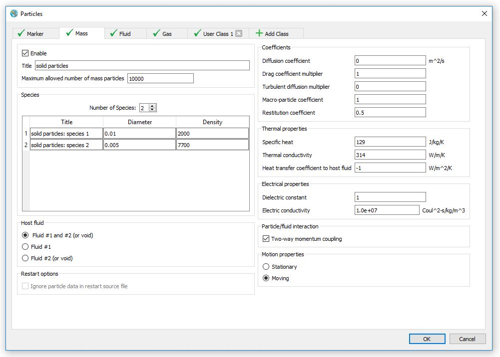To introduce mass particles, open the particle window which can be found in and in the Mass tab click on the Enable checkbox.. Then enter a name for the particle class in the Title field (optional) and specify the Maximum allowed number of mass particles.
For mass particles it is also necessary to enter the Number of Species and their properties. The Number of Species determines the total number of different types of particles in terms of Diameter and Density. Once the Number of Species has been set, then the values for Diameter and Density can be entered in the table.
The various mass particle properties can be entered in the Particle class properties section. Similarly to other particle classes, a Host fluid has to be defined for mass particles. The available choices are Fluid #1 and #2 (or void), Fluid #1 only or Fluid #2 (or void) only. The Host fluid practically represents the fluid regions where the mass particles can exist. If a particle escapes the Host fluid, then it is removed from the computational domain.
In the Coefficients section, various parameters that affect particle behavior can be entered:
- The Diffusion coefficient is a metric that specifies the rate at which particles diffuse in fluid.
- The Drag coefficient multiplier is a variable that can be manipulated to adjust the fluid drag force acting on the particles. By default, the value of Drag coeffiecient multiplier is set to 1 which implies that the domain is populated with spherical particles. If particles have a different morphology, then their drag behavior can be modeled by varying the value of the Drag coefficient multiplier.
- The Inverse Schmidt number describes the rate of turbulent diffusion. In order to enter a value for the Inverse Schmidt number, a turbulence model needs to be activated. Turbulence models can be enabled at .
- The Macro-particle coefficient is a variable used for cases when the particles introduced in the simulation represent a cloud of several indentical particles. For example, setting the Macro-particle coefficient to 100 implies that each modeled particle is a representation of 100 smaller particles whose total volume equals the volume of the modeled particle.
- Finally, the Restitution coefficient controls the behavior of the particles during collision events with solid objects and walls. Typically, the values of Restitution coefficient range from 0 to 1. A Restitution coefficient value of 1 is indicative of an elastic collision while a Restitution coefficient value of 0 implies that a plastic collision takes place. If the value of the Restitution coefficient is set to -1 then the particles will stick to the walls.
By default, mass particles are affected by the fluid flow but their motion does not alter the flow field. To model flow perturbations that might occur due to the presence of particles, under Particle/fluid interaction, click on the Two-way momentum coupling checkbox.
Moreover, mass particles can exchange thermal energy with their Host fluid. In order to model this process, first, activate the heat transfer model in and click on the Fluid to solid heat transfer. This enables the particle Thermal properties to be specified. The required properties are Specific heat, Thermal conductivity and, optionally the Heat transfer coefficient to host fluid. If the value of the Heat transfer coefficient to host fluid is set at -1, then the effective heat transfer coefficient is automatically calculated based on Nusselt number correlations for solid spheres. If any non-negative value is given, then it remains constant for all host fluids i.e. Fluid #1 and/or Fluid #2 (or void).
Electrical forces for particles can also be accounted for. Particle Electrical properties can be entered after navigating to and clicking on the Activate electric potential checkbox. If particles have any dielectric properties, then the Dielectric constant needs to be specified. If the particles carry an electric charge, then its value can be entered for specific Particle blocks or Particle sources in the particle widget of the tab. Modeling dielectrophoresis is also possible through by defining the guilabel:Electric conductivity for the particles.
Motion properties can also be given for mass particles. This allows to change the motion state of the particles between Stationary and Moving.
Finally, the Ignore particle data in restart source file option determines whether to either take into account the particle information from the results file of the previous simulation, when unchecked, or reset their properties based on what is defined in the Mass tab, when checked.
Note
The particle model is used for modeling spherical particles. In cases that involve particles of a different shape:
- Set a particle Diameter so that it reflects the volume of the non spherical particles to be modeled.
- Adjust the value of the Drag coefficient multiplier in order to better capture the drag behavior of the changed morphology.
Fluid particles¶
Fluid particles can be thought of as droplets of Fluid #1. Fluid particles can be used for a plethora of simulations involving modeling fluid volumes smaller than a computational cell such as fluid sprays, additive manufacturing, welding etc.
To enable the use of fluid particles go to and in the Fluid tab check the Enable box. Optionally, a Title can be given for the particle class. It is also important to enter the Maximum allowed number of particles that will be modeled. Similarly to mass particles, the Number of Species has to be defined for fluid particles. However, in the species table, only the particle Diameter can be edited since fluid particles automatically inherit the density of Fluid #1, unless a density transport option is used ().
It is important to note that fluid particles exist in Fluid #2 (or void) and, only if they are solidified, in fluid #1 as well. Upon contact with Fluid #1, fluid particles in liquid state are automatically converted to Fluid #1. Fluid particles can also evaporate but modeling their evaporation is only compatible with the Two-fluid phase change model which can be activated in .
Under Particle class properties, the parameters for fluid particles can be specified. In terms of Coefficients, fluid particles behave similarly to mass particles. Nevertheless, there are several differences.
- First of all, it is important to note since that the Diffusion coefficient, Drag coefficient multiplier, Inverse Schmidt number as well as the option for Two-way momentum coupling apply for liquid fluid particles in Fluid #2 (or void) and solidified fluid particles in both Fluid #1 and Fluid #2 (or void).
- Moreover, when the values for the Restitution coefficient are set between 0 and 1, fluid particles behave similarly to mass particles in their collisions with solid objects. However, if the Restitution coefficient is set to -1, then the default behavior for fluid particles will be to turn into Fluid #1 upon impact.
- The definition of this coefficient is further defined for cases where the fluid may solidify. By changing the values for the Solidified restitution coefficient it is possible to alter the collision behavior of solidified fluid particles. In order to edit this parameter, both Heat Transfer (accessible through ) and Solidification (accessible through ) models must be activated.
For applications where thermal energy exchange between the particles and the fluid is of interest, fluid particles inherit their properties directly from Fluid #1 but it is also possible to set the Heat transfer coefficient to host fluid under Thermal Properties once the heat transfer model is enabled from . For the default value of -1, the Heat transfer coefficient to host fluid is computed by the solver.
When the Electro-Mechanics model is activated from , the particle Electrical Properties can be edited. Similarly, to their Thermal properties, fluid particles inherit their properties from Fluid #1. An Electric charge can also be given for fluid particles under State for any Particle block or Particle source in the particle widget found in the tab.
Finally, the Ignore particle data in restart source file option determines whether to either take into account the particle information from the results file of the previous simulation, when unchecked, or reset their properties based on what is defined in the Fluid tab, when checked.
Gas particles¶
Gas particles are used to simulate spherical bubbles of gas and their interactions with fluid, voids and solid objects.
Gas particles can be enabled by navigating to and clicking the Enable checkbox in the Gas tab. A Title can, optionally, be given for the particle class. The Maximum allowed number of particles that will be modeled can also be specified. Similarly to mass particles and fluid particles, it is necessary to set the Number of Species for gas particles In the species table, set the particle Diameter for each class.
In the Particle class properties section, the various parameters for gas particles can be given. Similarly to other particle classes, it is necessary to define the Host fluid for gas particles. The available options are Fluid #1 and #2 (or void), Fluid #1 only or Fluid #2 (or void) only. Practically, the Host fluid describes the fluid regions where the gas particles can exist. Depending on the type of Host fluid, when the particles enter a void region they may be automatically removed from the computational domain or they may add their volume to that void.
As far as Coefficients, Thermal properties, Electrical properties and Two-way momentum coupling are concerned, gas particles behave exactly as mass particles. Please refer to the Mass particles section for more details.
What differentiates gas particles from other particle classes, is their ability to carry gas related attributes. Gas related attributes can be specified in the Void properties section. More specifically, the values of Gamma and the Specific gas constant can be entered. This links the pressure, volume, mass and temperature of the gas particles so that they follow the ideal gas equation of state.
In the event that any type of bubble model is activated from , gas particles can interact with void regions and add their volume to them by clicking on the Add particle volume to voids checkbox.
Finally, the Ignore particle data in restart source file option determines whether to either take into account the particle information from the results file of the previous simulation, when unchecked, or reset their properties based on what is defined in the Gas tab, when checked.
Void Particles¶
Void particles can be considered as specialized gas particles used for tracking the movement of minute pockets of air after the collapse of void regions.
To activate void particles move to and after, enabling a bubble model, click on the Track collapsed bubbles with void particles checkbox. The different particle parameters can then be set by clicking on the Advanced button.
Void particle options are similar to those of gas particles. However, there are several differences that need to be addressed. More specifically, void particles can only be of one species since their size, density along with their temperature depend on the characteristics of the collapsed bubble. Also due to their nature, the Host fluid for void particles is set to Fluid #1. Moreover, void particles cannot have a previously defined Macro-particle coefficient since the number of the void particles generated can only be determined by the size of the bubble before collapsing.
When checked, the Dynamic pressure and size option will cause void particle volume, mass and pressure to behave according to the ideal gas equation of state. When Intensification pressure is defined for metal casting filling simulations, Fill fraction is used as the termination criterion and Dynamic pressure and size option is selected, then at the end of filling fluid pressure is reset to the intensification pressure and the void particle size is adjusted accordingly using the void particle equation-of-state.
By default, void particles are affected by the fluid flow but their motion does not alter the flow field. To model flow perturbations that might occur due to the presence of particles, under Particle/fluid interaction, ensure that the Two-way momentum coupling checkbox is checked.
Finally, the Ignore particle data in restart source file option determines whether to either take into account the particle information from the results file of the previous simulation, when unchecked, or reset their properties based on what is defined in the Void particles window, when checked.
User-customizable particles¶
In order to further expand on the potential of the particle model, new particle classes can be created as User Class particles.
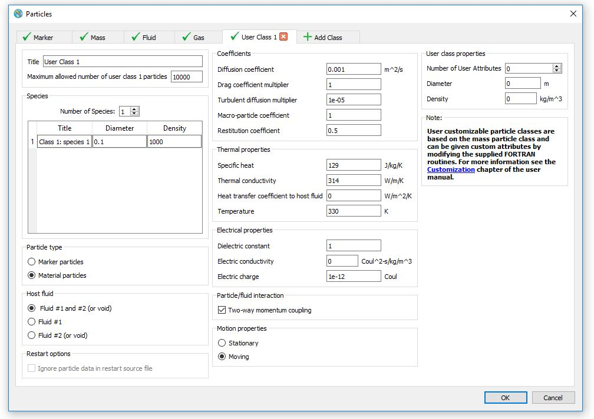To add User Class particles go to and click on the Add Class tab. This will generate a new tab where the properties of the User Class particles can be specified. Similarly to other particle classes, a Title can be optionally given for each User Class of particles. The Number of Species along with their respective Diameter and Density need to be entered as well.
As far as Particle class properties are concerned, User Class particles can be separated, based on their Particle type, into Marker particles which are based on the marker particle class and Material particles which are based on the mass particle class. Please refer to the description of each class for a more thorough explanation of their properties.
The Ignore particle data in restart source file option determines whether to either take into account the particle information from the results file of the previous simulation, when unchecked, or reset their properties based on what is defined in the User tab, when checked.
Both available Particle types, i.e. Marker particles and Material particles can be customized to have additional user-defined properties.
Note
New particle attributes can only be given through customizing the supplied FORTRAN routines for User Class particles. However, the details of this process are beyond the scope of the current section. Please refer to the Customization section for more information.
See also
Particle blocks and sources¶
After defining the general particle properties in the Physics wideget, the particles can be introduced by either Particle Block(s) and Particle Source(s) lusing the Particles widget () The process for adding Particle Source(s) and Particle Block(s) is common to all particle types. In the tab, click on the particle icon () to bring the particle widget. A Particle Block can be thought of as a rectangular box, inside which the particles are generated. To create a Particle Block, on the Blocks tab, click on the plus icon (). Then, define the Particle Class and, optionally, provide a name for the block. Once a block has been created, particles of the selected Class will be generated within its extents. The extents of the Particle Block can be defined under the Definition tab, in the Limiters section. In the event that no Limiters are set, the block will extend up to the limits of the computational domain. The number of particles for each Particle Block can also be given in the Definition tab, under the Particle Distribution section. Users can enter either the Total number of particles in the Particle Block or the Number of particles in each direction by choosing the Total or Direction from the Particle distribution menu, respectively. The Generation of particles may follow a Random or Uniform pattern based on the option selected in the Generation menu.

The Initial tab contains the initial conditions for the generated particles. More specifically, initial particle velocities for each direction can be entered in the Velocities section with the exception of marker particles that automatically inherit the velocity of the fluid. In the State section, the Initial pressure, Initial Temperature and Electric Charge can be specified when applicable. The Pressure Usage and Temperature Usage menus offer the option to either accept the initial pressure or temperature definition from the Particle Block or assume the values of the Local Fluid. In the event that the heat trasnfer model is turned off the particle temperature will be equal to the Reference temperature.
Finally, the Concentration tab allows to determine the initial ratio between particle species, e.g. for a simple case of 2 particle species a Concentration of 1 for the first particle species and 3 for the second means that 25% of the particles generated will be of the first species and 75% will be of the second. By default, the concentration for each species is set to 1 even if there are multiple particle species. Hence, the default behavior is generate equal amount of particles for each species.
A similar process applies to creating a Particle Source. To create a Particle Source, on the particle widget, select the Sources tab and click on the plus icon (). The settings for a Particle Source are similar to those for a Particle Block. However for a Particle Source, in the Definition tab under Particle distribution one could define the Rate of generation which determines the number of particles per second that will be generated by the source. Additionally, a Particle source can move at prescribed translational and rotational velocities. to define the motion of a Particle Source on the particle widget, select the Sources tab and then navigate to the Moving tab. First, the location of the reference point needs to be defined. The location of the reference point can be defined in the Initial location box as a set of coordinates about which translational or angular velocities will be applied. Next, the Translational velocity and Angular velocity can be defined for each coordinate. Tabular input, i.e. values as a function of time, is available for both Translational velocity and Angular velocity. However, the location of the reference point cannot be defined as a function of time.
Probe particles¶
Probe particles can be considered as history probes with particle properties. They can be used to provide information from the perspective of a particle of any defined Particle Class or Species. Probe particles can be added in the domain using the Particles widget. Click on the particle icon (), navigate to the Probes tab and click on the Plus button () to add a probe particle. Then, define the Particle Class and, optionally, provide a name for the probe. If the Particle Class represents a material particle i.e. Mass, Fluid, Gas or User particles, the Species represented by probe must first be selected from the drop-down list in the Initial tab. For all particle classes the starting coordinates of the particle must be specified in the Initial location box of the Initial tab. Moreover, the initial velocities for each direction should be defined in the Velocities. If the probe particle refers to a material Particle Class, define its initial conditions in the State box. These include, the particle’s Initial pressure Initial temperature and Electric charge if applicable. Finally, probe particles have a restart simulation option of Ignore particle data in restart source file to either take into account the particle information from the results file of the previous simulation, when unchecked, or reset their position based on what is defined in the Probes tab, when checked.
Note
- When a probe particle leaves the domain it is converted to a stationary history probe at its last location in the grid. The probe continues reporting solution quantities but its x, y and z coordinates are now fixed in time.
Particle output¶
The output of the particle model varies between particle classes, but generally includes
particle-specific quantities written to Restart and Selected data catalogs, integrated
quantities written to the General History catalog and diagnostics written to the preprocessor
and solver summary files prpout and hd3out, respectively.
The particle specific data includes particle locations and velocities, particle life time since their creation, and various physical attributes (for material particles) such as density, size and temperature. Pressure is added for particles of the Gas and Void classes. Each particle in a class has a unique id as well as a tag telling which initial particle block or source it came from. Each particle class can be viewed individually or in combination with other particle classes.
The General History data includes the total particle counts in each class and the particle
counts of each species crossing flux surfaces (see Baffles) and located inside sampling
volumes at any given time, if those diagnostic objects are defined. The output also includes
the particle count of each species created at each particle source, which is useful
when a distribution of species at a source is defined. Similarly, the number of particles
of each species created at the initial particles blocks at the beginning of simulation is written
to the preprocessor summary file prpout.
Along with the particle counts, the total volume and mass for material particles are also output at flux surfaces, in sampling volumes and for the whole computational domain.
Finally, the long diagnostic prints to the solver summary file hd3out include the total
current particle count in each class and the number of discarded particles, e.g., those that left
the domain through an outflow boundary. For the Fluid particle class, the number of particles
converted to fluid is also written out, and the output for the Gas and Void particles includes
the number of each type that escaped to void.
Limitations¶
Although some of the limitations of the Lagrangian particle model have been discussed previously, a short description of each will be given in this section in order to make the description of the model more inclusive. Some of these limitations are common to all particle classes and are due to the nature of the model itself while others are limited only to a particular particle class. More specifically:
- Particles do not displace fluid. This limitation applies to all particle classes and implies that the volume of fluid in the domain will remain unchanged, independent of the number of particles in it.
- Particles can only be active the specified host fluid. Once the particles exit the specified host fluid, they are automatically removed from the computational domain.
- Particles can only diffuse in Fluid #1 (or Fluid #2) but not in voids. This is a limitation associated with the particle diffusion model and implies that diffusion effects can only be modeled when particles are located in Fluid.
- Particles do not interact with each other. No inter-particle effects such as collisions between particles can be modeled.
- When the value of the heat transfer coefficient is manually set, it remains constant for all fluids where the particles may exist in.
- Particles of the Marker class do not have any mass attributes. In that sense, marker particles can be considered as individual fluid molecules.
- Particles of the Marker class cannot be given initial velocities in their Particle Block or Source definitions. Hence, they rely only on fluid motion to move inside the computational domain.
- Particles of the Mass, Fluid, Gas and User classes should be smaller than the size of a computational cell. This limitations stems from the previously mentioned inability of particles to displace fluid. Hence, in cases where particle volume is equal to or larger than the size of the computational cells, fluid volume errors may occur.
- Particles of the Fluid class can only have Fluid #2 (or void) as their host fluid unless solidified. This is a limitation inherent to the nature of fluid particles which convert to Fluid #1 upon contact with a Fluid #1 fluid region.
- Particles of the Fluid class can solidify and evaporate. However, evaporation modeling is only compatible with the two-fluid phase change model.
- When particles of the Fluid class are added to added to the bulk fluid through a free surface, if the fluid fraction of that cell is below 1E-6, the fluid from the particles may be reported as volume error. This is due to the fact that FLOW-3D does not capture fluid fractions of less than 1E-6. There is a mechanism to accumulate that error and put it back into the cell when it exceeds the cutoff, but in the case of a a finite number of particles with small volume, the threshold may not be reached.
- Particles of the Void class can only have Fluid #1 as their host fluid. This limitation is caused by the fact that void particles can only be created after Fluid #1 begins to occupy cells that were previously a void region.
For more information on the limitations of the particle model please refer to the Theory section of the manual.
See also
Porous Media¶
Porous media models are used to simulate flow through solid objects in which there are interconnected void spaces through which fluid can flow. These models can represent a wide range of permeable objects (e.g. soil, rocks, filters, packed beds, paper). This model is implemented as a sub-grid process by applying volume averaged quantities to the porous region and calculating bulk fluid velocity and pressure drop with one of the available porous media drag models in FLOW-3D . A full description of the governing equations in the porous media model is provided in the theory section (see Porous Media Models).
The porous media model is activated entirely within the tab. This is done by creating porous media geometry objects and assigning them porous properties. Porous geometry objects are created within the geometry widget as a Porous component type. For each individual porous component type, the user will define properties of the porous media. The Drag model specifies the method used by FLOW-3D to calculate the drag in the porous region. This should be the first property defined as its selection will affect the availability of other properties to be defined within the porous properties window. Note that separate drag models and porous properties can be defined for each individual component within the tab.
Creating a Porous Component¶
The first step in setting up a simulation with porous media is to define the shape of the porous object with subcomponents (see Creating Subcomponents) that are added to a Porous component type. The porous component can be specified in the tab in two equivalent ways:
When adding the subcomponment, choose to add it as a New Component. In the Add Component option window, choose the Porous component type.
An existing component can also be changed to a Porous component through the component Type menu in the geometry widget.
Porous Component Properties¶
Once the Component Type is set to Porous, the parameters on the component branch become active.
- Porosity: The ratio of the open volume to the total volume (the
volumetric porosity). The porosity must be a positive number or the
component will be treated as a solid. A porosity of 0.0 represents solid
(closed) geometry and a value of 1.0 represents empty (open) geometry. The
default porosity is 0.5. Use multiple porous components to define complex
regions with spatially-variable porosity. Porosity is dimensionless (open
volume per total volume), and cannot be time-dependent. Note: If the porosity
is less than 1% (0.01 default) the variable
EPScauses the porosity to be set to zero.EPSmust be set to a lower value than the porosity assignment. - X-, Y-, and Z-Direction Porosity: The porosity can be specified independently in each coordinate direction, allowing for the simulation of anisotropic materials with preferential flow paths, as in tube bundles. The units of the directional porosity are open area per total area (dimensionless). The volumetric porosity must be between the maximum of the directional porosities and one.
- Capillary Pressure: The average, constant additional resistance or enhancement to flow in the media as a function of capillary (surface tension) effects. The capillary pressure has units of pressure (force/area, mass/length/time2). More detail on the different capillary pressure models is given below in Capillary Pressure Models.
- Specific Surface Area: The total surface area per unit volume of the bulk media. This is used only for heat transfer and defaults to 1.0. Units of area per volume (length-1).
- Drag model: Choose the drag model to be applied in the porous media regions. Options are available for both saturated and unsaturated flow. The choice of the drag model affects the dependency of the remaining properties within the Porous properties window.
- Darcian / Non-Darcian Permeability: The porous media linear and non-linear permeabilities. The coefficients are used only when the Permeability dependent saturated drag model is active.
- Drag Coefficient A / B: Coefficients that describe the magnitude of drag experienced by fluid in the media. The values and units of these parameters depend on the selected drag model (e.g., Forchheimer saturated drag).
- Minimum Saturation: The volumetric fraction of porosity that cannot be drained. Usually a function of capillary surface tension effects. Defaults to 0.0; dimensionless.
- Maximum Saturation: The maximum fraction of porosity that can be filled. This is less than one when there are void regions that can’t be occupied by fluid because they are completely enclosed by solid or because of bubble entrapment. Defaults to 1.0; dimensionless.
- Unsaturated Drag Function: Selects a drag (i.e., permeability) relation for unsaturated porous media. Options are described in detail below in Unsaturated Porous Media Drag Models.
- Unsaturated Pressure Curve: Selects whether the full wetting and draining hysteresis relationship should be used, or if a simpler wetting or draining curve should be used.
- Unsaturated Capillary Pressure Effects: Choose between options for Simplified Capillary Pressure and Van Genuchten Capillary Pressure to specify capillary pressure as a function of the local saturation and one or more hysteresis functions.
- Simplified Saturation at Max Capillary Pressure: When the simplified capillary pressure model is used, this term describes the absolute saturation (dimensionless) below which the capillary pressure magnitude is greatest and constant.
- Simplified Maximum Capillary Pressure: The capillary pressure matching the absolute saturation when using the simplified capillary effects model. Units of pressure (force/area, mass/length/time2).
- Pressure Curve Fitting Coefficient: A dimensionless exponent used to describe the relationship between saturation, drag and capillary pressure in unsaturated media when using the power law or exponential drag models.
- Wetting and Draining Curve Parameters: The wetting and draining curve parameters used with the Van Genuchten capillary pressure effects model.
Porous Media Drag Models¶
The selection of the porous media drag model is a critical step in the simulation setup. The selection of the drag model will depend on the nature of the physical scenario being modeled, and will affect how all other porous media properties will be defined. From the Drag model selection menu the user can choose between an option for No Drag and options for both saturated and unsaturated porous media. Choosing No drag maintains a sharp interface in the porous media with constant capillary pressure but no drag – basically, the fluid accelerates when it moves through the porous medium (due to mass conservation), but no additional drag is computed.
The three Saturated Porous Media Drag Models in FLOW-3D are as follows:
The three Unsaturated Porous Media Drag Models in FLOW-3D are as follows:
- Power Law Unsaturated Drag Model
- Exponential Unsaturated Drag Model
- Mualem’s Unsaturated Drag Model for Relative Permeability
Calculating the Porous Media Drag Coefficient¶
The section provides details on how each of the porous media drag models are implemented in FLOW-3D . In all cases, the resistance to flow in a porous medium is represented in the Navier-Stokes equations as a drag term proportional to the velocity. Note that the drag coefficient here has units of [1/t], and is calculated based on the selection of
the Drag model:
The drag term () is added to the right side of the momentum balance (see Momentum Equations). Here  is the microscopic flow velocity, which is also reported by the postprocessor. Saturated macroscopic and microscopic velocities are theoretically related by the media effective porosity via the equation:
is the microscopic flow velocity, which is also reported by the postprocessor. Saturated macroscopic and microscopic velocities are theoretically related by the media effective porosity via the equation:
(7)¶
The drag coefficient  is calculated for each cell at each time step and converted with
is calculated for each cell at each time step and converted with  (the time-step size) as output into the dimensionless quantity :
(the time-step size) as output into the dimensionless quantity :
where is the time step size for the current computational cycle.
This value always varies between 0.0 (infinite drag – no fluid flow) and 1
(zero drag – infinite permeability). This quantity is plotted in the
output as and is called the normalized drag coefficient.
Saturated Porous Media Drag Models¶
Darcian Saturated Drag Model¶
The basis of the Darcian saturated drag is the equation of Henry Darcy, in which the unidirectional flow rate through porous media is linearly proportional the applied pressure difference:
(8)¶
where:
- is the apparent velocity (i.e., the volume flux of fluid through the material)
- is the intrinsic permeability
- is dynamic viscosity
- is the pressure gradient within the porous material
The permeability can be expressed in terms of the drag coefficient
according to:
(9)¶
which, combined with Eq. (7) and Eq. (8) is
(10)¶
Darcy’s original observation holds when the pore Reynolds number
is less than 1, and is usually reasonably accurate up to of 10,
while the addition of the quadratic term provides better accuracy when the
velocity of fluid in the media is such that exceeds 10. The
quadratic term is discussed in the following sub-section on the
Forchheimer Saturated Drag Model. For the Darcian model,
in (10) is specified directly as Drag Coefficient A in
.
Forchheimer Saturated Drag Model¶
The Forchheimer equation describes losses in porous materials as a combination of viscous (linear) and form (quadratic) drag terms. The form drag becomes important as the pore Reynolds number () exceeds 10. In Forchheimer’s equation, the pressure drop is given:
(11)¶
where:
 and
and  are coefficients defined by experimental data,
are coefficients defined by experimental data,- is the apparent velocity (i.e., the volume flux of fluid through the material),
- is the pressure gradient in real space within the porous material.
The linear (Darcian) and quadratic (non-Darcian) flow loss equations are
combined into a single expression for :
where:
- is the linear drag coefficient (Drag Coefficient A),
 is the non-linear drag coefficient (Drag Coefficient B),
is the non-linear drag coefficient (Drag Coefficient B),- is the porosity,
- is the viscosity,
- is the fluid density.
Combining with the pressure loss equation (11) yields the linear and quadratic contributions to pressure loss per unit length as a function of bulk velocity:
(12)¶
and are related to the experimentally determined coefficients and by:
(13)¶
Equation (13) can be used to curve-fit pressure loss
testing data, where and are media-specific loss
coefficients. When test data is unavailable, they can be estimated:
where:
- is a constant, typically of order 180,
 is a roughness factor typically ranging between 1.8 and 4.0 (representing smooth through rough fibers), and
is a roughness factor typically ranging between 1.8 and 4.0 (representing smooth through rough fibers), and- is the average equivalent spherical diameter of the fibers, dendrites, or particles of the porous media. For randomly packed spheres, the Ergun equation uses = 150 and = 1.75. Test data, where available, will provide better accuracy.
Permeability Dependent Saturated Drag¶
Permeability dependent saturated drag model is nothing but Forchheimer Saturated Drag Model, with porous media permeabilities as the input, instead of Drag Coefficient A and Drag Coefficient B. It provides a convenient way of defining saturated flow drag models, if the porous media permeabilities are known.
In the Forchheimer’s pressure drop Eq. (11), the
coefficients and can be related to the porous media
permeabilities as:
where:
- is the viscosity,
- is the density,
- is the Darcian permeability
 is the non-Darcian or inertial permeability.
is the non-Darcian or inertial permeability.
Combining with Eq. (13), the drag coefficients
and can be related to Darcian permeability and
non-Darcian permeability by:
If the non-Darcian permeability is not provided, the Drag Coefficient B will be set to 0, and the drag model is reduced to Darcian Saturated Drag Model.
Note
The shallow water model is a 2-D simplification that assumes hydrostatic pressure. It can be combined with porous media, with some caveats. Details are given in the Shallow Water / Porous media section.
Unsaturated Porous Media Drag Models¶
Drag losses in unsaturated porous components, like capillary pressure effects, are primarily a function of saturation, as well as intrinsic characteristics of the media like pore size, tortuosity, and microscopic geometry. An unsaturated drag model can be selected for each component when the Drag Model is selected to be unsaturated flow. Within the property for Unsaturated Drag Function the user can choose between Power Law, Exponential, or Mualem. The models are described in the theory section (see Drag Calculations in Unsaturated Flows)
Note
- The Exponential unsaturated drag model and the Simplified unsaturated capillary pressure model both use the same value of Pressure Curve Fitting Coefficient.
- See Input Variable Summary section Component Properties: Porous Components for associated input file values.
Capillary Pressure Models¶
Saturated Capillary Effects in Porous Components¶
Saturated flow in porous media is characterized by a sharp interface between
fully saturated and fully unsaturated regions. When a No Drag or
one of the Saturated models are selected for the Drag Model
property, Capillary Pressure (defined in ) is a user-defined
constant that is applied at the interface between the fully saturated and
unsaturated regions only, i.e., in cells where 0.0 < fluid fraction < 1.0.
The sharp interface within saturated porous media is computed with FLOW-3D ’s VOF
algorithms to maintain accurate interface shapes.
The Capillary Pressure is subtracted from the void pressure at the sharp fluid interface within the porous media. It is defined for each component and is positive when the media is wetting and negative when the media resists wetting. While the best way to determine the interface capillary pressure is via laboratory experiment, the following relation estimates the capillary pressure within a porous medium:
where:
- is the surface tension of the fluid,
- is the average contact angle between fluid and solid in a pore (<
 is wetting, > is nonwetting), and
is wetting, > is nonwetting), and - is the average pore diameter within the porous material.
Unsaturated Capillary Effects in Porous Components¶
The capillary pressure model in porous media can be used only in one-fluid, free-surface flows. There are two models that describe the relationship between saturation and capillary pressure: the Simplified capillary pressure model (IVG = 0) and a more thorough Van Genuchten capillary pressure model [NB88] (IVG = 1).
Both models allow the user to specify capillary pressure as a function the local saturation and one or more hysteresis functions. The user may include or ignore hysteresis effects in each component by changing the Unsaturated Pressure Curve option under :
- Wetting & Draining – full hysteresis (IOPCFD = 0),
- Wetting only (IOPCFD = 1), or
- Draining only (IOPCFD = 2)
In addition, one of three drag models can be selected for each component:
Both the Simplified and Van Genuchten capillary
pressure models use Minimum and Maximum saturation
values, which represent the irreducible and maximum absolute saturation
fraction of the media from 0 to 1. With the local fluid fraction they
determine the relative (effective) saturation  :
:
where is the Minimum Saturation and 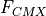 is the Maximum Saturation.
The capillary pressure and drag models and their parameters are described individually below.
Simplified Unsaturated Capillary Pressure Model¶
The simplified form of the wetting and draining relationship between saturation and capillary pressure is illustrated below:
PCMX is the Simplified Maximum Capillary Pressure and defines the maximum capillary pressure that retains fluid in the material at the Simplified Saturation at Maximum Capillary Pressure – Fpcmx in the figure above.
The shape of the curves for saturation greater than Simplified Saturation at Maximum Capillary Pressure is given by the following relations. The bubbling (air-entry) pressure , is the pressure at which air can be forced into an initially saturated sample, and is the magnitude of the separation between the wetting and draining curves in the Simplified capillary pressure model.
where
and
- is the Pressure Curve Fitting Coefficient,
- is the Simplified Maximum Capillary Pressure,
- 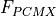 is the Simplified Saturation at Maximum Capillary Pressure,
- is the Minimum Saturation, and
- is the Maximum Saturation.
Choose values of Pressure Curve Fitting Coefficient, Simplified Maximum Capillary Pressure and Simplified Saturation at Maximum Capillary Pressure to fit experimental data.
Scanning curves represent the change in vs.  when
alternating between filling and draining, and have an arbitrary simplified
slope of:
when
alternating between filling and draining, and have an arbitrary simplified
slope of:
Note
See Input Variable Summary section Component Properties: Porous Components for associated input file values.
Van Genuchten Unsaturated Capillary Pressure Model¶
A more physical form of the complex relationship between saturation, capillary pressure, and draining/wetting state of the fluid is provided by the Van Genuchten capillary pressure model illustrated below, with arrows showing the state path for a series of changes in wetting direction:

The numbers on the plot are from a typical saturation path with a porous material, which proceeds as follows:
- Begin draining from saturated media. Capillary pressure follows envelope.
- Reverse to filling. Capillary pressure follows 1st-order filling scanning curve.
- Reverse to draining. Capillary pressure follows 2nd-order draining scanning curve.
- Continue draining. Capillary pressure follows draining envelope.
- Minimum absolute saturation. Begin filling. Capillary pressure follows envelope.
- Reverse to draining. Capillary pressure follows 1st-order draining scanning curve.
- Reverse to filling. Capillary pressure follows 2nd-order filling scanning curve.
- Reverse to draining. Capillary pressure follows 3rd-order draining scanning curve.
- Finish experiment.
The primary wetting and draining curves define the envelope of the capillary pressure for each porous media-liquid system. If the process switches between wetting and draining before filling or draining is complete, the capillary pressure follows scanning curves inside the envelope. There are an infinite number of wetting and draining scanning curves within the envelope, and the actual curve depends on the local saturation and capillary pressure when the reversal occurs. The model detailed by [NB88] has been enhanced to include the first-order draining and second-order wetting scanning curves.
where:
 is the wetting capillary pressure
is the wetting capillary pressure- is the Wetting Curve Alpha Coefficient in units of pressure: you may need to convert literature values that are in units of inverse length (head)
- is the Wetting Curve m-exponent, for soils often assumed to be
 is the Wetting Curve n-exponent
is the Wetting Curve n-exponent is the draining capillary pressure
is the draining capillary pressure is the Draining Curve Alpha Coefficient in units of pressure like and in soils is often assumed to equal
is the Draining Curve Alpha Coefficient in units of pressure like and in soils is often assumed to equal  is the Draining Curve m-exponent, for soils often assumed to be
is the Draining Curve m-exponent, for soils often assumed to be 
 is the Draining Curve n-exponent, for soils often assumed to equal
is the Draining Curve n-exponent, for soils often assumed to equal
The curves should be defined from experimental data and curve-fit using the equations above. The first-, second-, and higher-order draining curves define intermediate capillary pressure vs. saturation paths depending on whether the direction of flow has reversed once, twice, or more than twice. The scanning curve shapes are set by the primary curve parameters, which should be determined experimentally. Typical values (used to generate the curves above) are shown below:
| Parameter | Value |
|---|---|
| Minimum Saturation (OFCMN) | 0.0714 |
| Maximum Saturation (OFCMX) | 0.9400 |
| Wetting Curve Alpha Coefficient (ALPHWOBS) | 53316 dyne/cm2 |
| Draining Curve Alpha Coefficient (ALPHDOBS) | 118630 dyne/cm2 |
| Wetting Curve m-exponent (XMWOBS) | 0.6 |
| Draining Curve m-exponent (XMDOBS) | 0.9091 |
| Wetting Curve n-exponent (XNWOBS) | 9 |
| Draining Curve n-exponent (XNDOBS) | 11 |
Note
- See Input Variable Summary section Component Properties: Porous Components for associated input file values.
- The capillary pressure models require that the porous media be resolved by at least three cells.
Porous Baffles¶
Baffles in FLOW-3D are used to describe thin walls. Unlike solid components, baffles do not block any volume; they are located at boundaries between computational cells blocking the whole face. If, for example, a spherical baffle is defined in the input, the preprocessor will convert it to a stair-step shape conforming to the nearest cell boundaries. Therefore baffles are ideal to describe flat thin, flat surfaces. Additionally, a uniform porosity can be given to each baffle to model permeable screens.
To add a baffle, open the Baffles sub-window in Model Setup –> Baffles and click on the add button. Simple shapes then can be defined using variables in Definitions and Limiters under the newly created baffle. Specify only one definition, and as many transformations and limiters as necessary: for example, to make a circular plate baffle, specify the definition as Z = 0, a limiter as Cylinder Outer Radius, and then rotate and translate the baffle to the desired location. Remember that specifying a radius as a definition or limiter applies the radius around the z-axis, not necessarily around the center of the baffle.
Porosity of a baffle is defined in Porosity Properties in the Baffle property tree. Baffle porosity can take values between 0.0, for no porosity, and 1.0, for a completely open baffle.
Flow losses in porous baffles can be linear or quadratic, or both, with respect to the fluid velocity. Note that the flow losses are computed from the microscopic fluid velocity, using the actual flow velocity inside the porous baffle. The linear losses are specified using the Linear Loss Coefficient, and quadratic flow losses are defined using the Quadratic Loss Coefficient. The latter has no dimension, while the former has the dimension of velocity.
If the quadratic coefficient (KBAF2) is unknown, then the following are typical
values for screens composed of rows of elements (typically cylindrical) having an open area fraction, A.

See also
More details on how the loss terms are incorporated into flow equations in the Theory Manual: Baffle Flow Losses.
Reaction Kinetics¶
Reaction kinetics govern the rate at which reactants react to yield products.
For instance, in the equation below, reactants and react to produce . The
rate of reaction (transformation) is given by and is dependent on the specific reaction
rate ( ), concentrations of the reactants ( and ) and the orders ( and ) of each reactant.
), concentrations of the reactants ( and ) and the orders ( and ) of each reactant.
The reactants can be chemical and/or biological in nature. If the specific reaction rates and the orders for each reactant are known, the evolution (uncoupled, partially coupled or coupled) of each reactant can be accurately calculated using the FLOW-3D model. See Reactive Flows Algorithm for a more detailed description of the model theory and numerical approximations.
In the FLOW-3D model, each reactant is represented as a scalar variable created using the Scalars model. Once these scalars have been created, a set of reaction kinetics parameters can be defined for each scalar within the dialog. The interface for defining the specific reaction rates and the orders for each reactant is simple and intuitive. A sample set of partially coupled reactions, and their equivalent input into the dialog is shown.
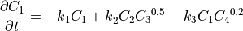
To define the system of reactions shown, the user clicks on each term on the right side of the dialog and enters a
value for Rate coefficient and Exponent for each scalar reactant. For example, four
scalars were first created in the Scalars model and are now available as reactants  corresponding to
bacteria, biodegradable substrate, oxygen and chlorine. Clicking on each term for bacteria (
corresponding to
bacteria, biodegradable substrate, oxygen and chlorine. Clicking on each term for bacteria ( ), the specific
reaction rates are set to 1e-6. Then clicking on Term 1 for , the values of are
set to 1e-5. The values for Exponent are defined similarly. In the example shown, we want to set
Term 2 for the bacteria () reaction rate as a function of biodegradable substrate and oxygen concentrations.
This is specified in the model by clicking on the input box for Term 2 of and then defining the Exponent
for biodegradable substrate (
), the specific
reaction rates are set to 1e-6. Then clicking on Term 1 for , the values of are
set to 1e-5. The values for Exponent are defined similarly. In the example shown, we want to set
Term 2 for the bacteria () reaction rate as a function of biodegradable substrate and oxygen concentrations.
This is specified in the model by clicking on the input box for Term 2 of and then defining the Exponent
for biodegradable substrate ( ) as 1, and Oxygen () as a value of 0.5.
) as 1, and Oxygen () as a value of 0.5.
See also
Scalars¶
Description and usage¶
The Scalars model is a powerful feature that allows user-defined
scalar variables to be included in the calculation. A transport equation
is solved for each advectable scalar; non-advectable scalars are also allowed.
These variables can be used to modify the fluid density, viscosity, elastic modulus
and viscoelastic properties as a function of the scalar concentration. Scalars are also
useful in Customization where they provide an advectable spatial
variable that is automatically output to the flsgrf.* file and for which source
terms and other dependencies can be added via customization of the source code routines.
Setup and dependencies¶
The model is configured on the Model Setup–>Physics–>Scalars dialog. New scalars can be added by increasing the Number of Scalars entry and then each scalar variable can be assigned properties and behaviors.
The different properties are:
- Scalar title: This sets the name of the scalar for setup and post-processing.
- Advection: This option defines whether the scalar variable will advect with fluid 1, fluid 2, both fluid 1 and fluid 2, or not at all. Most physical scalars will be advectable; non-advecting scalars are most commonly used in customizations.
- Density adds to fluid density: This option allows the local scalar concentration (specified in dimensions of mass per unit volume) to add to the local fluid density.
- Scalar viscosity: This option allows the local fluid viscosity to be a function of the local scalar concentration. The final viscosity is a density-weighted average of the fluid viscosity and the scalar viscosity.
- Molecular diffusion coefficient: This defines the molecular diffusion coefficient of the scalar in terms of mass per length*time.
- Initial uniform concentration: This assigns a uniform scalar concentration everywhere in the domain.
- Turbulent diffusion multiplier: This allows for the adjustment of the scalar diffusion relative to the turbulent diffusion of momentum. A value of 1.0 means that the scalar diffuses at the same rate as the momentum, while values less than 1.0 mean that the scalar diffuses slower than momentum. A value of 0 indicates that no turbulent diffusion of the scalar is occurring, and values greater than 1.0 make no physical sense.
- Concentration for residue formation: This input field is used in conjunction with the residue model to define the maximum packing density for the solute scalar. Once the solute is concentrated to its maximum packing density, then any further concentration results in a residue that is fixed (see Vaporization Residue).
The Activate vaporization residue model checkbox can be used to turn the residue model on or off (see Vaporization Residue).
Once the scalar properties are defined, the scalar concentrations need to be defined in the Initial Conditions using fluid regions (see Regions):
The scalar concentrations can also be defined in the Mesh Boundary Conditions, at mass sources, and at mass-momentum sources, as shown below:
Note
- The Density adds to fluid density option requires the model.
- The Scalar viscosity option requires the option be active.
- The Turbulent diffusion multiplier option applies only when one of the turbulence models on the Viscosity and turbulence panel be active.
- Scalars can only modify the elastic and viscoelastic properties of the fluid if the Elasto-visco-plasticity model is active.
- The scalar concentration set for a boundary condition will be important if fluid is entering the domain from that boundary or if the scalar may diffuse into the domain from that boundary.
Limitations¶
The Scalars model is quite general but there are a couple limitations:
- The scalar concentfration can only add to the fluid density, not reduce it.
- The local viscosity is a density-weighted average of the scalar viscosity and the molecular viscosity.
- The local elastic and viscoelastic properties are density-weighted averages of the scalar elastic/viscoelastic properties and the fluid elastic/viscoelastic properties.
Sediment Scour and Deposition¶
The sediment scour model uses a number of equations which should be understood before attempting to calibrate the model to a data set. Details of the equations are given in the Sediment Scour Model section of the Theory chapter as well as in Flow Science report 03-14 at http://users.flow3d.com/technical-notes/.
Sediment properties¶
The scour model is activated in the user interface by selecting and specifying the number of distinct sediment species to be modeled from the drop down menu in the window that appears. The maximum number of sediment species that can be defined is 10.
- The Maximum packing fraction controls the maximum solid fraction when sediment is settled and packed within the domain. This value is assumed to be the same, regardless of the arrangement of sediment species. The default value is 0.64, which is the maximum packing fraction of spheres. For multidisperse sediments, this number can be higher. For monodisperse, irregular sediment particles, it can be lower.
- The Richardson-Zaki coefficient multiplier controls the effect of drag on the settling sediment particles as they become concentrated. The default value is 1.0, which means that the enhancement to the drag due to particle-particle interaction is as defined by the Richardson-Zaki model.
- Diffusion of suspended sediments is considered if the Molecular diffusion coefficient or the Turbulent diffusion multiplier is defined with a non-zero value. The Turbulent diffusion multiplier is the inverse Schmidt number that is typically about one.
- The packed sediment bed roughness is defined by the d50 of the sediment material and the bed roughness / d50 ratio. The d50 is calculated every time step and for every mesh cell with packed sediment. The recommanded value for the ratio multiplier is 2.5.
- For each sediment species, the Name can be optionally entered; this aids during post-processing to identify the sediment species. If a name is not provided, the default name is Sediment sp. n. The Diameter of each species is the mean particle diameter of the species, in units of length used in the simulation. The Density is the microscopic (grain) density of the sediment species, in the same units of density used elsewhere in the simulation. The sediment density must be specified by the user, since no default value is used.
- The Critical Shields Number is the dimensionless critical shear at which particle motion is first observed. There are a number of simplifications and approximations in describing sediment erosion as a function of the critical Shields parameter. Scour is a stochastic phenomenon, so using an empirical parameter is unavoidable. Use site-specific values for best results. If no Shields parameter is specified, FLOW-3D will calculate the number from the Shields curve using the Soulsby-Whitehouse equation described in Flow Science Report 03-14 at http://users.flow3d.com/technical-notes/.
- The Critical Shields Number can be modified cell-by-cell at every time step to account for the bed slope effect. At a sloping bed interface, the gravity applies a tangential component of force to make the packed bed more or less stable depending on the flow direction. As a result, the critical shear stress increases if the fluid flow goes up the slope and decreases if the flow goes down. Check to activate the slope effect adjustment.
- The Angle of Repose describes the maximum resting angle of the bed (typically between 30 and 40 degrees), and is used to modify the local critical Shields parameter for slope effect. Its default value is 32 degrees.
- The Entrainment Coefficient controls the rate at which sediment erodes at a given shear stress higher than the critical shear stress. The entrainment coefficient can be used to scale scour rates or fit experimental data. The default value is 0.018 from data of Mastbergen and Von den Berg [MVanDBerg03]. A value of zero turns off the entrainment model completely.
- The Bed Load Transport Rate equation determines the method used for calculating bed load transport. The default setting uses the Nielsen equation. A description for each of the of the available bed load equations is provided in the theory section (see Sediment Scour Model).
- The Bed Load Coefficient is used in the bed load transport rate equation and controls the rate at which bed load transport occurs at a given shear stress higher than the critical shear stress. Users can choose Meyer-Peter and Mueller equation, Nielsen equation or Van Rign equation for bed load transport rate calculation, and the default value of the Bed Load Coefficient is 8.0, 12.0 and 0.053, respectively. A value of zero turns off the bed load transport model. The value of Bed Load Coefficient is adjustable for these following the original equation. For example, for Meyer-Peter and Mueller equation, subsequent researchers have suggested values ranging from 5.0 for low transport to 13.0 for very high sand transport, with 5.7 a typically-reported value for sand and gravel ([Rib98], [FernandezLuqueVanBeek76]).
Packed sediment components¶
After specifying this and other physical models, the mesh and geometry of other components in the simulation, the initial arrangement of packed and suspended sediment must be defined. To create a packed sediment region, create a component like any other, but from the drop-down menu next to , select Packed sediment.
Once the component has been defined as Packed sediment, go to each subcomponent of this component and define the . Here provide the fractions of the various sediment species you defined in . They will automatically be normalized to sum to 100%.
Initial sediment concentrations¶
To define an initial suspended sediment region, go to . Here there is the Global branch which allows you to specify a suspended sediment concentration for each species for all of the fluid in the computational domain in the Suspended sediment concentration branch – here you can define the global concentration of suspended sediment. To define sediment in only defined regions, create Fluid regions by clicking on the F button; here there is also a branch entitled Suspended sediment concentration from which you can define the suspended sediment concentration for that fluid region. All concentrations are entered in mass/volume in the same units as density used elsewhere in the simulation.
Note
The sediment concentration is a mass concentration, i.e. the concentration defines the mass of the sediment species per unit volume of water/sediment mixture.
Sediment concentrations at boundary conditions and sources¶
It is also important to provide boundary condition information of suspended sediments at domain boundaries. Packed sediment does not flow, so details on it are not needed at boundaries. From , select the boundary side you need to add suspended sediment. Only boundaries with incoming fluid are relevant. From the boundary dialog box, select the Sediment button: here enter the concentrations of the various sediment species in the incoming fluid. Time-dependent tabular data can also be provided by selecting the Tabular button.
For adding suspended sediment to Mass-momentum sources, create the mass/momentum source as usual (see Mass-momentum sources). The Mass flow rate is based on the density of clear water, or the Volume flow rate of the mixture, including solids. To add suspended sediment to this source, set the Sediment concentration in the section of the dialog. This parameter is defined as the ratio of the mass flow rate of solids in the mixture to the volumetric flow rate of mixture including solids – i.e., the total concentration in the sames units as density elsewhere in the simulation.
Suspended sediment can also be added at mass sources. Create a component and define it as a mass source (see Mass Sources). The Mass flow rate must be based on the clear water density, and the added sediment concentrations are set in the Sediment concentration field in the branch of the dialog.
Note
The sediment concentration is a mass concentration, i.e. the concentration defines the mass of the sediment species per unit volume of water/sediment mixture.
Sediment modeling considerations¶
Factors that affect the accuracy of sediment scour simulations and should be accounted for are:
- Density variations: By default, the variable density model will be activated to allow the fluid density to be calculated as a function of entrained suspended sediment. The user has the option to ignore sediment effects on fluid density by selecting Constant uniform density in the model.
- Turbulence Modeling: Sediment scour requires accurate estimates of the near-wall shear stresses, so a good turbulence model should be selected for turbulent flows. The Renormalized group (RNG) model in with a user-specified value for the Maximum turbulent mixing length is the recommended starting point because the Dynamically computed maximum turbulent mixing length relies on an algorithm developed for single-phase flow. The mesh should be suitably sized so that the near-bed velocity and shear stress calculations are correct. Details on this technique are given in the Wall Effects: Slip, Shear, and Component Roughness section.
- Limitations of Included Models and User Customization: The governing equations
of the sediment scour model are empirical, and are known to be valid only for
the data set from which they were derived. There are numerous empirical models for
critical Shields parameter, entrainment, bed load transport and grain settling velocity,
and a particular simulation may require a model that is different from
the equations supplied with FLOW-3D . All of the scour functions are available for
customization in the supplied editable modules
scour_critic.F90,scour_lift.F90,scour_bedload_rate.F90andscour_uset.F90.
Shallow Water Model¶
Description and Usage¶
The shallow water model solves the two-dimensional, depth-averaged form of the governing equations for fluid flow. This approach is valid when vertical fluid accelerations are negligible. This assumption can typically be made when the horizontal extents of the flow are much larger than the vertical extents, such as the case of flow in rivers, oceans and estuaries. A detailed description of the model formulation is provided in the theory section of the user manual (see Shallow Water Model) and in technical notes TN-48 and TN-58 found at http://users.flow3d.com/technical-notes/. For cases in which the shallow water assumptions are valid, using this model can significantly improve run times due to the reduction in cell count. A powerful application of the the shallow water model in FLOW-3D is the ability to implement a hybrid 2D/3D simulation. This approach allows the use of the shallow water model in regions where the assumptions are valid, and then link these 2D domains with a fully 3D mesh block in regions where the full 3D solution is required for an accurate simulation.
The shallow water model can only be used in conjunction with the one-fluid, sharp interface flow model, and fluid depth must be aligned with gravity in the z-direction. Users can select between implicit and explicit numerical methods for shallow water flow. The implicit method is the default and is the recommended method. It eliminates the restriction on the time step size imposed by surface waves and thus shortens the computation time. Lastly, special consideration should be given for defining the shallow water roughness coefficient.
The shallow water model is activated in . Under Flow type, users can define the flow to be Inviscid, Laminar or Turbulent. The selection of Flow type will affect how the bottom shear stress term is calculated, and is described in the equations (261) and (262) of the Shallow Water Model theory section. Lastly, a special type of mesh block must also be defined in .
Shallow Water Shear Stress Method¶
Laminar Flow¶
For laminar flow, the bottom shear stress is calculated using equation (268). This method requires the user to enter a Vertical viscosity multiplier as a correction factor for the bottom shear stress evaluation, and is defined in . It is a necessary parameter because the actual velocity profile in the vertical direction is usually nonlinear, which cannot be resolved in the shallow water approximation. The Vertical viscosity multiplier is designed to compensate for the lack of vertical velocity profile resolution. The default value is 1.5 which corresponds to a quadratic velocity profile in a steady-state shear flow. To use a different value of the Vertical viscosity multiplier, simply define it in its input box.
Turbulent Flow¶
For turbulent flow, the shallow water model in FLOW-3D uses the quadratic law for calculation of the bottom stress as described equation (265) of the Shallow Water Model theory section.
Choosing how to define the value of the drag coefficient,  , is a critical step in the development
of a turbulent shallow water model. In FLOW-3D , the user has three options for defining the drag coefficient.
, is a critical step in the development
of a turbulent shallow water model. In FLOW-3D , the user has three options for defining the drag coefficient.
- Define the value of as a direct input
- Calculate as a function of a surface roughness height,
- Calculate as a function of a Manning’s

The most common approach is to use one of the latter two options to define as either a function of or Manning’s . The advantage of these methods is that they account for the effects of flow depth. Values for and Manning’s are also readily available in the literature.
When using roughness height, the equation for is:
where:
- 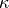 is the Von Kármán constant, 0.40
- is 0.71
- is the fluid depth
- is the surface roughness height
The equation for using Manning’s is:
It is seen that when Manning’s is used, is inversely proportional to . To
avoid unphysically high value of when water is too shallow, a cap is applied
to , which can be defined in . Its default value is 0.1.
The default method used in FLOW-3D is to define as a constant global value of 0.0026, which is a typical value in hydraulic and coastal engineering applications. This global default value can be redefined by the user in the options. However, if there is actual physical variability of the surface roughness characteristics for the solid objects in the domain, a method to define a spatially varying , and/or Manning’s is required. This can be accomplished
in FLOW-3D by assigning different values of of the roughness coefficients to individual components or sub-components.
To define a component specific value of , and/or Manning’s , go to , and select the desired method, and specify the value in the corresponding input box. Values are defined in input boxes of Shallow Water Drag Coefficient for ; Roughness height ; and Manning’s roughness coefficient for Manning’s .
These values can also be defined at the sub-component level. To define a sub-component specific value, go to and define inputs for Roughness height and/or Manning’s roughness coefficient. By default, any value set at the sub-component level overrides values defined at the component level.
Lastly, there is also an option to assign a spatially varying and/or Manning’s with a
raster file. This method is used when a detailed delineation of roughness zones is available as a raster
output from a GIS software. Within the raster file, the roughness zones are coded with integer values,
and then related to either a and/or Manning’s value through a user defined legend
file. This allows for easy modification of roughness values without being required to edit the raster
directly. Procedures for applying the raster and legend files are provided in model setup
section (see Surface roughness and Surface roughness legend file). When roughness values are
defined from a raster file, they will override inputs set at the component and sub-component levels.
For any grid cells in the raster defined as NODATA, the underlying component or sub-component roughness
or Manning’ values will be applied. It is noted that roughness height and Manning’s roughness
coefficient can be specified at the same time. They share the same raster file, but their code conversion files are different.
Shallow Water Mesh Block¶
Special mesh blocks must be defined for regions being modeled with shallow water. The mesh block must be defined so that there is a single cell in the z-direction. To ensure that the FAVOR method in FLOW-3D accurately resolves the solid objects, the bottom elevation of the cell must be defined to intersect with all of the solid geometry objects. Additionally, the top elevation of the cell must be defined so that it is above the expected free surface elevation of the fluid. Note that if the cell height is too large it will adversely affect vector and contour plots. Lastly, the user must also check the box for Shallow water mesh block.
Combining Shallow Watter with Other Physical Models¶
Shallow Water / 3D Flow¶
The shallow water model can be combined with the fully 3D modeling capabilities of FLOW-3D to create a hybrid 2D/3D model. This hybrid model allows for detailed modeling of 3D structures within a larger domain where shallow water assumptions are valid such as a river, sea or estuary. The model uses multi-blocking meshing, where the each mesh block needs to be designated as either 2D or 3D by selecting the the Shallow water mesh block flag in the Mesh operations widget. A valid hybrid model can have the 3D mesh block fully nested within the 2D mesh block, or can be set up with linked blocks that share common boundaries (See Multi-Block Meshes). When setting up a hydrid model make sure to observe all best practices for multi-block meshing and also for shallow water meshing. Additionally, when creating a hybrid model, the minimum Z elevation of the shallow water mesh block must be greater than the minimum Z elevation of the linked or nested 3D mesh block.
It is noted that Manning’s roughness coefficient can only be used for shallow water turbulent flow. Surface roughness height, however, can be used for both shallow water and 3D turbulent flows. In shallow water mesh blocks, bottom shear stress coefficient can be user-defined or code-calculated using either roughness height or Manning’s roughness coefficient. In 3D mesh blocks, only roughness height is used to calculate near-wall flow. Please refer to Model Reference -> Shallow Water Model for more details of Manning’s roughness coefficient and surface roughness height specifications.
Shallow Water / Geophysical Flow¶
If the shallow water flow is also a geophysical flow (e.g., of the scale of an estuary or bay), then the Coriolis force due to the Earth’s rotation is important. In this case, users need to activate the geophysical fluid flow option in and define the Latitude of the flow region.
See also
Shallow Water / Wind¶
Wind shear on the water surface may need to be considered in shallow water flows. It can be defined in . See the Wind Shear Stress section for more information.
Shallow Water / Porous media¶
Porous media may be used in shallow water models to represent things that are not well-characterized by surface roughness, like forests, hedges, etc. However, if the porosity is less than one, all solids content of the media will be packed down onto the bed, changing the bed elevation. Therefore the recommended approach is to specify the model and drag coefficients, and then specify the porous component porosity as one (100% open). This drag model does not use porosity in its calculation of flow losses, so this approach will add drag due to the porous media without changing the bed elevation. Details on porous media physics are given in the Porous Media section.
Sludge Settling¶
The sludge settling model is activated in the user interface by selecting . Settling velocity of sludge is in the gravitational direction. It is a function of sludge mass concentration and decreases with increasing sludge concentration. It is calculated using either the Vesilind equation or a table-valued function defined by users. From the , select or . If the former is selected, users need to specify and that are used in the equation. Otherwise, users need to select and fill the data table, or use an external file to define the function by selecting . In the external file, two columns of data need to be specified with the first and second ones representing sludge mass concentration and sludge settling velocity, respectively.
It is also required that users define and . In a settling tank, the maximum concentration is the sludge mass concentration in the fully settled region. At the maximum concentration, sludge stops settling and its concentration no longer increases, but its advection with fluid flow may continue.
Users may specify the of sludge. In a sludge settling simulation, fluid is the water-sludge mixture, and its total viscosity is evaluated as the fraction-weighted average of water and sludge viscosities. Note sludge viscosity may not be important when sludge fraction in fluid is low.
The and can also be specified for sludge. The total diffusion coefficient of sludge is determined as
where  is the turbulent kinematic viscosity of fluid, is the molecular diffusion coefficient of sludge, and is the turbulent diffusion coefficient multiplier for sludge.
is the turbulent kinematic viscosity of fluid, is the molecular diffusion coefficient of sludge, and is the turbulent diffusion coefficient multiplier for sludge.
Initial conditions can be defined for sludge mass concentration with a global value or fluid-region specific values. At a boundary where fluid enters the domain (velocity, volume flow rate or pressure boundary), sludge concentration can be set as a constant value or a time-dependent variable with tabular data.
In postprocessing, sludge related output data can be found in restart, selected and history data. The restart and selected data include sludge mass concentration, sludge settling velocity, and sludge settling mass flux which is the product of sludge mass concentration and sludge settling velocity. To output sludge data in selected data, users must select when setting up the simulation. Sludge related history data is total .
Solidification¶
The solidification model can be used when heat transfer is activated () and fluid specific heat () and conductivity () are set. Only Fluid 1 can undergo phase transformations.
To activate the solidification model check , and then specify the Liquidus temperature, Solidus temperature, and Latent heat of fusion in the Fluids widget under . In the simplest model (selection Linearly with constant from the drop-down menu next to Latent Heat Release Definition) the latent heat is released linearly as the material cools from the Liquidus to the Solidus temperature. For a more detailed models of latent heat release, including heats-of-transformation in the solid phase, use the Specific energy vs. temperature or Solid fraction vs. temperature options to define the release of the latent heat as a function of temperature. See Heat of Transformation in the Theory manual for more details about this setup.

Solidification implies a rigidity and resistance to flow. This rigidity is
modeled in two ways. For low solid fractions, i.e., below the point of
coherency , the viscosity is a
function of solid fraction. For solid fractions larger than the coherent solid
fraction, a Darcy type of drag force with a drag coefficient proportional to
a function of solid fraction is used. This drag is added to the momentum
equations as ( ,
, ,) – see
Momentum Equations. The calculation of this drag is described in
Solidification Drag. The drag coefficient contains the factor
Coefficient of Solidification Drag that users can adjust to modify
the amount of resistance to flow. The drag coefficient is multiplied by the
local phase-averaged velocity, which corresponds to the velocity reported in
FLOW-3D output.
,) – see
Momentum Equations. The calculation of this drag is described in
Solidification Drag. The drag coefficient contains the factor
Coefficient of Solidification Drag that users can adjust to modify
the amount of resistance to flow. The drag coefficient is multiplied by the
local phase-averaged velocity, which corresponds to the velocity reported in
FLOW-3D output.
If the solid fraction exceeds the point of rigidity, the Critical Solid Fraction (in ), the drag becomes infinite and there can be no flow with respect to the computational grid (for an exception, see Moving Solid Phase).
Note
Use for the simulation to stop when all the fluid is completely solidified. sets the fraction solid value at which to stop the simulation.
Criterion Functions¶
The criterion function below can be used to post process a number of
quantities. The coefficient, , and the exponents, ,
, , and , can be changed to represent various
quantities.
(14)¶
where:
- is the cooling rate,
 is the temperature gradient,
is the temperature gradient,- is the solidus velocity, and
- is the local solidification time - the time it takes for the metal to cool from the liquidus to the solidus temperatures.
For example, already available in FLOW-3D as Solidification Data are primary dendrite arm spacing where the (14) reduces to:
(15)¶
The coefficient of 1.0 is a material or unit multiplier. The parameters are the effective values averaged between solidus/Niyama and liquidus temperatures with impingement effects considered.
Other existing quantities available for selection are:
- Niyama porosity criterion:
- feeding efficiency index:
- LCC porosity criterion:
- primary dendrite arm spacing:
- secondary dendrite arm spacing:
Customized output can also be postprocessed in FLOW-3D ’s native postprocessor as a 2-D result. The steps are as follows:
Render a 2-D result of any of the above output quantities. This will open up the Display tab
Go back to the Analyze tab, select the Custom tab and choose the flsinp.tmp file in the drop-down just below the tab
Modify any of the coefficients circled in red in the image below. The coefficients represent
through in order from left
to rightChoose Render and then the 2-D Output Type
Note
For the vast majority of casting processes, including sand casting, die casting, investment casting, continuous casting, ingot casting, etc., the solidification processes are not steady-state processes, which means the solidification velocity and/or the temperature gradient at the interface change continuously during the solidification. The solidification fronts may also come in contact with one another, and impingement occurs. In order to better predict the primary and secondary dendrite arm spacings of the castings, the non-steady-state solidification processes and the impingement effect have to be taken into account. Thus instead of using the above solidification parameters to compute the dendrite arm spacings, which are instantaneous values at the specified temperature, the effective values are used, which are averaged values between solidus and liquidus/Niyama temperatures, with impingement effect considered.
Drag in the Mushy Zone¶
The mushy zone in casting is a region where liquid and solid phases coexist as a mixture. The local mixture viscosity is affected when the equiaxed dendrites (structures consisting of crystals that grow radially inside an under-cooled melt) are free floating within the liquid.
Once a fixed solid network is formed when the dendrite coherency is attained, additional flow losses arise since the liquid phase now moves through a fixed porous dendiritic structure. Alternatvely, the liquid/solid mixture after the coherency point can be treated as a highly viscous fluid, instead of a flow through porous media. The viscous approach is useful when the solid phase continues to move and deform as, for example, in the continuous twin-roll casting process.
Solidification Drag Models in FLOW-3D¶
To define the coefficient of solidified drag the user must first activate the heat transfer and solidification models. These can be activated by from the dock widget. A shrinkage model can also be activated in the solidification model window.
Once the Solidification model has been activated, the drag formulation needs to be specified. In the lower left corner of the Solidification dialog there is an option to choose between and drag formulations.
- The formulation treats
solidified fluid as a viscous fluid, with the viscosity of pure solid phase
specified below the entry for Flow model for solidified metal in the
Viscosity field. This approach is used for simulations where a
rigid-like drag model cannot be used (e.g., when the solidified metal is
squeezed between rollers). The viscosity varies linearly with solid fraction:
- When the solid fraction is zero then the viscosity is that of the fluid #1
- When the solid fraction is one then the viscosity is equal to the value specified on the Solidification panel.
- The formulation uses the solid fraction to determine the state of solidification. When the solid fraction is at or exceeds the Critical Solid Fraction then the drag is infinite – that is, the liquid/solid mixture behaves like a solid. When the solid fraction is below the Coherent Solid Fraction then the drag is zero. In between these two values the flow is in the mushy zone and the flow is treated as though it is in porous media. The model also automatically modifies the viscosity at the molten metal when the solid fraction is lower than the Coherent Solid Fraction. In this state, solid crystals raise the viscosity, yet do not yet bind together (i.e., are not coherent). Once the fluid reaches the Coherent Solid Fraction the drag equation is taken into account and the viscosity remains constant at the last value before coherency was reached. The critical and coherent solid fractions are defined by the user and can be found in papers and books. This formulation requires that the Coefficient of Solidification Drag be defined. This can be done at the Solidification window of the Physics widget or in the widget by opening the tab.
How to Calculate Permeability¶
Darcy’s law, given below, is a mathematical description of flow in porous media for dendritic networks [Poi87].
(16)¶
where  is the velocity of the interdendric flow,
is the local pressure gradient, and
is the specific permeability of the mushy zone.
This equation is only valid if the the flow is approximately steady,
inertial effects can be ignored, the volume fraction of liquid is uniform and constant,
and there are negligible liquid-to-liquid interaction forces
There are several models that can be used to define the permeability, but FLOW-3D
uses the Blake-Kozeny model, shown below. Other models can be added by
customizing the source code that comes with the software.
is the velocity of the interdendric flow,
is the local pressure gradient, and
is the specific permeability of the mushy zone.
This equation is only valid if the the flow is approximately steady,
inertial effects can be ignored, the volume fraction of liquid is uniform and constant,
and there are negligible liquid-to-liquid interaction forces
There are several models that can be used to define the permeability, but FLOW-3D
uses the Blake-Kozeny model, shown below. Other models can be added by
customizing the source code that comes with the software.
(17)¶
where:
 is the tortuosity, typically equal to ,
is the tortuosity, typically equal to , is the solid fraction, and
is the solid fraction, and- is the characteristic dimension for flow. In this application, the dendrite arm spacing can be used.
If we apply Equation (16) to Equation (17) we get the following equation for permeability [Poi87]
(18)¶
Some typical values for the dendritic arm spacing are given below.
| COOLING RATE, K/s | PRODUCTION PROCESSES | DENDRITE ARM SPACING, |
|---|---|---|
| to | large castings | 5000 to 200 |
| to | small castings, continuous castings, die castings, strip castings, coarse powder atomization | 200 to 5 |
| to | fine powder atomization, melt spinning, spray deposition, electron beam or laser surface melting | 5 to 0.05 |
Range of cooling rates in solidification processes [CF85]
How FLOW-3D Defines the Coefficient of Solidification Drag¶
FLOW-3D uses a porous media drag to model the solid to liquid phase change. The drag is a function of solid fraction. There are two shrinkage models available to the user; the rapid shrinkage model and the full fluid flow model. In the simple shrinkage model, the fluid is assumed to be at rest. The full fluid model takes into account the volume changes associated with the phase change. Since the drag force is inversely proportionate to the permeability, it can be expressed as follows:
(19)¶
where is the drag coefficient used in FLOW-3D . This drag coefficient is multiplied by
the local velocity and subtracted from the right side of the equation of
momentum equations (see Momentum Equations).
Rearranging Eq. (19) and substituting in the permeability from Eq.
(18) gives:
- The Coefficient of Solidification Drag: ,
- The drag force: .
See also
Macro-Segregation during Alloy Solidification¶
The segregation model is designed to model changes in binary alloy composition due to transport of solute by convection and diffusion. It is accessed from :
Activate segregation by checking Activate binary alloy segregation model.
The phase diagram, which defines the concentrations of the components of the
binary alloy mixture at equilibrium at various temperatures, is assumed to
have straight solidus and liquidus lines. The phase diagram is constructed
based on the input data and is included in the preprocessor plot file
prpplt. It is accessed from .
Below shows the part of the fluid properties relevant to the Macro-Segregation Model (under ). The phase diagram is defined by the values of the Solidus and Liquidus Temperatures at the Reference Solute Concentration. In addition, the Partition coefficient, under Concentration Variables, needs to be defined. Alternatively, the Pure Solvent Melting Temperature can be specified. If both the Partition coefficient and Pure Solvent Melting Temperature are set, then the solvent melting temperature is redefined from the phase diagram.
The Eutectic Temperature or the Eutectic Concentration can be specified to define the eutectic reaction. Again, if both of these variables are set, then the Eutectic Concentration is redefined from the phase diagram.
The Ratio of Solute Diffusion Coefficients defines the ratio of the diffusion coefficients of solute between the solid and liquid phases. The solute molecular diffusion coefficient in liquid is specified by specifying Solute diffusion coefficient in . RMSEG defines the turbulent diffusion coefficient multiplier of the solute; this is set directly in the input file.
If density variation due to solute redistribution is important, then set and specify the Solutal Expansion Coefficient under as the solute expansion coefficient to define metal density as a linear function of solute concentration. In that case, Reference Solute Concentration will be used as the reference concentration. In addition, can be specified to account for thermal buoyancy effects within the liquid (see also Buoyant Flow).
The initial solute concentration can be set in . A non-uniform initial distribution can be set within initial fluid regions under Alloy solute concentration. Additionally, the concentration can vary via a quadratic function over space by editing the section using quadratic functions as described in Initial Conditions: Region Values. At pressure and velocity boundaries use to set solute boundary conditions.
Liquid and solid phase compositions can be plotted by using data transformations in the postprocessor.
Eutectic solidification can be visualized by plotting SLDEUT which stores the
mass fraction of the eutectic in the metal.
If thermal gradients in the liquid phase are significant, use the higher-order advection method for more accuracy by setting :

Flow losses in mushy zone are controlled by the , which is a function of the dendrite arm spacing. Since the latter is not evaluated by the model, the Coefficient of Solidification Drag must be set by the user.
Note
- Unlike the standard solidification model, the value of the solidus temperature here can be negative, defined by the extrapolation of the solidus line past the eutectic point on the phase diagram.
Microporosity Formation¶
The microporosity model can only be used when modeling solidification (see Solidification) and is activated in . The required input are liquid and solidified fluid densities, defined in and , where the solidified fluid density is greater than the liquid density. Also, the Critical Solid Fraction in must be set to a value less than 1.0.
The value Bulk modulus at critical solid fraction can be defined by . It describes the compressibility of the solidifying fluid at the large negative pressures developing in the mushy zone due to shrinkage. The value Critical pressure at which gas pores can form allows the model to couple to the initial pressure in the fluid, defined in the Initial tab, taken from the restart data, or using Intensification pressure (see below).
The Intensification pressure can be defined for high pressure die casting simulations to account for the extra pressure created by the shot sleeve plunger during solidification to delay the formation of porosity. The larger the Intensification pressure the less porosity will form in the casting during solidification.
The microporosity model does not require any specific setting other than the activation of a solidification model. It can be used together with the full system of flow equations, or in zero velocity field, i.e., in a purely thermal problem.
The model produces an additional output quantity, entitled micro-porosity; percent, which is available for post-processing in spatial and history plots.
Note
A Flow Science technical note on modeling micro-porosity (TN66) can be found at http://users.flow3d.com/technical-notes/.
Moving Solid Phase¶
| MAIN VARIABLES: | OBS: | IFOB, UTOBS, VTOBS, WTOBS |
The moving solid phase option allows users to model continuous casting. A Phantom component is defined in the region where the solidified moving fluid will be located. It is a phantom component because it covers a specified domain, but only in definition. It does not actually block area or volume, and therefore, has zero volume, and does not appear as a solid component in any of the results. It is defined in the drop-down menu next to :
When a component is defined as Phantom, prescribed velocities advect the solid phase (solidified fluid) according to the Phantom Velocites; X Velocity, Y Velocy and Z Velocity and are set under Component Properties. Liquid in this domain behaves as it otherwise would as part of the flow solution. For solid fractions larger than the coherency solid fraction defined by , a Darcy type of drag is used to drive the fluid toward the phantom component velocity. When the solid fraction exceeds the point of rigidity specified in , it will move with the velocity of the phantom component.
Note
- This phantom component will not appear in component plots, but can be seen by plotting the quantity Component number.
- The phantom component must be flat since a uniform velocity is applied across the entire domain of the component.
Solidification Shrinkage¶
Volumetric shrinkage occurs when a material solidifies and the density of the solidified material (i.e., ) is greater than the density of the liquid (i.e., ). The shrinkage model, therefore, requires the Solidification model to be activated and both solid and liquid phase densities to be defined. Shrinkage can be modeled only for one-fluid, sharp interface problems.
There are two solidification shrinkage models that can be used. Selecting the Shrinkage model with flow effects button solves the full fluid and heat flow equations (see Solidification Shrinkage and Porosity Models in the Theory manual). However, this shrinkage model may be CPU intensive, especially if long solidification times are considered. As an alternative, there is the simplified model, entitled Shrinkage model in the User Interface:
This model is based on the solution of the heat transfer equation only and runs quickly, especially when used in conjunction with the implicit heat transfer model ( – see Heat Transfer). Internal cavities open wherever there is no feeding path to a liquid volume.
Feeding in Shrinkage model with flow effects model is defined by computing the drag coefficient for flow in mushy regions. The drag function at every location in the mesh is computed as a function of the local solid fraction with a constant multiplier (see Solidification Drag). The reciprocal value of the drag function can be visualized in spatial plots: the variable name for plotting this is ‘normalized drag coefficient’.
While partial feeding due to large flow losses in the mushy region can occur in the Shrinkage model with flow effects, the simplified Shrinkage model can have either complete feeding or no feeding at all. The latter occurs when the local solid fraction along the feeding path exceeds the critical value defined by (default is 0.67). In addition, until the solid fraction everywhere in the metal in a liquid pocket has reached the Coherent Solid Fraction, feeding in the simplified model occurs from the top of the pocket. After that, feeding occurs from the hottest spot in the pocket. However, if Interdendritic feeding only is selected, feeding always occurs from the hottest spot in the pocket.
The value Bulk modulus of liquid phase can be defined by . It describes the compressibility of the fluid at the large negative pressures developing due to shrinkage. The value Critical pressure at which gas pores can form allows the model to couple to the initial pressure in the fluid, defined in the Initial tab, taken from the restart data, or using Intensification pressure. The compressibility option can be used only in conjuction with the simple shrinkage model.
The Shrinkage adjustment coefficient is used to adjust the shrinkage volume during solidification. The coefficient will avoid changing the density properties of the material and will account for the various factors affecting the volume change of the metal: compressibility, intensification pressure, linear shrinkage of the solid, volume eaten by the micro-pores. It applies to both Shrinkage and Microporosity models. It can be any positive number and 0. For the default value of 1.0 the shrinkage volume exactly corresponds to the change in fluid density; for Shrinkage adjustment <1, the volume change is smaller, and for Shrinkage adjustment >1 the volume change is larger. For Shrinkage adjustment =0, no volume change takes place, but the shrinkage and porosity models are not deactivated.
Use for the simulation to stop when all the fluid is completely frozen. The parameter Finish fraction may be used to stop the simulation when the fluid is a specified fraction solidified.
Note
Gravity is required in the simplified Shrinkage model to determine the feeding direction, and should only be directed along one of the coordinate axes. If more than one gravity component is non-zero, then the largest one is used to determine the direction of feeding.
See also
Thermal Modulus¶
Risers are commonly used to prevent cavities due to shrinkage during metal solidification. In order for risers to be effective, they have to be placed at the right locations, with the right size so that they contain enough metal to compensate the shrinkage without wasting. Modulus method is one of the most popular methods for conventional riser design, especially for casting materials of aluminum alloys and steel.
For a given casting part, its modulus is defined by
where:
- is the volume of the casting part, and
- is the surface area of the casting part.
Based on Chvorino’s Rule, for a simple casting, the relationship between the solidification time and its modulus can be written as:
where:
- is the solidification time,
- is a constant (usually 2), and
- is the mold constant. It can be calculated using the following formula:
![B = \left[ \frac{\rho_m}{T_m - T_0} \right] ^2 \left[ \frac{\pi}{4k\rho c} \right] \left[L + c_m \left(T_{pour} - T_m \right) \right] ^2](_images/math/a0dee2f4948c4fca670768d30a3af4611e653b11.png)
where:
- is the density of the metal,
- is the melting or freezing temperature of the metal,
 is the initial temperature of the mold,
is the initial temperature of the mold,- is the thermal conductivity of the mold,
- is the density of the mold,
- is the specific heat of the mold,
- is the latent heat of fusion of the metal,
- is the specific heat of the metal, and
- is the metal pouring temperature.
When designing a casting process, risers are usually chosen in such a way that the solidification times of the risers are longer than those of the casting parts for proper feeding. Based on Chvorino’s rule, solidification times are directly proportional to the modulus of the castings. When comparing solidification times, moduli can be directly compared. Since moduli are only geometric quantities, comparison of the moduli makes design problems much simpler. Casting engineers can design a riser with a larger modulus to ensure proper feeding of the part without considering the type of casting process to be used.
The geometric modulus of a casting is easy to compute for regular shapes. However, the modulus calculation becomes difficult if the shape of the casting becomes irregular, which involves tedious approximations of casting geometry to regular shapes. Furthermore, the geometric modulus approach relies strictly upon the geometry of the casting. Real castings employ chills and insulators to control the progression of the solidification. These features are ignored in the geometric modulus approach. To simplify the modulus calculation, and to account for thermal effects associated with chills, insulation, and other mold variations, an innovative approach termed thermal modulus is often used for riser design.
For the thermal modulus approach, first a solidification simulation of the casting is run. Once the simulation is complete, the equivalent modulus throughout the casting can be computed from solidification time based on Chvorino’s rule. The equivalent modulus computed using this approach is called thermal modulus. It can be used the same way as geometric modulus to guide the riser design.
To compute and output the thermal modulus,
- the solidification model has to be turned on (IFSLD=1);
- section &CASTVAR has to be present in PREPIN. If the PREPIN is created by FLOW-3D CAST GUI, &CASTVAR should be added automatically. Or you can import the existing PREPIN to the FLOW-3D CAST GUI, and &CASTVAR section should be added by the GUI.
- Geometry interpretation “mold” has to be present in &CASTVAR section.
The solver will check all the conditions, and compute and output thermal modulus automatically. The output is in the Solidification catalog.
If Conditions 1&2 are satisfied, but the solver still could not find enough material properties to compute the thermal modulus, a message will be written to PRPOUT and PRPERR files to remind the user.
Note
For a restart simulation, the calculation of mold modulus depends on the
thermal modulus conditions in the source FLSGRF. If in the source FLSGRF,
thermal modulus conditions are met, the thermal modulus will be computed
for the restart simulation, using the same mold constant from
source FLSGRF.
Note
It is highly recommended to set up the simulation through FLOW-3D CAST so that all required parameters are written to PREPIN properly.
Squeeze Pins¶
Description and Usage¶
The squeeze pin model is designed to include the effect of squeeze pins that may be placed inside a die in a high-pressure or permanent mold casting. It is activated at a certain time during metal solidification in the cavity. The purpose of the pins is to reduce or eliminate porosity in the hard-to-feed areas of the casting by pushing into the solidifying metal. The back end of each pin is connected to a hydraulic system that applies a constant force upon activation.
The pin model is based on the prescribed-motion GMO model, and works only with the simple shrinkage model, therefore, no dynamics based on forces is included in the model. Once activated, a pin senses the amount of shrinkage in the adjacent metal and moves in to exactly compensate that volume. A pin moves along a straight line of action; the maximum travel distance can be defined for a pin beyond which it cannot move, reflecting a specific die casting machine configuration. A force can also be defined for a pin that is translated into metal pressure. That pressure could then be used together with the Thermal Stress Evolution (TSE) in Solidified Fluid Regions or Microporosity Formation models.
A pin stops if too much solidified metal forms on its surface. The critical amount
of solidified metal beyond which the pin cannot move is controlled by an input
parameter SQP_SOLID(n), where n is the squeeze pin component number.
This variable defines the fraction of the pin’s work surface covered by solidified metal,
above which the pin can no longer move. The default value is 0.5. This input parameter is
currently not accessible through the GUI, but can be modified by directly editing
the prepin.* file.
If it is desired for the pin to move independently of the amount of solidified metal at its
surface, then set SQP_SOLID(n) to 1.0. Making the pin an adiabatic component, or
otherwise reducing heat losses to it, will also delay the freezing of the metal at its surface.
Once a pin stops because of excessive solidification at its surface, it does not resume motion even if metal remelts.
Multiple individually-controlled squeeze pins could be used.
Model Setup¶
The only requirement for the squeeze pins model is the activation of the simple shrinkage model.
Any solid component can be defined as a squeeze pin, including GMO components such as the shot sleeve plunger. A component may consist of a single subcomponent or multiple subcomponents. All subcomponents will move along the line of action defined for the squeeze pin component.
A squeeze pin component could be placed on top of the die component, or into a previously created hole in the latter. For a squeeze pin to work properly, its working surface must be in contact with the metal at all times. This is especially important when placing a pin on top of the die component.
To activate the squeeze pin, check on the panel.
The squeeze pin direction of motion (From and To points) have to be defined. The From and To points can be anywhere on the line of action. For axis-aligned squeeze pins, defining the motion is simple but for generally oriented pins, the motion vector can be determined manually by probing three points on the face of the squeeze pin and computing a cross product.
For the squeeze pin Activation, there are four options:
- Not Activated: This is the default option, which means the squeeze pin is OFF.
- Automatically activate: The pin will be activated if it is adjacent to a liquid region and the liquid region is not connected to another pin via a contiguous liquid region. This option s useful at the design stage when the pin exact activation time is not known.
- Time activated: The pin will begin to move at a specified time. If this option is selected, the activation Time has to be provided.
- Active simulation control: The pin will be activated by active simulation control events. This option is also very useful at the design stage. If this option is selected, the Events button will be enabled. Click on the Events button, an Active Simulation Events window will pop up, on which the squeeze pin activation conditions can be defined. Note that for Probe Variable Name for each condition, only and are available. Please refer to Active Simulation Control for more information.

The Force applied to the squeeze pin represents the force applied to the squeeze pin component by the hydraulic system. The force is translated into metal pressure, and the default is 0.0. The specification of a force only has meaning when the TSE or the microporosity model is active.
The Distance represents the maximum distance the squeeze pin can travel. If left blank, the default distance (unlimited) is used.
A component can be defined as a plunger and a pin at the same time, in which case
the component is interpreted as a shot sleeve plunger. In that case the pin parameters
are automatically derived from the plunger motion. The direction of motion is defined
by the plunger’s velocity, Distance is set to (unlimited) and
Force is set using the intensification pressure PRESS.
This behavior is especially useful during restarts when transitioning from filling to
solidification.
Output¶
The time of the pin’s activation is written to the screen, HD3MSG,
HD3OUT, and REPORT files, e.g.,
The movement of the squeeze pins is displayed in 2D and 3D plots in the same fashion as that of GMO components. In addition, the distance travelled and volume displaced by each squeeze pin is written to the General history data catalog and can be displayed as a plot vs. time.
Limitations¶
The squeeze pin model only works with the simple shrinkage model.
No dynamics are included based on the forces from the hydraulic system at its one end and metal pressure/stresses on the other.
The interaction with the adjacent solidified metal is approximate and is
its biggest limitation. It is recommended setting the heat transfer to metal
for each pin component to 0.0 to minimize the effect of this limitation. The
critical amount of solidified metal that makes the pin stop can also be
modified by directly editing the parameter SQP_SOLID in the
prepin.* file.
See also
Surface Tension¶
Surface tension is a force that acts in the plane tangent to any sharp interface, between a gas and liquid, or between two immiscible liquids. The force occurs due to differences in the inter-molecular forces between the two materials. Surface tension can be modeled in FLOW-3D in one or two fluid flows, but always with the Free surface or sharp interface option activated at the Physics widget.
The model is activated from , and checking Activate surface tension model. The surface tension coefficient can be set in this window (Surface tension coefficient, SIGMA), or in the Fluids widget under . The global Contact angle, defined here, controls the wetting behavior where the interface meets solid wall boundaries and solid components. The contact angle variables take values between 0.0 (complete wetting) to 180 degrees (completely nonwetting). In addition, a separate contact angle for each component can be specified in , which otherwise defaults to the global Contact angle.
The default setting is a contact angle of 90 degrees. If surface tension is activated, wall adhesion is also activated; it is not possible to turn off wall adhesion at certain components. All fluids exhibit adhesion behavior at solid surfaces, and it is necessary to specify a contact angle representing that behavior, whether the behavior is wetting or non-wetting.
The surface tension coefficient can also be a function of temperature. For a simple linear relationship between temperature and surface tension, provide a value for the Temperature Dependence (Temperature sensitivity in ) according to
where:
- is the computed surface tension coefficient,
- is the user-defined value Surface tension coefficient,
- is the Temperature Dependence,
- is the local temperature, and
 is the user-defined Reference Temperature (set in ).
is the user-defined Reference Temperature (set in ).
These values are entered on either the dialog box or the section. To use the temperature-dependent model it is necessary to activate heat transfer in the fluid ().
For cases where the surface tension is not a linear function of temperature, tabular data relating surface tension and temperature can be entered by selecting the Tabular button next to Surface tension coefficient in section.
In the event that it is desired to maintain the shape of droplet on a wetted area (e.g. when using the Vaporization Residue model), the contact line pinning option is available as a special surface boundary condition that works in conjuction with the Surface tension model. This surface boundary condition is used to pin the free surface of a droplet onto the surface of the solid and can be activated in . Note that the value of the Contact angle significantly affects the behavior of the pinned free surface.
In flows with substantial free-surface distortion and breakup, small droplets of fluid may be generated due to occasional numerical noise in surface tension pressures. These droplets may cause undesirable variations in surface pressure distribution due to their small surface curvature. Such droplets can be removed to reduce these numerical inaccuracies. This option is controlled by entering a value for the Fluid fraction cleanup in :
A positive value for this parameter activates the fluid fraction cleanup option. If the fluid fraction values in a cell and its neighbors are less than this value, then fluid will be removed completely from that cell.
The removed volume is recorded as the cumulative volume error and plotted at the end of the simulation as a function of time; this shows if the Fluid fraction cleanup option is leading to any significant change in fluid volume. The default value of Fluid fraction cleanup for two-fluid surface tension problems is 0.05. For all other simulation types it defaults to zero.
Note
The surface tension model is more sensitive to mesh irregularities than other models in the code because it depends on curvatures, i.e., second derivatives. It is recommended to use control volumes as close to cubes in shape (squares in 2-D) as possible.
Tabular Data¶
Temperature Dependent Properties¶
Most of the fluid and solid properties can be defined as a function of temperature. The data is passed to the solver through a table. These tables can be entered anywhere there is a Tabular button for the property. The tables can be:
- Entered manually.
- Imported from comma-separated-value (
csv) files to theprepin.*file. Thecsvfile can be delimited with spaces, commas, tabs, or semicolons. - Read directly from an external data file in
csvformat. Thecsvfile can be delimited with spaces, commas, tabs, or semicolons.
These properties can also be loaded into fluids or components from the Fluids Database or Solids Database under the Materials menu.
In case of import from csv files or load from external files, the file
can have a comments section at the top of the file before the start of the
data. The comments section is identified using /* at the beginning and */ at
the end. The comment lines can also be identified with a # symbol as the first
character of the line. For example, the header for the data may start with a # symbol like
in the figure below. Note that the beginning and the end of the comment section must be on different lines.
In order to use the external file without copying the data into the
prepin.* file, simply enter the filename and the corresponding column
number into the relevant namelist. For example, in order to read the fluid
density from the file shown above add the following to the namelist PROPS
IRHOF=1,
FRHOF='my_data_file.dat',
IRHOFC=2,
The first flag indicates that fluid density is going to be a function of
temperature, the second variable indicates the name of the external file where
this data can be found. Since the path is not specified, the solver expects
the file to be in the same folder as the prepin.*. And finally, the last
variable indicates that the second column in the my_data_file.dat is
density. It is assumed that the first column is always temperature.
For the list of temperature dependent properties and their variable names see the input variable summary of Tabular Property Input for fluids and Tabular Property Input for solids.
Note
- The external data file is used if a valid column number and filename is provided in the
prepin.*file and there is tabular data available in theprepin.*file for the same variable. - The user-defined tabular data is converted by the preprocessor into internal data structures that are optimized for use by the solver. The conversion involves remapping of the input tables onto new tables with equal spacing. The first and last points in the internal tables for each temperature-dependent quantity are taken from the respective input tables, while the number of points in between is fixed at 10000 for fluid quantities and at 100 for component properties. Linear interpolation is used during the conversion.
- This approach is typically adequate for smoothly varying data. However, in cases where the data varies significantly over a range of temperature that is comparable to the spacing of the internal tables, the conversion may introduce significant errors. A way around it is to reduce the temperature range in the input tables as much as possible, thus decreasing the spacing in the internal tables to improve the resolution.
Time Dependent Properties¶
Most of the boundary conditions and solid, cooling channel, and particle properties can be defined as a function of time. The data is passed to the solver through a table. These tables can be entered anywhere there is a Tabular button for the property. The tables can be:
- Entered manually.
- Imported from comma-separated-value (
csv) files to theprepin.*file. Thecsvfile can be delimited with spaces, commas, tabs, or semicolons. - Read directly from an external data file in
csvformat. Thecsvfile can be delimited with spaces, commas, tabs, or semicolons.
In case of import from csv files or load from external files, the file
can have a comments section at the top of the file before the start of the
data. The comments section is identified using /* at the beginning and */ at
the end. The comment lines can also be identified with a # symbol as the first
character of the line. For example, the header for the data may start with a # symbol like
in the figure below. Note that the beginning and the end of the comment section must be on different lines.
In order to use the external file without copying the data into the
prepin.* file, simply enter the filename and the corresponding column
number into the relevant namelist. For example, in order to read the fluid height
at the left boundary from the file shown above add the following to the namelist BCDATA
FFLHTBCT(1)='my_data_file.dat',
IFLHTBCTC(1)=2,
The first variable indicates the name of the external file where
this data can be found. Since the path is not specified, the solver expects
the file to be in the same folder as the prepin.*. And the second variable indicates that the second column in the my_data_file.dat is
fluid height (index 1 corresponds to the left boundary). It is assumed that the first column is always time.
For the list of time dependent properties and their variable names see
the input variable summary.
Note
The external data file is used if a valid column number and filename is provided in the prepin.* file and there
is tabular data available in the prepin.* file for the same variable.
Thermal Die Cycling¶
Thermal die cycling simulations are used for obtaining the die temperature after running a number of parts and a quasi-steady state condition is achieved. This type of simulation helps determine if there is sufficient cooling to extend the life of the die, and ensure no defects will occur in the final cast part.
Prerequisites¶
Before a thermal die cycling simulation can be set up, the user must first activate and on panel.
Defining the stages in the die cycle¶
Thermal die cycling can then be activated by specifying the total number of thermal cycles, (). There is no limit on how many cycles can be modeled in one simulation. Each cycle can then be divided into up to 100 segments. Each segment represents a special stage in the die casting process, such as metal cooling, open/ejection, spray cooling, die cleaning, etc. Each segment is characterized by a time interval (), which will be the same within each cycle, a heat transfer coefficient between the die and the ambient medium (except for the first segment) (), and a temperature on the die cavity surface (). The sum of all segment time intervals defines the total time of a cycle. The sum of all cycle time intervals defines the total time of the thermal die cycling.
To add a segment, select a type from pull-down menu. Available segment types depend on the segments that have been added.
Note
Temperature in the die cavity must be defined for all die cycling segments except for the first one (see Solidification below).
Solidification¶
The first cycle segment is always , which describes the cooling of the metal before opening the die. Once the first segment is added, its type is fixed (inactive). The metal is placed into the die cavity at the beginning of each cycle at a uniform temperature specified by the first entry in the table. This can be accomplished by adding a pointer, () which is located anywhere inside the die cavity, and then setting fluid fraction at the pointer equal to 1.0.
The value defined in Temperature in the die cavity is used as a uniform initial condition for fluid in the cavity. If Temperature in the die cavity is not specified for segment, then it is taken from the fluid temperatue deinfed in or from restart data for restart simulation (see Restart). For the heat transfer coefficients between the die and the metal during the first cycle segment, the component heat transfer coefficients to fluid 1 and to solidified fluid 1 are used (). The thermal die cycling table entry Heat transfer coefficient at the die cavity surface for the first segment is thus not needed and grayed out on the GUI.
Open before ejection¶
The segment can only be added as the second segment. Once an open before ejection segment is added, its type cannot be changed. During this stage, the cover of the die is open, but the casting part is still sticking to the ejector of the die. The cover and ejector thus experience very different thermal conditions at this stage. In order to correctly compute the die temperature during this stage, the cover and ejector components of the die have to be defined (). In addition to the Heat transfer coefficient at the die cavity surface, which defines the heat transfer coefficient between the die and the air, the Heat transfer coefficient between metal and air also needs to be specified. The component heat transfer coefficients to fluid 1 and to solidified fluid 1 are used to compute the heat transfer between ejector and metal, same as in the first segment.
All other segment types assume that the die cavity is empty of metal.
Closed¶
The segment is always the last segment. For the segments whose types are not one of the three mentioned above, their orders can be rearranged by drag-and-drop. The segment type can also be modified via Type pull-down menu on the right. The segment order might be rearranged automatically based on its new segment type. A segment can be deleted by clicking on the Delete segment button.
No fluid flow is modeled in a die cycling simulation.
Cores and liners are commonly used in die casting. They are inserted into a die assembly and are removed after each cycle. They can be modeled by defining them as cores/liners in . Unlike other parts of the die that are reused after each cycle and thus retain their temperature history, the temperature of cores and liners is reset at the beginning of each cycle.
Cores and liners are also considered during the segment. A core/liner component can also be defined as a cover or ejector component, depending on if it is part of the cover, or part of the ejector. If a core/liner is defined as a cover, it will be removed at the beginning of the segment. If it is defined as an ejector, it will stay in the ejector during the segment, and be removed at the end of the segment.
Since the cores and liners are usually of different material types than the other parts of the die, they usually have different heat transfer coefficients to the metal. This can be accomplished by specifying different values of heat transfer coefficient to fluid 1 for the core and liner components. As mentioned above, if the values of the heat transfer coefficient to fluid 1 are specified, they are used during the first cycle stage () and the (if defined). At later stages of each cycle, the cores and liners will be removed, thus have no effect to the die cooling.
After the die opens, the die is also cooled at the parting line. In order to
take the parting line cooling into consideration, the two die parts that are
in contact have to be defined, which is used to identify the parting line (see
also IFOBCYCCON in Component Properties: Thermal Die Cycling). The
parting line is closed during the first stage ()
and the stage (if defined). Cover
and ejector components are always treated as contacting components. Note that
the parting line needs to be along the coordinate planes to be better
resolved. Cores/liners cannot be defined as contacting dies.
Numerical settings¶
It is recommended to use the implicit heat transfer algorithm, by setting (also found on the ) for faster simulations (see Heat Transfer). The time-step size and the convergence parameters will be dynamically adjusted to achieve the optimum speed of the simulation and accuracy of the results. The time step size is automatically controlled to capture the duration of each cycle segment and at the same time to maintain the accuracy of the solution. The time step size could be further reduced manually by using TEDIT and TDTMAX arrays, but it is not generally necessary.
Output¶
The default values of the time intervals for the History data output,
THPLTD, and short prints, TSPRTD, are set to 1/10 and 1/5 of the smallest cycle segment
duration. The user can overwrite the default values in the Output
window.
Most of the Restart data edits are done in the last thermal die cycle, where the solution is supposed to be at steady-state and, therefore, most interesting to the user. There are three factors controlling the spatial output in the thermal die cycling model:
- One per cycle restart data edit defined in A restart data edit is made at the end of these die cycles. This allows the user to track the results from cycle to cycle and also make restart calculations.
- Additionally, restart data is automatically saved at the end of each segment during the last die cycle. These data edits allow the user to track the changes in die temperature during the main stages of the process.
- Finally, restart data can be saved at user-defined intervals during the last die cycle. The output frequency is controlled by the output logic defined in . The output frequency during the first segment of the cycle can also be based on solidified fraction.
Note
The setting has no effect in Thermal Die Cycling simulations. The simulation will stop after the final cycle.
Spray Cooling for Thermal Die Cycling¶
Note
The model definition is only available through FLOW-3D CAST. However, the variables can be directly typed in by editing PREPIN file.
For thermal die cycling simulations, in order to accurately predict the temperature distribution in the die, the spatial variation in the spray cooling has to be taken into consideration. Spray cooling model is developed for this purpose.
This model explicitly computes the cooling from each spray, instead of a constant heat transfer coefficient across the entire die cavity. The spray area on the die surface will be computed and updated constantly due to the movement of the spray nozzles. The blocking of the spray cooling due to the spray angle and the shape of the die surface is also considered. It provides more accurate temperature distribution on the die surface with reliable and realistic input parameters, which will help to better design and optimize the spray cooling process to eliminate the hot spots.
Note
To make the spray cooling model compatible with general thermal die cycling setups, this model can only be active during segment defined in thermal die cycling table.
Spray Area Computation¶
In order to include the influence of the shape of the die surface and the position of the spraying nozzles to the spray cooling, the spray area on the die surface is computed, and updated constantly when the spray nozzle moves. As shown in the figure below, on the die surface some areas under the spray are blocked, and some areas are overlapped by two or more sprays. These areas are computed and identified using ray tracing algorithm in order to distinguish the different spray cooling effects.
To visualize the spray area on the die surface, a scalar is used to highlight the spray surface element by the spray nozzle bank index. If a surface element is sprayed by more than one spray nozzle banks, the average bank index is used to mark the surface. If the spray nozzle moves, the spray area will also change. The spray area scalar can be used to validate the spray nozzle positioning and the spray robot movement.

The Heat Transfer Coefficient¶
The spray cooling mechanism is complicated, and the spray cooling heat transfer coefficient (HTC) depends on many variables such as spray shape, coolant flow rate, spray pressure, mold temperature, spray angles, spray distance, etc. To make the spray cooling model easier to use, two HTC calculation methods are provided. Users can choose to use the appropriate one based on their data availability.
The Heat Transfer Coefficient Based on Dependencies¶
If the spatial variation of the heat transfer coefficient (HTC) is known, either by direct measurement or full CFD computation, the HTC can be expressed by a spatial function. To simplify the HTC calculation, the HTC is computed by multiplying the base HTC by spatial dependence factors. For example for conical spray, for every spray surface element, the HTC is computed by
where
- is the base spray heat transfer coefficient when the nozzle sprays on the mold from a specified distance. The base heat transfer coefficient is dependent on the spray cone characteristics, spray medium, and spray pressure, etc., and is a function of the mold surface temperature.
- is the distance dependence factor function.
- is the spray angle dependence factor function.
- is the spray angle
 dependence factor function.
dependence factor function.
The meaning of the spray distance , and spray angles
and are shown in the below picture.
The base heat transfer coefficient and the dependence factor functions can be regressed from experimental measurements, derived from theory, or from experience.
If the sprays are not in conical shape, the dependence factors might be different.
Note
- For areas that are not sprayed on due to either blockage or outside of the spray, the heat transfer coefficient defined for segment in thermal die cycling table will be used, which should be the heat transfer coefficient between the die and the ambient environment.
- For areas that are sprayed on by multiple nozzles, the highest HTC is used.
The Heat Transfer Coefficient Based on Spray Medium Properties¶
For spray cooling, the spatial variation of the heat transfer coefficient (HTC) is usually not known. There are literatures on measuring or using CFD to compute the spray cooling heat transfer coefficients. But they are all very complicated, difficult, and expensive approaches, and require specific equipment, software, and expertise. For users who want to use spray cooling model for thermal die cycling simulations, it is almost impossible for them to obtain the heat transfer coefficient using these approaches. For practical applications, however, the spray cooling heat transfer coefficient can be computed from spray medium properties based on energy exchange.
Assuming the nozzle produces a uniform and conical spray, the energy removal rate by the spray cooling for a surface element can be expressed as
where
- is the efficiency coefficient,
- is the density of the spray medium,
- is the nozzle volume flow rate,
- is the spray cone cap area at spray distance ,
- is the die surface element area,
- is the surface element cross area,
- is the latent heat release temperature range,
- is the evaporation latent heat,
- is the specific heat,
- is the die surface temperature,
- is the spray medium evaporation temperature, and
- is the spray medium temperature.
The energy extracted from the die can be expressed as
The spray cooling heat transfer coefficient can then be derived as
It can be seen that the dependencies on the die temperature, the spray distance and the spray angles are included in the calculations.
Note that the above equation is valid when the die temperature is within [, ]. When the die temperature is below , the above equation is reduced to:
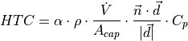
When the die temperature is above , due to the advection of the air and spray medium moisture, the HTC is kept as a constant value.
In order to get reasonable HTC, the efficiency coefficient ,
needs to be calibrated using experimental data. It is 0.75 by default.
Model Setup¶
This model can only be defined through FLOW-3D CAST. Please refer to FLOW-3D CAST Users Manual for details.
Output Options¶
The spray cooling selected data output can only be selected through FLOW-3D CAST. Please refer to FLOW-3D CAST Users Manual for details.
Post Processing¶
Spray cooling results are better to be visualized in FlowSight.
Choose from the Timeline pull-down menu in the Time window. Then in the Geometry List window, select the component that wanted to be visualized, and select from the Type pull-down menu. Then select one of the spray visualization variables (i.e., total_spray_time_selected) from the Color by pull-down list next to the geometry selected.
Thermal Stress Evolution (TSE) in Solidified Fluid Regions¶
The thermal stress evolution (TSE) model is designed to use the finite element method (FEM) to simulate and analyze the stresses and deformations within the solidified fluid region. These stresses can develop as a result of forces exerted by the surrounding fluid, thermal gradients within the solidified fluid, and/or constraints imposed by walls and neighboring components.
Model Setup¶
TSE properties¶
These computations are only performed for the fully solidified fluid cells and therefore the model requires the Solidification model to be turned on. The Thermal stress analysis is activated from the Solidification window.
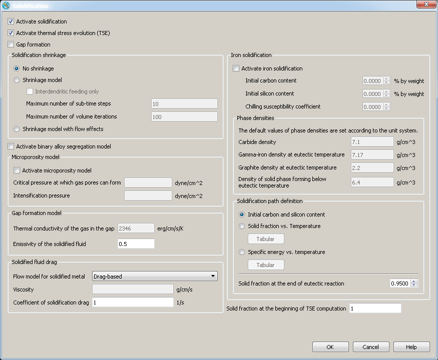
The minimum requirements in terms of the material properties for this model are: Fluid Density and at least two elastic properties out of Bulk Modulus, Shear Modulus, Elastic (Young’s) Modulus, and Poisson Ratio. Unless these minimum requirements are met, the simulation will not start. These properties are set at the widget, at the tab.
The Yield Stress input allow entry of a Yield-stress limiting value (in units of stress). Setting this value for the component activates the Plastic deformation model for that component, which predicts non-elastic deformation locally where the local von Mises stress exceeds the specified value. Leaving the default value -1 means that there is no yielding; i.e., an infinite yield stress limit.
Pressure in the liquid is used as a boundary condition at the
liquid/solid interface. Most of the solidified fluid properties can be defined
as functions of temperature using tabular input. Click on the
Tabular button to enter the temperature-dependent properties
directly, or Import Values from an existing comma separated value
(csv) file, or Use File, where the values from the specified
external file is used. These properties can also be loaded into components
from the menu.
Note
To define density as a function of temperature, it needs to be defined in the Density Properties of Fluid 1. Once a table for density exists, it will also be used for both the liquid and solidified fluid density.
TSE meshing¶
After the elastic properties are provided, it is time to generate a finite element (FE) mesh for the solidified fluid region. This is done from the .
The preprocessor makes use of a rectangular Cartesian mesh around the fluid region to generate the FE mesh. This Input Mesh can be the Cartesian mesh that is ultimately used to solve for the fluid (default), or it can be an independent Local Input Mesh whose purpose is only to generate the FE mesh for the solidified fluid region. The FE mesh generator will, by default, create a FE mesh that encompasses the entire domain except for regions occupied by Solid components or by FEA domain removing components:
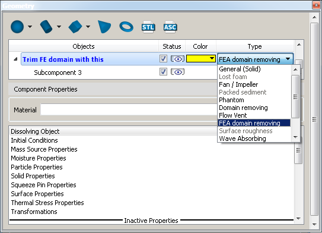
Note
- The Local Input Mesh information will be saved in the
FE Mesh File that is generated in the next step, and not in the
prepin.*file. - Domain regions occupied by moving components are, by default, meshing by FLOW-3D ’s FE mesh generator, since it is assumed that at some point during the simulation, these regions can be occupied by solidified fluid. If you know that there are domain regions that are not going to be occupied by solidified fluid, create a FEA domain removing component in that region.
The cylindrical coordinate fluid mesh can be used to generate the FE mesh, either axisymmetric or fully three-dimensional. The only limitation is that for 3-D meshes, the FE mesh cannot contact the centerline of the mesh; this will result in a singularity point for the FE mesh.
The FE mesh type drop-down menu allows for the selection of either a Hexahedron or Tetrahedron mesh. Hexahedron meshes, the default, are based on six-sided elements, with merging of some vertices in the vicinity of the component boundaries to allow for smooth interfaces. Tetrahedron meshes are composed of 4-sided elements and do not require merging of any vertices. Tetrahedral meshes are simpler, use linear basis functions, and can result in lower CPU times. However, due to the linear basis functions, the results may be somewhat less smooth.
After the Input Mesh is defined, right click on the FE
Mesh File and Generate the FE mesh. If there is no filename
specified, the filename for this mesh defaults to
solidified_fluid.prjext.FEmesh, where prjext is the project
extension. If an FE mesh file already exists, Open it
using the File options button, then right click on the FE
Mesh File and Load and Display the existing FE mesh file. If
satisfied with the FE mesh, select the Use FLOW-3D mesh option from the FE mesh type drop-down menu.
The final option of the FE mesh type drop-down menu is Use EXODUS FE mesh, which allows input of EXODUS II file format meshes. See below for further information on the use of EXODUS II meshes.
Note
- If the Use FLOW-3D mesh option is not checked, the FE mesh file is regenerated every time Generate or Preprocess Simulation is selected.
- The preprocessor meshes the whole open region within the Input Mesh. If it is known a priori that any solidified fluid is not going to be present in a part of the open region, that section can be removed from the FE mesh with a component whose the Component type selection is FEA domain removing.
Where the solidified fluid region is in contact with neighboring components, the model needs to know how these components behave. For non-FSI components, or when TSE/FSI coupling is set to No coupling (see below) the neighboring components can either be a Constraining Component or a Non-constraining component. Examples of constraining components are steel dies: the deformation of the component will be small in response to stresses developed within the solidified fluid region. Conversely, an example of a non-constraining component is a sand mold: such molds will not support significant stresses, and thus offer no constraining forces to the solidified fluid region.
Note
For a Thermal Stress Evolution region, if the surrounding component is porous then the default component interaction setting is non-constraining.
TSE Controls¶
Solid fraction activation¶
The TSE model is automatically activated when the solid fraction is 1 in a
given cell. In certain cases the stresses in the cells become significant when
the solid fraction less than 1. The FSTSE parameter allows the user to specify
the solid fraction at which the stress computations can begin in the finite
element mesh. This provides flexibility in the usage of the TSE model.
Numerical Options¶
For simulations where the complex interactions between the TSE region and neighboring components are needed to be simulated, the neighboring components can be specified to be FSI components, and the Partial coupling option selected in the option box (see image above). By default, No coupling is selected, which allows for only basic Constraining or Non-constraining options. The Partial coupling allows the TSE region and FSI components to separate and slide past one another, but they cannot interfere. The sliding friction is controlled by specifying a value for the Friction coefficient. By default, sliding friction is not limited (i.e., sliding cannot occur so long as the TSE region and FSI components are in contact); setting this to 0.0 or greater allows for sliding. Physical values are typically less than 1.0.
The solver used for the solution of the stresses within the
solidified fluid region is similar to the GMRES pressure solver.
This is the only solver currently available, and the user can adjust the GMRES
subspace size (sometimes called the restart number, and is
MRSTRTFSI in the input file), the maximum number of iterations and
the convergence tolerance. Changes to these parameters are made from the
FSI/TSE solver options section of the Numerics tab:
The default value of the GMRES subspace size is 20. Increasing this value will allow the solver to achieve convergence with fewer iterations; however, the CPU time per iteration will increase and the memory usage will rise with the subspace size. In some simulations where convergence is not being reached (i.e., the maximum number of iterations are being done and the FEA convergence ratio is greater than 1), increasing this value can drastically reduce the overall CPU time.
Additionally, if the option Dynamically selected subspace size is selected, the solver will automatically adjust the subspace size to optimize solution efficiency. In this case, the entered (or default) value of the GMRES subspace size becomes the maximum subspace size. Therefore, setting it to a largest value possible with this option is a good idea (up to the memory available on the computer), since it allows for greater solver flexibility. In cases where convergence is easily achieved, the subspace size will automatically be reduced to maintain optimum solver efficiency.
The Maximum number of iterations limits the number of iterations used by the solver; the default value is 25 which should be more than enough for most simulations. If the FSI iteration count in the solver is repeatedly reaching the limit (as seen in the Simulation messages), this limit or the subspace size can be increased. It is recommended (up to the limit of available memory) to try increasing the subspace size first.
The Convergence tolerance specifies the maximum residual permitted in the solution of the solid dynamics equations. This value is dimensionless independent of the mesh size and time step. The value represents a relative error in the computed strain. The default value is 10-3, which should work well for most simulations. However, if the goal of the simulation is to get a final-time stress result, rather than accurate time-dependent results, raising this value will not greatly harm the accuracy of the end result. For simulations where the displacements and stresses are needed to be highly accurate during the course of the simulation, lowering this value can help. Note that convergence generally becomes increasingly slow for values of the convergence tolerance smaller than 10-8 for reasons of machine precision round-off.
The option Preconditioning of FSI GMRES (on by default) uses a preconditioning algorithm prior to running the GMRES algorithm, with the goal of reducing the number of GMRES iterations. The preconditioning algorithm is only used when:
- The option Preconditioning of FSI GMRES is activated, and
- The average number of iterations needed to solve the solid dynamics equations during the previous 10 computational cycles exceeded 4.
The option Fully coupled stress between solidified and non- solidified fluid allows control of the boundary condition between solidified and non-solidified fluid as the solidification front develops. The default (turned off), is to fix the location of this interface during each cycle. This is more numerically stable, minimizes computational time, and ensures that “floating bits” of solidified fluid are sufficiently constrained for numerical efficiency. In cases where it is important to simulate the coupling of stresses between the non-solidified fluid (i.e., pressure) and solidified material, select this option. Selection of this option does raise the risk of numerical issues occurring during solidification, and will likely increase computational time.
Important considerations¶
If gravity is used in the simulations, the solidified fluid region must be in contact with mesh boundaries or other components so that it cannot move freely. If not constrained, the solid dynamics equations will predict rigid-body motion for the solid, and this motion will not be represented in the fluid. Free-floating solidified fluid regions can be modeled in the absence of gravity.
Post-processing¶
The finite-element results produced by the model can be viewed in a separate display. To access the TSE data, from the Analyze tab, select the FSI TSE sub-tab:
From this tab, select which of the components to view.
Note
The solidified fluid region is always labeled as Component 0:
Also selectable are the time limits, and the data source. Note that to view Selected data, Fluid structure interaction must have been chosen from the Selected data list in during setup of the simulation. Click Render and the Display tab appears, and from here various data variables can be plotted for the FSI component. Other controls to zoom, rotate, etc., are the same as the 3-D display.
The default display is the Normal displacement. This shows the surface displacement in the direction of the outward-pointing normal over the entire surface of the component, relative to its original conformation. Negative values indicate that the surface is pulled in and positive values indicate that the surface is pushed out relative to its original position. Individual displacements throughout the component in the x, y and z directions can also be displayed by selecting X displacement, Y displacement, or Z displacement, respectively.
There are 6 components of elastic stress and 6 components of strain available for plotting. These are the 6 independent components that comprise the symmetric stress and strain tensors. These components are difficult to conceive for three-dimensional simulations, as even simple 1-D tension, diagonal to the coordinates, will produce non-zero values in many of the stress components. That is why the mean iso stress and the Von Mises stress are provided. These are stress invariants, and as such, are independent of the coordinate system chosen. The mean iso stress is the isotropic stress which is the amount of compressive (negative values) or tensile (positive values) stress in the solid, which could indicate areas most prone to buckling or cracking. In contrast, the Von Mises stress is a measure of shearing stresses; its value is always positive. Regions with high shear stress are more prone to tearing. Therefore, a solid under pure compressive or tensile stresses can have a negligible Von Mises stress; conversely, a solid under pure shear can have negligible tensile or compressive stress.
If a value was specified for the Yield Stress, then data will also be available for the plastic deformation of the solidified fluid region. This data includes the independent components of the plastic strain tensor (all non-dimensional), and the plastic strain magnitude (the second invariant of the plastic strain tensor). These values indicate the locations within the component where the greatest amount of plastic strain occurred.
Temperature is available for plotting as a convenience. This temperature is the same as the fluid temperature available from the fluid 3-D display. The volume expansion indicates regions of the component that have expanded (positive values) or shrunk (negative values) during the course of the simulation. Such expansion or contraction could be caused by temperature changes, or by tensile or compressive stresses.
Export/Import TSE Meshes¶
TSE mesh and data can be imported or exported to EXODUS II file format, which is a random access, machine independent, binary file format. EXODUS II is a widely used model developed to store and retrieve data for finite element analyses. The ability to export TSE mesh and data files in EXODUS II file format enhances portability and makes it possible to view FSI results outside the FLOW-3D GUI. ParaView is a free, multi-platform data analysis and visualization application that can be used to view EXODUS II files. To generate EXODUS II output files, select . In the Additional output section, select the required option in the FSI/TSE EXODUS output format drop-down menu.
The TSE mesh file stores only the FE mesh information (elements, nodes, etc.) while the TSE data file includes FE mesh information and as well node properties such as stress, strain, etc. at each FE mesh node. The TSE data variables table provides a description of all TSE data variables.
The TSE mesh file has the extension .EXFEmesh.exo and is written
out only once, immediately after the pre-processing stage. The TSE data file has
the extension .EXFEdata.exo and is written out at the same frequency as the
restart data. The EXODUS II data file is a single file (one for
each FSI component) that contains FSI data at all restart output times. In the prepin.*
file, the variable IEXODUSOUT (in namelist XPUT) can be used to
write out TSE mesh and data files in EXODUS II format (see
File Control Options for details of usage).
| FE MESH VARIABLE | DESCRIPTION |
|---|---|
stressxx |
xx-component of Elastic stress tensor |
stressxy |
xy-component of Elastic stress tensor |
stressxz |
xz-component of Elastic stress tensor |
stressyy |
yy-component of Elastic stress tensor |
stressyz |
yz-component of Elastic stress tensor |
stresszz |
zz-component of Elastic stress tensor |
DISPLX |
x-component of local displacement vector |
DISPLY |
y-component of local displacement vector |
DISPLZ |
z-component of local displacement vector |
strainxx |
xx-component of symmetric strain tensor |
strainxy |
xy-component of symmetric strain tensor |
strainxz |
xz-component of symmetric strain tensor |
strainyy |
yy-component of symmetric strain tensor |
strainyz |
yz-component of symmetric strain tensor |
strainzz |
zz-component of symmetric strain tensor |
rel volume expansion |
Relative volume expansion. The first invariant (trace) of strain tensor |
mean iso stress |
Mean isotropic elastic stress. Represents a measure of purely compressive (if negative) or tensile stresses (if negative). Equal to one-third of the trace of the elastic stress tensor. |
VM stress |
Von Mises stress. Represents a measure of shearing stresses; its value is always positive. Regions with high shear stress are more prone to tearing. This is the square root of the second invariant of the elastic stress tensor. |
Temperature |
Local solid temperature |
norm displ |
Normal displacement of the solid component boundary. Non-zero only at component interfaces. |
Active node? |
The activity state of the local node. Nodes located where fluid is still liquid (i.e. ) or within void are inactive. |
pstrainxx |
xx-component of plastic strain tensor. Valid only when yielding (YLDSTRTS 0) is specified. |
pstrainxy |
xy-component of plastic strain tensor. Valid only when yielding (YLDSTRTS 0) is specified. |
pstrainxz |
xz-component of plastic strain tensor. Valid only when yielding (YLDSTRTS 0) is specified. |
pstrainyy |
yy-component of plastic strain tensor. Valid only when yielding (YLDSTRTS 0) is specified. |
pstrainyz |
yz-component of plastic strain tensor. Valid only when yielding (YLDSTRTS 0) is specified. |
pstrainzz |
zz-component of plastic strain tensor. Valid only when yielding (YLDSTRTS 0) is specified. |
pstrainmag |
xx-component of plastic strain tensor. Valid only when yielding (YLDSTRTS 0) is specified. This is the square root of the second invariant of the plastic strain tensor. |
nn:T |
Normal component of traction on the component interface. This is a measure of the force (due to surrounding fluid, neighboring components) on the component. Non-zero only on component interfaces. |
It is also possible to import EXODUS II meshes into FLOW-3D . Using this feature, EXODUS II meshes generated previously using FLOW-3D can be used to specify the FE mesh instead of the default FLOW-3D FE mesh format.
In the user interface, the final option of the FE mesh type drop-down menu is Use EXODUS FE mesh, which allows input of EXODUS II file format meshes.
Two-Fluid Flow¶
For two-fluid problems, set . In such Fluid #1 is described with the unit value of the Fluid fraction, F = 1.0. Regions where F = 0.0 are filled with fluid #2. Values of the fluid fraction between zero and one describe a mixture of the two fluids in terms of the volume fraction of fluid #1.
Properties of each of the fluids, e.g., density and viscosities, are set in widget. There are separate branches for parameters related to each of the fluids.
Heat transfer coefficients at fluid-component boundaries can be set separately for each fluid in . Cross baffle heat exchange can be set in .
The value of the fluid fraction at open mesh boundaries determines the two-fluid mixture at these boundaries: the value of 1.0 defines fluid #1 at the boundary, while the value of 0.0 defines fluid #2. A fractional value signifies a mixture in terms of the volume fraction of fluid #1; mixtures only make sense in FLOW-3D when the No sharp interface option is selected from .
In two-fluid models, either sharp interface between the two fluids is expected or the fluids are miscible. In the latter case the fluids may intermix with each other due to fluid advection and diffusion. Specify the type of interface in .
Only fluid #1 can have liquid/solid phase transformations (see Solidification).
Fluid #1 is always incompressible, while fluid #2 can be either compressible or incompressible as defined by the selection.
There is only one velocity value in each computational cell. When densities of the two fluids differ greatly, i.e., roughly by more than a factor of 10, and the viscous boundary layer at the interface is thin (i.e., less than one cell width), this mixture velocity may not adequately represent the flow, since velocities of each of the fluids in the same cell can be very different. As a consequence, slip conditions between the fluids are not modeled accurately, which may result in an incorrect fluid interface motion. When modeling two fluids with fluid #1 heavier than fluid #2 by more than a factor of 10.0, separated by a sharp interface, and with the viscous boundary layer at the interface much thinner than the cell size, the Two-fluid interface slip model may help to obtain more accurate results. This model improves the momentum coupling at the interface between such fluids. Two-fluid interface slip model is activated on the section.
Note
No void regions can be modeled with two-fluid models since all open space complementary to regions occupied by fluid #1 are filled with fluid #2.
Viscosity and Turbulence¶
Wall Effects: Slip, Shear, and Component Roughness¶
When fluid moves around a solid body, the flow encounters resistance that depends upon the flow velocity, turbulence, and the roughness of the bounding surface. The effect of these boundary flows results in additional shear stress, drag, and (in the case of sediment beds) erosion. Modeling these wall (or boundary) effects requires attention to the slip-condition of the surface, the surface roughness, and a mesh size that adequately resolves the near-wall velocity profile. Approaches to modeling each of these parameters are detailed below.
See also
Flow Science Technical Note 60 on modeling roughness effects in open channel flows can be found at http://users.flow3d.com/technical-notes/.
Wall Slip¶
Slip describes the presence of flow velocity directly against a boundary to the flow. In general, surface conditions are described as no-slip, partial-slip and free-slip.
Free-slip surfaces are surfaces at which there is no change in the velocity profile normal to the surface, and are often used to describe the interface between two fluids (like water and air) that differ by more than an order of magnitude in density. Partial-slip boundaries describe a partial reduction in fluid velocity at the boundary, and may be used to describe, for example, oil flow in pipelines with emulsified coatings inside the pipe. By the far the most common type of boundary condition are no-slip boundaries, which describe nearly all fluid/solid interfaces.
Viscous boundary conditions on geometry components and mesh walls include a slip velocity which is linearly proportional to the wall shear stress (see Wall-Shear Stress in the Theory manual for details). The coefficient of proportionality is the friction coefficient, which applies globally to solid components with unspecified friction coefficients as well as wall-type domain boundaries. The global coefficient can be specified on the . The global friction coefficient applies to all wall-type boundaries, and defines the default value for all solid components.
Component-specific friction coefficients that override the global value can be defined: .
As the friction coefficient approaches infinity, the wall slip velocity approaches zero (no-slip). To avoid specifying an arbitrarily large value, the no-slip option is activated by defining a negative value of friction coefficient. A finite, positive friction coefficient results in a partial-slip boundary. Zero specifies a free-slip boundary condition. By default, the Static friction coefficient = -1.0 so all unspecified components have no-slip surfaces.
Note
A warning occurs if partial slip is defined for an existing component with turbulence model turned on.
No-slip and partial-slip surfaces require dynamic viscosity, defined under .
Wall Shear¶
Wall shear stresses are modeled by assuming a zero tangential velocity on the portion of any area closed to flow. This zero tangential velocity is modified at mesh boundaries with tangential velocities and for the surfaces of moving objects.
Wall shear stresses are calculated when Viscous Flow is activated in the window, and a positive fluid Viscosity is specified on the widget.
Shear stresses are calculated automatically (but not automatically output) for no-slip and partial-slip components (i.e., with non-zero friction coefficients) unless the component Surface Roughness coefficient () is a negative number. Shear stress can be output by selecting Shear Stress under .

Component specific shear stress can be output by selecting Force in the tab for the component of interest.
Accurately modeling shear stress, strain rate, and the near-wall velocity profile requires that the mesh be adequately resolved. The first cell adjacent to a solid component or wall surface is where the logarithmic or laminar wall velocity profile is applied. The cells along the surface are either normal to the surface, if the surface is on a grid line, or they contain the wall surface.
If the flow is Laminar (as set in the Viscosity and Turbulence physics subwindow) the velocity profile is calculated via direct differentiation. The cell average velocity will always be correct, and the velocity profile is better resolved as the mesh is refined. The optimal cell size depends only on the required profile accuracy and the tolerated computational time, both of which increase as the cells get smaller.
If a Turbulence model is active, the first cell near the wall or solid component always gets its velocity according to a logarithmic profile corresponding to the log-law region shown below. The first cells along the wall should be sized so that they include the viscous sub-layer and end well within the log-law region of the boundary layer. If the first cell outer edge falls in the viscous sub-layer or extends into the outer, or free-stream, region, then the calculated near-wall velocity and shear stress deviate from the physical case, where they do not correspond to the log-law relation.
Finding a good range of cell sizes is a matter of estimating the height
(thickness) of the boundary layer regions normal to the solid surface. A
helpful value for this is the non-dimensional normal distance from the wall
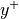, sometimes referred to as the viscous length and illustrated
in relation to dimensionless velocity above. In the equations
below, is the shear velocity, is the shear
stress on the solid, is the normal distance from the solid,
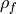 is the fluid density, and  is the fluid
dynamic (molecular) viscosity.
is the fluid
dynamic (molecular) viscosity.
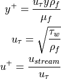
In order to estimate , the shear stress must be
estimated manually, and the interested reader is referred to the hydraulics
literature for help with this. In general, (as a function of
the cell size) should be greater than 30 (where the inner layer transitions
smoothly into the log-law region) and less than a value that depends on the
Reynolds number of the flow and the thickness of the boundary layer (generally
100 to 500 is a reasonable upper limit). When manual estimation of
 is impossible, multiple simulations can be used to iterate
toward a ‘best fit’, where the observed value (shear stress or velocity)
levels off. The approximations used to calculate parameters at solid surfaces
assume that flow is fully developed, and caution should be exercised when
interpreting the results for undeveloped flows.
is impossible, multiple simulations can be used to iterate
toward a ‘best fit’, where the observed value (shear stress or velocity)
levels off. The approximations used to calculate parameters at solid surfaces
assume that flow is fully developed, and caution should be exercised when
interpreting the results for undeveloped flows.
If the component surface matches the direction of the grid lines then fixed
points should be used at the surface itself and at the appropriate distance from
the surface (so that the first cell distance meets the
criteria just explained). If the obstacle surfaces are not parallel to the mesh
grid lines, use nested mesh blocks where appropriate so that the cells nearest
the surfaces are adequately sized. Keep in mind that these guidelines may need
to be ignored for simulations where cubic cells are necessary (as when surface
tension is to be modeled).
Note
Shear stresses are affected by the strain rate, which can be added to the Restart Data and Selected Data output by selecting . This will output the strain rate magnitude, defined as the square root of the second invariant of the strain tensor: .
Component and Sub-Component Roughness¶
Wall shear stresses at object surfaces can be modified by defining surface
roughness. Roughness has the dimensions of length, and is incorporated into
the usual shear stress calculations for laminar flow by adding to the molecular viscosity the
product of fluid_density roughness
relative velocity, where relative velocity means the difference between
the local fluid velocity and the wall velocity (which is zero for stationary
walls and components).
In this implementation the wall shear stress with the laminar flow model is equal to
where:
- is the roughness,
 is the kinematic viscosity,
is the kinematic viscosity, is the relative velocity, and
is the relative velocity, and is the length scale of interest normal to the surface.
is the length scale of interest normal to the surface.
When the roughness is large enough, the stress is proportional to
In the Turbulent flow models, the law-of-the-wall relation retains
the same form as for a smooth wall, except the change in viscosity (i.e., from
to ) automatically converts the logarithmic
dependence from a characteristic length scale defined by to
, when is the larger of the two characteristic lengths.
To make sense in a numerical simulation, the roughness should be smaller than the grid cell size at the component boundary, although larger values can be used. The rough component should be assigned a no-slip surface (via a negative static friction coefficient).
In FLOW-3D , the roughness parameter can be defined in three different ways. It can be set individually for
each component under :
Roughness can also be set at the sub-component level by defining the surface roughness values for individual sub-components. If roughness is defined at the sub-component level, then these values will overide values set at the component level.
A spatially varying roughness can also be defined with a raster file by creating a Surface Roughness component type. See Surface roughness in the model setup section of the help manual for a detailed description. If a raster file is used then these values will overide inputs set at the component and sub-component level. For any grid cells in the raster defined as NODATA, the underlying component or sub-component roughness values will be applied.
Surface Roughness is defined as the average height of uniformly-distributed surface roughness elements, such as the roughness referenced in Moody diagrams. If the actual surface is uniformly rough, this height can be applied directly, but if the surface is non-uniform then an equivalent roughness value must be selected that will provide accurate results. For example, the common Manning’s equation relating mean velocity, hydraulic radius, and hydraulic slope uses an equivalent roughness parameter (Manning’s n) that can be converted to FLOW-3D ’s Surface Roughness when the hydraulic radius associated with the Manning’s coefficient is known. Manning’s equation is given as:
where:
- is the mean flow velocity in a channel or conduit,
- is the hydraulic radius (fluid cross-sectional area divided by the wetted perimeter),
 is the hydraulic slope of the flow, typically (and often incorrectly) assumed to be the physical slope of the conduit or channel, 1.49 is a conversion factor so that all other units are in the meters/kilograms/seconds (SI) system, and
is the hydraulic slope of the flow, typically (and often incorrectly) assumed to be the physical slope of the conduit or channel, 1.49 is a conversion factor so that all other units are in the meters/kilograms/seconds (SI) system, and- is the Manning’s roughness.
For non-uniform surfaces, the equivalent uniform roughness can be computed from Manning’s n and an estimated hydraulic radius or diameter as shown in the equation below in which the Surface Roughness is the roughness variable used in FLOW-3D , all variables are in SI units (meters), and the flow is fully turbulent and hydraulically rough. The hydraulic diameter is defined as four times ( = 4 ).
The conversion given above is derived from the Swamee-Jain equation for pipes and equivalent ducts:
where the following assumptions are applied:
- is 1.486 when is in feet while 1.0 if in meter;
- is 1.0 when the assumption of Manning’s equations are met;
- is much larger than 5.74;
This is technically valid only for the hydraulic diameter which corresponds to the flow stage at which the Manning’s n was originally measured. The conversion is checked as follows: a typical literature value of n for mortar concrete is 0.013. Assume that n was measured in a channel with hydraulic radius 1.25 feet (hydraulic diameter of 5 ft), in which case the Surface Roughness is 0.0033 feet, or about 1 mm, which is also a typical literature value for mortar cement. The calculated value of the Surface Roughness is approximately for hydraulic diameters between 1 and 10 feet. The limitations in the range of hydraulic diameters should always be checked.
Note
Surface Roughness > 0 also turns off superheating of liquid near the surface of the component in the phase change model (see Cavitation and Bubble Formation (Nucleation)).
The value of the Surface Roughness does not affect component/fluid heat transfer. If the component-to-fluid heat flux is to be enhanced due to surface roughness, use the Surface Area Multiplier variable which works as a heat transfer surface area multiplier for the component. By default, Surface Area Multiplier = 1.0. Surface Area Multiplier = 0 disables the heat exchange between fluid and component, as well as the component Mass source (if used).
Temperature and Strain Rate Dependent Viscosity¶
Non-Newtonian fluids are any fluid whose viscosity is not constant under varying flow conditions. Some fluids are shear-thickening and thicken under shear, while others are shear-thinning, which become less viscous under high shear. Also, for simulations with varying temperature, viscosity is typically temperature-dependent. Furthermore, the viscosity of some fluids is history-dependent; such fluids are thixotropic and require the Thixotropic Fluids model.
In FLOW-3D , only Fluid 1 can be non-Newtonian. In two-fluid simulations, To set up a non-Newtonian fluid, merely activate Viscous flow in . Turbulence is typically not important in non-Newtonian flows; however, turbulence options can also be selected. It should be kept in mind that the Turbulence Models rely on empiricism that does not take into account non-Newtonian fluid behavior. Therefore, the turbulence models are usually not valid for non-Newtonian fluids and should be used with caution for non-Newtonian fluids.
In , you can select from a drop-down menu the choice of viscosity models. The default is Constant. Non-Newtonian models include Temperature Dependent Table, Strain Rate Dependent Table, Strain Rate Dependent Function, Strain Rate and Temperature Dependent Function, Carreau Function, and Power Law:
When Temperature Dependent Table or Strain Rate Dependent Table are selected, click on the adjacent Tabular button which allows entry of tabular data for viscosity as a function of temperature or strain rate:

Note
The user-defined tabular data is converted by the preprocessor into internal data structures that are optimized for use by the solver. The conversion involves remapping of the input table onto new table with equal spacing. The first and last points in the internal table for the temperature- or strain-rate-dependent viscosity are taken from the respective input tables, while the number of points in between is fixed at 10000. Linear interpolation is used during the conversion.
This approach is typically adequate for smoothly varying data. However, in cases where viscosity varies significantly over a range of temperature or strain rate that is comparable to the spacing of the internal table, the conversion may introduce significant errors. A way around it is to reduce the temperature or strain rate range in the input table as much as possible, thus decreasing the spacing in the internal table to improve the resolution.
When Strain Rate and Temperature Dependent Function or
Strain Rate Dependent Function is selected, the fluid viscosity is
defined as a function of strain rate and/or temperature with the user-defined
coefficients  ,
,  ,
,  ,
,
 , and
, and  . Temperature-dependency
is defined with constants , and :
. Temperature-dependency
is defined with constants , and :
These coefficients define viscosity with the following constitutive relation:
where
and  is the zero-shear viscosity, defined as the regular constant
viscosity value (next to Viscosity in the GUI) and
is the zero-shear viscosity, defined as the regular constant
viscosity value (next to Viscosity in the GUI) and  is defined as . Selecting the proper coefficients allows the user to employ a
variety of approximations for non-Newtonian fluid behavior.
is defined as . Selecting the proper coefficients allows the user to employ a
variety of approximations for non-Newtonian fluid behavior.
When the Carreau Function option is selected, a simplified function relating viscosity to strain rate is used:
Here only parameters related to the Carreau model need to be defined; they are shown as active in the GUI. This simplifies the viscosity definition for Carreau-type fluids.
When the Power Law model is selected, another simplified function relating viscosity to strain rate is used:
Here only parameters related to the power-law model need to be defined; they are shown as active in the GUI. This simplifies the viscosity definition for power-law-type fluids.
When any non-Newtonian model is used, the preprocessor will make two
additional plots in the prpplt file. One is for dynamic viscosity vs.
strain rate at a given temperature and the other one for viscosity vs.
temperature at a given strain rate. Since it is difficult for the preprocessor
to select the plot ranges and values of the strain rate and temperature at
which to make these plots, users can define these settings using four
so-called dummy variables as described in the User Defined Variables
section of the Input Variable Summary chapter:
DUM1defines the temperature for which viscosity vs. strain rate will be plotted, and is also the center temperature value for the viscosity vs. temperature plot;DUM2defines the plot range, fromDUM1-0.5*DUM2toDUM1+ 0.5*DUM2, for the viscosity vs. temperature plot;DUM3defines the strain rate for which viscosity vs. temperature will be plotted, and is also the center strain rate value for the viscosity vs. strain rate plot;DUM4defines the plot range, fromDUM3-0.5*DUM4toDUM3+ 0.5*DUM4, for viscosity vs. strain rate plot.
Note
- For strain-rate-dependent viscosity, the primary variable is the strain rate magnitude, defined as . The same variable is output during simulation as the Strain rate magnitude
- Non-Newtonian fluid flows often occur at low Reynolds numbers. As a result, the time-step size may be controlled by viscous shear stress if the Explicit viscous stress solver is used. To avoid this limitation, which may significantly slow down the simulation, an Implicit viscous stress solver can be used instead by setting or . However, convergence may be slow if large viscosity gradients are present in the flow.
- There is some additional logic in the viscosity calculation that will limit the maximum viscosity to approximately to prevent numerical issues.
See also
- Discussion of mesh boundary conditions in Outflow Boundary Conditions.
- Thixotropic Fluids
- Wall Slip.
Thixotropic Fluids¶
Apparent viscosity in a thixotropic fluid is a direct function of time. The time-dependency is described in FLOW-3D in terms of thinning and thickening rates which control the speed at which the apparent fluid viscosity approaches the local steady-state value. The steady-state viscosity is typically a function of shear rate and possibly temperature. When the steady-state viscosity is greater than the apparent viscosity, the latter will increase at this point in the flow at the thickening rate. Conversely, the apparent viscosity will decrease at the thinning rate when it is greater than the local steady-state viscosity. Thixotropic fluids are always non-Newtonian, and also must be defined as such in FLOW-3D (see Temperature and Strain Rate Dependent Viscosity).
The thixotropic viscosity model is activated by selecting :
There are two constants for the rate of relaxation by thinning, , and thickening, .
The rate of thinning, , can also be strain rate dependent if the
Strain Rate Sensitivity coefficient is defined:
where:
- ,
 is the Constant Thinning Rate,
is the Constant Thinning Rate,- is the Strain Rate Sensitivity,
The Constant Thinning rate and Constant Thickening rate have the dimension of reciprocal time, while the Strain Rate Sensitivity is dimensionless. All rate coefficients default to 0.0 – i.e., no thixotropic effects.
You must define a non-Newtonian viscosity model (see Temperature and Strain Rate Dependent Viscosity) that approximates the desired material behavior under steady conditions. Use the parameters in the branch to define the material. Also specify the Initial and boundary viscosity value.
Because the viscosity in thixotropic simulations can become very large, the Successive under-relaxation or Line implicit can be chosen from ) to avoid small time-step sizes required by the explicit algorithm for very viscous flows.
Note
The input and output strain rate is actually the strain rate magnitude,
See also
Wall Slip and Temperature and Strain Rate Dependent Viscosity.
Turbulence¶
Six choices for viscosity evaluation (turbulence closure) are available in FLOW-3D . Select the desired evaluation in . All models require the viscosity model to be activated and a positive value of the dynamic viscosity. Enter viscosity for fluid #1 (and fluid #2, if present) in after first activating viscous flow.
See Turbulence Models section of the Theory chapter for details on each of these models.
If no initial or boundary conditions for turbulence are specified, then the initial and boundary values of the turbulent kinetic energy are set by the program to small values-physically, this represents laminar flow. If the inflow is truly turbulent, then, as a rule of thumb, the upstream flow turbulence level is set assuming turbulent velocity fluctuations in the undisturbed flow equal to 10% of the mean flow velocity. For example, for a mean upstream velocity of 20 m/s, the magnitude of the turbulent fluctuations of the velocity, , is 2 m/s and the boundary value of the turbulent kinetic energy (per unit mass) is
Program defaults are used to set the coefficients that appear in the turbulence models. The value of these coefficients may be changed as necessary, although it is not generally recommended.
The Turbulent mixing length should be set by the user for the one-equation turbulent energy model since the default value, 0.07 of the smallest domain dimension (excluding any mesh direction which has only 1 cell), may not be always suitable as it does not include geometry effects or the actual flow field scales. This parameter describes the characteristic size of the turbulent eddies present in the flow and is used to define the maximum allowed value of the turbulent viscosity coefficient.
The Maximum turbulent mixing length is used by the
Two-equation  model, the
Renormalized group (RNG) model, and Two-equation
model to set a minimum limit on the
turbulent dissipation
model, the
Renormalized group (RNG) model, and Two-equation
model to set a minimum limit on the
turbulent dissipation  so that the computed turbulent
viscosity does not become excessively large. This value is computed
automatically as a function of time and location during simulation if the
option Dynamically computed is selected from the
(see above).
Alternatively, the user can prescribe a value of the Maximum
turbulent mixing length by selecting Constant and providing a
value in the adjacent edit box.
so that the computed turbulent
viscosity does not become excessively large. This value is computed
automatically as a function of time and location during simulation if the
option Dynamically computed is selected from the
(see above).
Alternatively, the user can prescribe a value of the Maximum
turbulent mixing length by selecting Constant and providing a
value in the adjacent edit box.
The larger the Maximum turbulent mixing length, the smaller the turbulent dissipation may become during the simulation. Since turbulent dissipation appears in the denominator of the equation for the turbulent viscosity, the latter can become large as well, especially in flow regions with small rates of shear. Conversely, smaller values of Maximum turbulent mixing length will result in smaller turbulent viscosity and, therefore, lead to excessively damped out turbulence.
For example, in a spillway simulation, the length scale used to compute the Maximum turbulent mixing length could be the depth of the flow over the spillway; in a high pressure die casting, the length scale could be the smallest width of the runner; for flows in pipes and ducts, the length scale could be the hydraulic diameter of the flow channel. Once the length scale is determined Maximum turbulent mixing length is computed as 0.07, or 7% of the length scale.
At inflow boundaries, the user can specify turbulent kinetic energy and dissipation directly. If a value is provided for the turbulent kinetic energy, but not dissipation, then a value for the dissipation will be automatically computed based on the value of Maximum turbulent mixing length defined in the edit box, or default value, if one is not provided.
Note that the formulation used for the viscosity evaluation may be changed at
program restarts (see ). It
is not recommended to use an implicit viscous algorithm with turbulence models
that involve a solution of turbulent transport equations (, RNG,
 or One-equation)
since the viscous diffusion terms in these equation are always approximated explicitly.
or One-equation)
since the viscous diffusion terms in these equation are always approximated explicitly.
See also
Theory manual section Turbulence Models.
Turbulent Diffusion Coefficients¶
The diffusion of scalar density, fluid density, and fluid energy are all treated in analogous ways
by FLOW-3D . For each of these processes, the total diffusion coefficient is proportional to the dynamic viscosity,
as shown in the General Scalar Transport equations (43) and (44).
The turbulent diffusion multiplier (RMSC) is defined as the reciprocal of either the turbulent Schmidt
or turbulent Prandtl numbers. The turbulent Schmidt number is in terms of a dimensionless number that represents
turbulent mass diffusion processes and is defined as the ratio of momentum diffusivity to mass diffusivity.
The turbulent Prandtl number is analogous to the turbulent Schmidt number, but for energy diffusion processes. It is
defined as the ratio of momentum diffusivity to thermal diffusivity. The value of RMSC is defined separately
for thermal energy, fluid density and scalar density transport in the diffusion coefficients options
in . These are entered as the Fluid internal energy,
Fluid density and Scalar species, respectively. Larger values of RMSC increase the diffusion of
each of these properties with increased levels of turbulence.
Scalar species defines the RMSC for all scalar transport models. The default value is equal to zero,
but the user can input a value as the inverse turbulent Schmidt number. This value can also be defined differently for individual
scalars within options.
Fluid density and Fluid internal energy are the inputs for RMSC in the and models, respectively. Both of these inputs have default values of 1/0.7 when using the RNG turbulence model [YS92]. When entering a user defined value for Fluid density it is entered as the inverse molecular Schmidt number, and for Fluid internal energy as the inverse molecular Prandtl number. These inputs are converted to their respective turbulent diffusion values in FLOW-3D [YS92]. For all other turbulence models the default values are equal to 0, and user inputs are defined directly as the inverse of the turbulent Schmidt and Prandtl numbers.
Viscous Heating¶
Viscous heating model can be turned on by checking . Note that Viscous flow must be selected under Turbulence options:

{kind=link}
{kind=link}
{kind=link}
{kind=link}
{kind=link}
{kind=link}
{kind=link}
{kind=link}
{kind=link}
{kind=link}
{kind=link}
{kind=link}
{kind=link}
{kind=link}
{kind=link}
{kind=link}
{kind=link}
See also
Thermal Diffusion and Sources in the Theory manual for more information on this feature.
Note
- This option requires an option in to be activated.
- Only used if a non-zero dynamic viscosity of a fluid is defined in the Fluids section of input.
Viscosity Output¶
Fluid viscosity is automatically saved for post-processing whenever it is a
function of other variables such as temperature, strain rate or turbulence.
Conversely, when viscosity is constant, for example, in a laminar flow of a
Newtonian fluid, it is not generally available for post-processing. The user
can override the default behavior by requesting Dynamic Viscosity
in the Advanced tab of the
widget. This function is particularly useful when the FORTRAN routine
mucal.F90, where fluid viscosity is computed, has been customized.
{kind=link}
Wind Shear Stress¶
When modeling large open bodies of water, it is often desirable to include a wind shear stress on the free surface. This can be done in FLOW-3D for a horizontal water surface, i.e., the water surface has an outward normal in +z direction, and the gravity is in -z direction. The flow can be two-dimensional (in x-z or y-z plane), three-dimensional, or shallow (depth-averaged flow in x-y plane). The wind shear stress is calculated using the quadratic law
where:
 is the density of air,
is the density of air,is the wind velocity at 10m above water surface, and
is the wind shear coefficient (or drag coefficient) with a typical value of 0.003.
Wind velocity can be constant or time-variant but must be uniform over the
water surface. Wind parameters are defined in . Under Wind type, choose Constant wind or
Time variable wind. If Constant wind is selected,
enter X-velocity and Y-velocity of wind at 10m above
water surface. If, instead, Time variable wind is selected, use
Browse button to load a user-defined wind data file. The file
should have three columns which from left to right represent time, x velocity
and y velocity of wind at 10m above water surface. The total number of rows in
the file should not exceed 5000. During a simulation, wind velocity at any
time is calculated by linear interpolation. Under Wind
shear parameters, define Wind shear coefficient () and Air density (). The default
value of is 0.003. Finally, it is important to note that the Wind Shear Stress model works only for 1 Fluid models with a free surface.
FLOW-3D and TruVOF are registered trademarks in the USA and other countries.